Pallas

Who are my friends
Group composition by personality type
Who are my friends?
The question sounds simple ... but it is complicated,
and psychology experts still do not have an answer.
So: We must help ourselves.
and psychology experts still do not have an answer.
So: We must help ourselves.
Topic:
Justice.
People and relations.
Target group:
People with a future.
Farmers and soldiers.
Technical terms:
Human Resource Management.
Matchmaking Algorithm.
Interpersonal Compatibility.
Team Composition.
My theses:
1. Every human needs six friends.
2. These friends fulfill a certain pattern, the Pallas pattern.
3. The Pallas pattern applies to all people.
4. People are different according to:
gender, age, personality type.
gender, age, personality type.
5. Personality type equals inner gender times inner age.
So ... Who are my friends?
Only a few worldviews provide an answer,
for example
astrology
and socionics
make
predictions
about the compatibility between personality types.
But that is too imprecise for me.
I am looking for a mathematically exact system,
to explain and predict voluntary relations.
TODO I am looking for a "holistic" theory to apply in work and private life.
A weakness of organizational psychology is its limitation to working life.
because "interfering in privacy is unprofessional"...
So, "Who are my friends?",
or in other words:
How do we must connect different people,
so that everyone is happy?
"Different people" means above all:
people with different personality types.
Synonyms:
Personality Type,
Subjective World View,
Subjective Truth,
Inner Values,
Taste,
Humor,
Talent,
Temperament.
Pallas Pattern
Who are my friends?
My answer is the Pallas pattern:

The Pallas pattern shows 16 people from above.
Each circle is a human.
Abbreviations:
MF = Male Female.
SL = Small Large = young old.
1234 = four personality types.
(I will explain the four types later.)
I believe:
if a personality type lives in the right body,
then I find that type likeable.
... that is my core thesis.
So another human is compatible with me,
if his body and mind fulfill certain properties.
(spirit = personality type = inner values.)
Additionally, we need a common language,
but compatibility is the most important foundation for any good relation.
On the other side, if a personality type lives in the wrong body,
then I find that type wrong, sick, stupid, annoying, draining ...
Subjective truth:
Which body is "right"?
Which properties are "correct"?
This is always relative to my body and mind.
Where does the Pallas pattern come from?
Experience and symmetry.
I found my personality type
(basetype 1, subtype 4).
Then I estimated the personality types
of my family, friends and neighbors,
always asking "Who do I like? Who do I dislike?"
or "Who fits together? Who has always conflict?"
When in doubt, I took the "nicer" solution
(symmetry, stripe pattern and hexagon pattern),
and at some point, I had the Pallas pattern.
Friends are close, enemies are distant
The Pallas pattern shows friends and enemies.
When two people stand next to each other, they are friends.
If two people are further apart, then they are enemies.
Enemies need mutual friends
for healthy coexistence (social health, healthy group).
When two enemies live together,
there are always misunderstandings,
and everyone automatically thinks everything
,
the other says and does is shit (personal reasons),
no matter how well-intended (factual reasons).
Zarathustra: "I am not the mouth for these ears."
The Faith Question:
False: "What do I believe?"
Correct: "Who do I believe?"
Synonyms:
Real friends,
spiritual closeness,
spirit relatives,
soulmates,
attraction,
attraction,
beauty,
sympathy,
compatibility,
...
What happens at the edge of the Pallas pattern?
The pattern is simply repeated,
like a stamp or tile pattern (tessellation).
Line 5:
Line 5:
F1L M2L F4L M3L.
Column 5:
F1L F2S F3L F4S.
Each human in the Pallas pattern has 6 friends:
2 friends in the horizontal direction (same age),
2 friends in the vertical direction (same gender),
2 friends in the diagonal direction (same diagonal, double opposite).
Squares and Crosses:
There are 2 different groups of four in the Pallas pattern.
Each cross group has all 4 types: 1-3-2-4.
Each square group has only 2 types: 1-2-1-2 or 3-4-3-4.
The lines in the Pallas pattern always connect the opposite types (1-2 and 3-4).
Names for the Pallas pattern:
Friend Map,
map of friends,
pattern for relations,
mixed culture for people,
family constellation,
compatibility pattern by personality type,
Compatibility Chart for Personality Types,
...
Mathematical description for the Pallas pattern:
Irregular Tessellation of Square and Irregular 90-135 Hexagon.
In German:
Tessellation of Square and Irregular 90-135 Hexagon.
Tessellation, tiling, tiling means:
a small basic pattern is repeated in all directions.
Irregular hexagon with two 90 degree angles and four 135 degree angles:
I call it Pallas hexagon,
because this hexagon is created on the edge of the Pallas symbol.
This exact hexagon is also in the logo
the chemical company "F. Hoffmann-La Roche AG",
as a reference to hexagons in organic chemistry.
Better world
I hope the Pallas pattern is true for everyone.
If it is true, then the Pallas pattern is
a basis for a better world:
friends are
close,
enemies are distant,
everyone is allowed to live out his strengths,
everyone is allowed to delegate his weaknesses to his friends.
Pallas symbol
Why is it called "Pallas"?
Well, the symbol is called Pallas.
The connection between diamond and cross.
For me a symbol for F4:
woman = cross = crossed out penis, type 4 = diamond.
Pallas is probably a feminine form of phallus, penis.
A meaning of the Pallas symbol:
spear, lance, javelin, pike.
So it is a primitive weapon.
The diamond is the tip,
the cross is the handle.
See appendix: Greek Mythology
Alternative representations of the Pallas pattern
The disadvantage of these representations is that
they require higher resolution.
On the other side: The Pallas pattern is the simplest representation,
and is clearly visible even at low resolution,
for example as a 16x16 pixel icon on the monitor.
The Pallas symbol is similar to the Venus symbol ♀.
I deliberately chose not a circle,
but a square so that you can see:
the Pallas key connects seven points.
But back to:
Alternative representations of the Pallas pattern.
Round lines

Double bonds and single bonds

Contents
The focus is on my hypothesis,
my answer to the question:
Who are my friends?
My target group are children and laypeople,
so I also explain the context my hypothesis:
What are hypotheses?
What is science?
What is The Scientific Method?
What is truth?
What are lies?
How does fraud work?
The most important application of my hypothesis
is self-organization,
building groups,
building small states.
Here too I explain the context:
What are large states?
What are the disadvantages of security policy?
What is natural order?
At the end of my book
is a collection of ...
concepts, sayings, quotes, pictures.
When I write a book,
then I also bring a "Best Of",
a short summary (wrap-up, poem)
of everything that I think is good and important.
Good things should be repeated and shared.
Learning by spaced repetition.
Active reading
Reading is the most important thing you learn in school.
You can then learn everything else yourself.
To learn you must actively read:
underline important words.
(Yes you can, it is your text.)
Write down volatile thoughts immediately,
before you forget them again.
(That is why there is a white border.)
Read again sentences you do not understand.
Decipher words you do not understand.
Take regular breaks: move around or lie down.
Reading is also subjective:
Types 24 want to read "linearly",
read exactly once from Aah to Zett.
Types 13 read more chaotically,
are more easily distracted, and have less patience.
Feedback
If you want to publish your comments,
please do it early and often.
In computer programming we say:
"release early,
release often."
It is not just about me or about "my" book.
Maybe we all can learn something from you.
If you want to do this anonymously,
then see the "Help wanted" section on page 40.
You decide your level of involvement.
— Tyler Durden, Fight Club
Hypothesis
The Pallas pattern is just a hypothesis,
a research proposal.
I give you no guarantee that it will work.
Is the Pallas pattern right or wrong?
How can we find out?
To do this we must do an experiment.
Anyone can publish results on my websites (Github, Gitlab, ...).
(Yes, even negative results.)
Alternative hypotheses:
1. there is no "pattern for relations" and all people are compatible,
so random relations are just as good and stable
as the "compatible" relations in the pattern.
2. this pattern is wrong, but there is another pattern.
You are welcome to suggest a different pattern,
then we can try different patterns and compare them.
Unfortunately, I can not do a simulation,
or solve the problem "in my head",
because here I am looking for fundamental principles (axioms, highest truths),
and there are no rational reasons behind it,
only my personal reason:
"I believe that my hypothesis is true."
A hypothesis is correct,
if it can explain many phenomena (realities),
and does not produce any contradictions (freedom of contradictions).
That is why negative feedback (contradictions, "it does not work")
just as important as positive feedback ("it works").
A hypothesis is not yet correct,
if it is only "consistent",
if it is only "looks good from the inside".
Such a consistent hypothesis looks good on paper,
but still needs to be tested ("trial by fire", testing is better than studying).
Truth Matrix
First impressions are cheap
and only give a rough estimate.
Believe. Opinion. Screening. Idea. Suspicion. Indication. Feel. Intuition.
Second impressions are expensive
and give an accurate assessment.
Knowledge. Proof. Test. Experiment. Strictly. Exactly.

In other words:
"true positive" = "risked and won",
"false negative" = "defended and lost", etc.
Experiment
The experiment must be cheap,
then every human can reproduce (repeat) the experiment.
There will always be people who do not yet know this theory.
These people need a cheap way to test the theory.
These people only must "believe" in the hypothesis for the experiment.
The experiment should be clearly limited in time. Example: for one day.
When the experiment is over, the hypothesis is invalid again.
Ideally, you should always be skeptical
about all suggestions, recommendations, suggestions ...
because:
Strictly speaking, these are all just hypotheses
that each group has to test for itself
(division of labor between feeling and knowing = research and production).
Example of a non-reproducible experiment:
life after death.
Every human can do this experiment (dying) exactly once,
so it can not be reproduced.
In other words: Once is never. One time is no time.
Also important: control groups. "Do wrong."
You can only measure the quality of relations if
you have tried "right" and "wrong" relations.
So: You must try both
and only when looking back you can say:
one was better, the other was
worse.
Measurements are always relative.
Testing is better than studying.
Pallas Experiment
How does this Experiment?
To do this we must connect people like in the Pallas pattern.
These bonds must be voluntary.
A matchmaker (mediator) can make suggestions,
but every human can say "no",
or make suggestions himself (talking or showing),
or work as a matchmaker himself (flat hierarchy).
Groups of Two
Step one
is to form groups of two (pairs).
Example:
Example:
M1S-F3S
.
Step two
is switching between groups of two (squares).
Example:
Example:
M1S-F3S-F2L-M4L
.
Groups of two are easy.
You have something in common,
and you can gossip about "the others".
"The two of us against the rest of the world".
Problem:
Over time, every couple becomes one-sided and looks for balance.
Solution: groups of four.
But our goal is NOT to build blood-related small families
("we have two children"),
but rather to build spiritually related small families
("we are looking for common friends",
Adoption,
spiritual reproduction, smart solution).

Groups of four
Groups of four are a little more complicated.
In the Pallas pattern, the four people stand in
a square (static),
but in the real world the following applies:
the groups of four always split into two pairs,
because only "in private" one can be free
(not feel like being watched).
The couples always change,
because in the long run, every couple becomes one-sided and looks for balance
(group dynamics, partner exchange).
"Swapping partners" sounds like sex, but that is not what I mean.
Each group of four is
a similar small family:
Son Mother Daughter Father
= MS FL FS ML
= 2 men + 2 women
= 2 young + 2 old.
There are 3 ways to form pairs:
horizontal vertical diagonal.

Example:
Group of four
M1S-F3S-F2L-M4L
.
Horizontal pairs:
M1S-F3S and M4L-F2L =
son-daughter and father-mother =
same age.
Vertical pairs:
M1S-M4L and F3S-F2L =
son-father and daughter-mother =
same gender.
Diagonal pairs:
M1S-F2L and F3S-M4L =
son-mother and daughter-father =
same diagonal.
Partner exchange
How exactly does partner exchange work?
I do not know that yet,
and we will see in the experiment.
I believe:
Groups of four always "oscillate" between
horizontal pairs and vertical pairs.
TODO
beauty is subjective.
Compatibility = beauty = attraction.

Here I show people as puzzle pieces.
Nose inwards
= introvert subtype
.
Nose pointing outwards
= extravert subtype
.
The bonds are "monolog bonds":
one bond partner plays "seer and speaker" (invisible and deaf),
the other bond partner plays "hearer and pointer" (mute and blind).
Subtype and partner
I believe:
There is a connection between subtype and partner.
This connection goes in both directions (bidirectional):
A specific subtype acts as a mating call
for a specific partner.
And the other way around:
A specific partner (mate presence)
activates a specific subtype.
I believe:
Few people have a balance
between their 2 subtypes.
Most people are "specialized" in one subtype
(strength, more experience),
and the other subtype is
weaker.
I do not yet know whether and how the diagonal pairs work.
Diagonal pairs: MS-FL and FS-ML.
Subtype and same basetype
Subtype with same types.
Example:
Two F3s live together.
The two types are not compatible,
so they will repel each other via their subtypes:
F301 and F302.
TODO graphic with subtypes.
If these two people are different ages,
then they may have a "weak bond."
Example:
F3L and F3S → F302L and F301S.
The subtypes lie at right angles.
Bond to subtype:
F301S binds to the F2L subtype of F302L.
If both already have the same subtype,
before they come together,
then they are even less compatible because they are too similar
(competition or standstill).
Groups of Eight
Step three is switching between groups of four.
The Pallas pattern shows 2 different groups of four:
crosses and squares.
Crosses connect all 4 types.
Squares only connect 2 types (example: 1-2-1-2).
Pallas key
The combination of cross and square is called Pallas, or Pallas key.
It is a combination of opposites (conjunctio oppositorum),
like "day and night".
The Pallas Key connects 7 points
(lucky number 7).
Therefore: Me and my six friends

Cross groups and square groups
What is the difference between cross groups and square groups?
I do not know that yet,
and we will see in the experiment.
I believe:
Crosses are better during the day
(agenda, work, work colleagues,
teamwork, dressed, activity).
Squares are better at night
(night order, family, sex, private, naked, rest).
Why?
I myself am M1
and my 2 women are F2 and F3 (same age).
For me:
F2 is better for fucking and sleeping (night),
F3 is better for talking and working (day).
We already know this change between the daily order and the night
order from the change
between sleeping place (family) and work place (friends).
Animals also make two "animal commutings"
between sleeping places and food places every day.
Square groups
What is the difference between the two square groups?

What do Types 12 have in common?
(Say: Types One Two.)
Both are orthogonal, right-angled.
Type 1 has "wide top, long bottom",
type 2 has "long top, wide bottom".
So the "combination of opposites" in one body.
I believe:
This means that Types 12 have a complex world view
(two-dimensional, logic, egoists, individualists, narcissists, low agreeableness, argumentativeness, lone fighters).
Types 34 (say: Types Three Four) only achieve this complexity through mating (pair of Type 3 and Type 4),
but "inner dialog" of Type 12
is always more efficient than
"external dialog" between Type 3 and Type 4.
What do types 34 have in common?
(Say: Types Three Four.)
Both are "parallel".
Type 3 has "wide top, wide bottom",
type 4 has "long top, long bottom".
I believe:
This means that types 34 have a simple world view
(one-dimensional, graphics, altruists, collectivists, high agreeableness, addiction to harmony, team sports).
Types 34 only achieve a complex worldview through mating (pair of Type 3 and Type 4),
or in the cross groups (when connected to Type 12),
"external dialog" with other types.
Same or different?
"Same and same" or "opposites attract"?
Both.
Helen Fisher has done research into stable couple relations.
Result:
Types 12 marry the opposite type.
Types 34 marry the same type.
So we have 4 stable pairs:
M1-F2, M2-F1, M3-F3, M4-F4.
The Pallas pattern says:
Types 12 marry at the same age.
Types 34 marry different ages.
Good violence?
Forcing other people to be happy?
TODO ...
Short-term violence is okay,
long-term violence is a sign that you are doing something wrong.
Short-term violence
serves to overcome initial resistance.
TODO graphic: energy level,
initially endothermic reaction up to the "tipping point",
later exothermic reaction
Four Types
| Type Number | 1 | 2 | 3 | 4 |
|---|---|---|---|---|
| Element | Fire | Earth | Air | Water |
| Smilie | ): ) |
(: ( |
(: ) |
): ( |
| Role | Pioneer | Imitator | Leader | Thinker |
| David Keirsey | Craftsman | Trader | Speaker | Thinker |
| Interest | Justice | Habit | Philosophy | Technology |
| Robert Moore | Fighter | Lover | Magician | King |
| Role | Activist | Pacifist | Optimist | Pessimist |
| Carol Tuttle | Strong-willed | Sensitive | Funny | Serious |
| Finger | Medium | Small | Ring | Show |
| Body Part | Left Brain | Right Hand | Left Hand | Right Brain |
| Body Shape | Heart ♡ | Pear ♤ | Wide ♧ | Long ♢ |
| Dress | Black-Yellow | White-Blue | Black-Red | White-Green |
| Dress bottom | White-Blue | Black-Yellow | Black-Green | White-Red |
| Cylinder Geometry | Top | Bottom | Outside | Inside |
| Season | Autumn | Spring | Summer | Winter |
| Carl Jung | Ntuition | Sensation | Feeling | Thinking |
| MBTI | INTP | ESFJ | ENFP | ISTJ |
| Attachment Style | Balanced | Disorganized | Coercive | Avoidant |
| ↑ Exciting | early | late | early | late |
| ↓ Calming | early | late | late | early |
| Parenting Style | Authorative | Neglectful | Permissive | Authoritarian |
| Parenting style | active | passive | help | demand |
| William Sheldon | mesomorph | mesomorph | endomorph | ectomorph |
| weight class | middle-weight | middle-weight | heavy weight | light weight |
| diet | Zone | Zone | LCHF, Keto | HCLF |
| Ayurveda Doshas | Pitta | [Prithvi] | Kapha | Vata |
| Flow Profile | Hard Charger | Flow Goer | Crowd Pleaser | Deep Thinker |
| Health Type | Crusader | Guardian | Connector | Sensor |
| Business Chemistry | Driver | Guardian | Pioneer | Integrator |
| Hire Success | Director | Supporter | Socializer | Thinker |
| Richard Bartle | Killer | Explorer | Socializer | Achiever |
| Anton LaVey | Satan | Belial | Lucifer | Leviathan |
| Hans Eysenck | Communist | Capitalist | Socialist | Fascist |
| Simpsons | Marge | Homer | Bart | Lisa |
| South Park | Kenny | Stan | Cartman | Kyle |
| American Dad | Steve | Stan | Francine | Hayley |
| Harry Potter | Gryffindor | Hufflepuff | Ravenclaw | Slytherin |
Basis for the Pallas Pattern is personality psychology.
So: put people in boxes.
This part of psychology is ancient, easily 2000 years old,
and has been very well researched.
Quasi-consensus: There are
four personality types.
New names are constantly being invented for these four types,
so every author has his own namespace.
Each namespace has its own descriptions of the four types.
For translation between 2 namespaces
I read the descriptions and ask:
Which descriptions are similar?
This is how I get my translation table.
Who is who?
Who has which personality type?
This is a weak spot in my theory.
My theory only works if
we measure the types correctly.
So at least in the beginning
I would prefer people,
where I can easily measure the type.
So:
who is
who?
I see this in body shape and behavior.
Easy to see are "fat" people (type 3)
and
"thin"
people (type 4).
Type 3 people can gain weight quickly
(gaining fat and muscle),
especially if they eat lots of carbohydrates,
and can only lose this weight slowly
(LCHF diet, keto diet).
Type 3 people survive harsh climates, continental climates, long cold winters,
survive for several weeks without food (long fasting period).
Type 4 people can only gain weight slowly
(hard gainers) (can eat lots of carbohydrates but do not get fat)
and lose this weight quickly.
Type 4 people need a mild climate, oceanic climate, short warm winters,
must eat every day (short fasting period).
Type 1 and Type 2 have similar bodies,
both are "naturally athletic",
have medium weight,
can gain and lose weight (with some effort),
prefer temperate climates (between oceanic climate and continental climate).
Type 1 and Type 2 differ more in behavior
(want to fight, dualism).
Type 1 is more bossy, dominant, grandiose (grandiose narciss),
arrogant, "masculine", proud, cheeky, arrogant, aggressive,
strong opinions,
self-esteem, light,
curious, risk, freedom.
Type 2 is more submissive, subordinate,
vulnerable (vulnerable narciss), polite, fearful,
defensive, conformist, passive,
weak opinions (weak opinions),
self-doubt, value from others, shadow,
patience, security.
Body Shape
You can also estimate types based on body shape
(physiognomy, morpho-psychology, profiling,
first impression):
face shape (wide face = 3, long face = 4),
hand shape (wide joints = 3, long fingers = 4),
fingernails (long nail beds = types 14, short nail beds = types 23),
tip of the nose (double tip or square tip = types 34, round tip = types 12),
...
but there are always contradictions here,
and I collect as much information as possible
for a "holistic" picture.
Stress response
behavior shows type through typical stress response.
|
→ |
|
This test works even for small children.
You need a stress that is clearly defined in time.
So stress needs a precise beginning and end.
The Strange Situation
Mother leaves child (beginning of stress),
mother comes back (end of stress).
How does the test work?
You observe the child at the beginning and end of stress.
At the beginning of stress you ask:
When does the child start crying? Early or late?
The "excite early" children (type 13) scream earlier,
the "excite late" children (type 24) suppress the stress (patience)
and scream later (the reaction is inhibited, suppressed,
postponed, saved, delayed, procrastinated).
When the stress ends, ask:
When does the child stop crying? Early or late?
The "calm early" children (types 14) calm down earlier,
the "calm late" children (types 23) maintain the reaction
(steadiness, continue crying, continue fighting)
and calm down later.
TODO
Types 14 can calm down faster alone? (free)
Types 23 need help from others to calm down? (dependent)
TODO graphic: square wave stress + stress response curves.
"square wave" because stress must be clearly defined in time = beginning + end of stress.
4 stress response curves = 4 body shapes!
like fish: we swim head first:
first upper body ("inner age"), then lower body ("inner gender").
like animals: torso lies horizontally when walking on 4 legs.
This typical stress response can also be seen in adults,
but the childish screaming is replaced by other stress responses,
and the subtype shifts the behavior
(but never to the opposite, for example
a type 3 human will never react the same way as a type 4 human).
Test questions:
Is the stress response acted out ("getting excited early") or repressed ("getting excited late")?
Is the stress response short ("calm early") or long ("calm late")?
Elements
Element means:
I am an X and my element is Y.
Psychologists used these names 2000 years ago in Greece (ancient times, classical times).
|
and |
|
... the translations for types 234 are simple,
but why "1 = Fire = Animal"?
Because "animal" is the opposite of "plant".
Or:
1234 = animal plant human spirit.
Numbers
Numbers:
For me the numbers are important
because I can use them to describe the types extremely compactly,
with just one symbol (important for the Pallas pattern).
I can also show the numbers 1234 with my 4 fingers
(Roman numbers: I II III IIII).
Why these numbers?
Simple world view:
Radius 1 = Earth's core = magma, volcanoes, fire.
Radius 2 = earth envelope = earth, stones.
Radius 3 = Air = colorless, transparent, yellow sun.
Radius 4 = water = blue sky.
(The sun is yellow because the sky is blue = contrast.)
(The sky is blue,
because blue photons have shorter waves,
hit air molecules more often,
are scattered more widely than red/yellow/green photons.)
| 1. One | 3. Three | |
| 0. Zero | ||
| 4. Four | 2. Two |
TODO move.
Age is relative and depends on how you feel.
In other words: y
ou are as old as you feel.
So:
I can only ever state my age relative to someone else.
I am not allowed to ask "How old are you?"
but I must estimate:
Is he younger/same age/older than me?
Colors
Colors:
Figure-accentuating dress colors.
Natural dress code.
|
/ |
|
Why black and white?
Black and tight dresses go well with a wide half of the body (black makes you slim, tight fit),
while white and wide dresses go well with a long half of the body (white makes you fat, baggy style).
Why?
Contrast between body and dress.
Contrast between nature and art.
You can also wear "wrong" colors,
but that looks "tasteless" (bad taste)
to sensitive eyes.
|
/ |
|
Why these colors?
Clothes are something artificial,
a contrast to the body (nature).
For types 12:
Red-green are natural colors
(inner colors: red = type 1, green = type 2),
yellow-blue are artificial colors.
That is why Type 12 prefer to wear yellow or blue clothes,
or vote for yellow or blue parties.
The opposite applies to types 34:
yellow-blue are natural colors
(inner colors: yellow = type 3, blue = type 4),
red-green are artificial colors.
That is why Type 34 prefer to wear red or green clothes,
or vote for red or green parties.
inner colors:
The inner color is least exposed to the outside.
| 1. Red | 3. Yellow | |
| Inner color | ||
| 4. Blue | 2. Green |
Why these "inner colors"?
2 = Plant = Green.
4 = Water = Blue.
1 is the opposite of 2,
red is the opposite color of green
(opposite colors mix to black or white).
3 is the opposite of 4,
yellow is the opposite color of blue.
Colors: Top or bottom?
Why is color X on top?
Why is color Y at the bottom?
The upper dress color is the self-color of the type with the same upper body.
The lower dress color is the self-color of the same lower body type.
Example:
Types 13 have broad upper bodies.
Types 14 have long lower bodies.
So:
Type 1 has the same color as type 3 (yellow) for the upper dress color,
type 1 has the same color as type 4 (blue) for the lower dress color.
| 1. Black-yellow | 3. Black-red | |
| top dress | ||
| 4. White-green | 2. White-blue |
| 1. White-blue | 3. Black-green | |
| bottom dress | ||
| 4. White-red | 2. Black-yellow |
Body shapes
I see four body shapes:
1234 = Heart Pear Wide Long.
Basics:
William Sheldon:
1234 = meso meso endo ecto-morph.
Elliot Abravanel:
1234 = Thyroid Gonad Adrenal Pituitary.
Too superficial?
Some people are surprised when I claim:
I can read inner values (personality type) from body shape.
"Just because I am fat does not mean I must be type 3!"
Hmmm. Why not? Why make it complicated when it can be done easily?
For my first impression I must go by body shape,
because I can see the body shape straight away.
But I only see the type in some people at first sight ...
other people I must observe longer (speech, behavior, stress response).
I also have a slightly different definition between body and mind
= coarse structure and fine structure
= external values (gender and age)
and inner values (personality type, inner gender and inner age).
So the "inner" values are not completely hidden,
but are only less visible than the "outer" values.
Inferring body shape from inner values
is known as physiognomy or morpho-psychology.
If you have too much time,
you can read a few studies about it ...
| 1. Heart | 3. Wide | |
| Body Shape | ||
| 4. Long | 2. Pear |
| 1. Top | 3. Outside | |
| cylinder | ||
| 4. Inside | 2. Bottom |
Type 1:
Heart shape,
strong arms,
weak legs,
Boxer,
TODO
Type 2:
pear shape,
strong legs,
weak arms,
wrestler (Greek wrestling),
TODO
Type 3:
short bones,
wide joints,
symmetrical face,
symmetrical fat distribution,
shot putter,
Sprinter,
kickboxer,
MMA,
Easy Gainer + Hard Loser,
tendency to over-weight ("broiler chicken"),
slow metabolism (low metabolic rate),
Type 4:
long bones,
narrow joints,
small body,
large head,
symmetrical face,
symmetrical fat distribution,
marathon runner,
Hard Gainer + Easy Loser,
tendency to be under-weight ("laying chicken"),
fast metabolism (high metabolic rate),
types 12:
straight fingers.
Types 34:
pointed fingers.
Eat
diet
is often misunderstood as "eating less",
but here I mean "eating differently".
Each type needs its
macronutrient ratio:
Carbohydrates Fat Protein = CFP.
Here are the mass ratios in grams or ounces,
relative to 100:
| 3. | CFP = |
|
grams | |||
| 12. | CFP = |
|
grams | |||
| 4. | CFP = |
|
grams |
Here are the energy ratios in calories or joules,
relative to 100:
| 3. | CFP = |
|
Calories | |||
| 12. | CFP = |
|
Calories | |||
| 4. | CFP = |
|
Calories |
Nutrient deficiency:
As a general rule, you can say:
Most people eat too little protein
(protein is expensive)
and too few micronutrients (vitamins, minerals).
This nutrient deficiency has many symptoms:
thin hair, brittle nails, over-weight, low stress tolerance, ...
Basic food:
My solution to the "nutrient deficiency problem"
is a basic food that has everything in it,
for example the "Huel" powder:
oat flakes, Peas, linseeds, coconut fat, lecithin, vitamins, minerals, flavor, salt.
Disadvantages: no chewing, powder stays between teeth, taste is boring in the long run.
Disadvantage: Huel is not regional:
packaging in England,
oatmeal from England,
peas from Canada and China,
rice from China,
flaxseed from Canada,
coconut oil from Indonesia and China,
lecithin from India.
Example:
Type 3 should eat:
30 grams of carbohydrates + 25 grams of fat + 45 grams of protein.
This is the "Low-Carb High-Fat" (LCHF) diet.
30 grams of carbohydrates + 25 grams of fat + 45 grams of protein.
This is the "Low-Carb High-Fat" (LCHF) diet.
"Low fat" products are for type 4.
Type 4 people can digest less fat than other types.
In the fitness world, macronutrients are usually given
as energy ratios in calories or joules.
Type 3: CFP = 25:40:35 Cal.
Types 12: CFP = 40:30:30 Cal.
Type 4: CFP = 55:20:25 Cal.
Example:
Type 3:
25% of the energy requirement is carbohydrates,
40% of the energy requirement is fat,
35% of the energy requirement is protein.
Example energy requirement:
2,000 kilocalories per day for:
60kg body weight,
age 20-30 years,
without physical activity (PAL factor 1.2).
To convert between mass and energy
you need the energy density:
fat has 9 calories per gram (fat is a good energy store).
Carbohydrates and protein have 4 calories per gram.
Smilies
Type 13 are optimistic, so the mouth-corners point up.
Types 24 are pessimistic, so the mouth-corners point down.
Types 14 are "tough-minded", looking evil.
Types 23 are "tender-minded", looking nice.
| 1. ): ) |
3. (: ) |
|
| Smilie | ||
| 4. ): ( |
2. (: ( |
Subtypes with smilies:
Subtypes always strengthen one property,
and neutralize the other property.
Example type 104 = basetype 1, subtype 4.
Types 14 are both masculine, tough-minded,
so type 104 is "extremely masculine",
so the eyes are "doubly evil".
Type 1 is young, type 4 is old,
so type 104 is "middle old",
so are the corners of the mouth straight.
So:
Type 104 =
)): |.
The disadvantage of this representation:
You can not distinguish between basetype and subtype,
so type 104 has the same smilie as type 401.
So there are a total of 8 types here,
but if we use basetype and subtype,
then there are a total of 12 types (12 zodiac signs).
Main jobs
Our brain also has gender and age.
Basis:
Body shapes:
1234 = Heart Pear Wide Long.
I say:
Types 14 = Long lower body = masculine.
Types 23 = Wide lower body = feminine.
Also when it comes to behavior:
Types 14 (tough-minded, psychotic, smart, free spirit) are more masculine.
Types 23 (tender-minded, neurotic, strong, sociable) are more feminine.
Upper body:
Types 13 use their "young" brain more often (brain cortex, broad-first search).
Types 24 use their "old" brain more often (brain stem, depth-first search).
Therefore:
Types 13 are "young".
Types 24 are "old".
So:
Types 13 = young = wide upper body.
Types 24 = old = long upper body.
| 1 Son | 3. Daughter | |
| Main job | ||
| 4. Father | 2. Mother |
No type
What do I do with people
where I can not estimate the personality type?
Then I go backwards
from relations to types:
"Show me your friends,
and I tell you who you are."
So I take other people
whose personality type I know for sure
("picture book types"),
and then I try it out:
Which relations are compatible?
Basetype is hereditary
Some children come after the mother,
some children come after the father.
There are probably exceptions,
for example: F3 and M3 have a type 4 child.
But mostly the following applies: basetype is hereditary.
Example:
I (M1) comes after our mother (F1),
my brother (M3) comes after our father (M3).
If I had more siblings, then they would be types 13.
| Ivana F1 | M3 Karl |
|---|---|
| Milan M1 | M3 Philipp |
| ... F1 | F3 ... |
| ... M1 | M3 ... |
Who is the better educator?
Who is a better match?
Which subtype does the child "choose"?
My answers are in the Pallas pattern.
Inner Properties
Two-Factor Model of Personality → Four Types
Word fields are useful as personality tests.
Both sides of a word field are
objectively equivalent, but subjectively different.
Question: Which side describes you better?
One property can be neutral,
then the other property must be extreme.
Example: neutral age and extremely masculine = types 104 and 401.
More on this later in the "Subtypes" chapter.
Word fields are better than tables with four types,
because opposite words are easier to find
than four-word groups.
Inner gender
| Types | 14 | 23 |
|---|---|---|
| Brain | masculine brain | feminine brain |
| tough-minded | tender-minded | |
| rational | emotional | |
| Bonds | loner | sociable |
| needs loneliness | needs society | |
| free spirit | follower | |
| politics | long-term strategy | daily politics |
| sleep | light sleep | deep sleep |
| sleep | late falling asleep | early falling asleep |
| weak dreams | vivid dreams | |
| movement | fine motor skills | gross motor skills |
| talent | Hard Skills | Soft Skills |
| Task Focus | People Focus | |
| playing with cars | playing with dolls | |
| competent | communicative | |
| Thinker | Speaker |
inner age
| Types | 13 | 24 |
|---|---|---|
| Brain | young brain | old brain |
| "I know what I do not want" | "I know what I want" | |
| Feeling drives | knowledge drives | |
| diffuse goals | clear Goals | |
| Knowledge inhibits | feeling inhibits | |
| conscious fear | diffuse fear | |
| curiosity | experience | |
| quitter | finisher | |
| distractible | tunnel vision | |
| open minded | stubborn | |
| politics | risk | security |
| politics | freedom | structure |
| work | research | production |
| problem-centered | solution-centered | |
| Antimatter: Nucleus is negative | Matter: Nucleus is positive | |
| Strategy | Change | Repetition |
| sleep | Rise early | Rise late |
| Variety | Routine | |
| short strength | endurance | |
| Variation | Monotony | |
| Open Minded | Narrow Minded | |
| Listener, musician | Seer, painter | |
| Love is blind | Fear is deaf | |
| games of luck | games of patience | |
| Release tension | Build tension | |
| spontaneously active | planned active | |
| Doer | Thinker | |
| First do (then think) | first think (then do) | |
| first try | first understand | |
| Upper body | wide | long |
| Hair | short | long |
| T-shirt | Round-Neck | V-Neck |
Inner diagonal
The inner diagonal is obtained by multiplying
the inner gender and the inner age.
This creates two groups again.
The commonality in these groups is:
Each type is the double opposite of the other type.
| Types | 12 | 34 |
|---|---|---|
| Correlations | young = masculine | young = feminine |
| old = feminine | old = masculine | |
| Culture | Primitive culture | High culture |
| politics | Capitalism | Socialism |
| Individualism | Collectivism | |
| Egoists | Altruists | |
| Sports | Individual sports | Team sports |
| William Sheldon | mesomorph | extramorph |
| weight class | middle-weight | extreme weight |
Subtypes
In addition to the four types, psychologists also know subtypes.
I believe:
Every type has 2 subtypes.
There are different names for these subtypes.
Carl Jung: extravert ambivert introvert.
Astrology: cardinal mutable fixed.
The third subtype (ambivert, mutable) means:
the 2 subtypes are equally strong.
I describe the subtypes again with the four types 1234,
but there is a zero between the basetype and the subtype.
Example: 104 = basetype 1, subtype 4.
Translation:
extravert subtype
= cardinal modality
= subtype is young (types 13)
= feels young, strong, active, awake, early riser, proud, high self-esteem,
visible, likes to show off, courageous, risk-taking,
attention-seeking, likes to be the center of attention, ...
introvert subtype
= fixed modality
= subtype is old (Types 24)
= feels old, weak, passive, tired, late riser, ashamed, self-doubt,
shy, hidden, defensive, avoids risk,
avoids the focus, avoids the center, ...
Basetype or subtype
Differential diagnosis:
If two types fit one human:
Which type is the basetype?
What type is the subtype?
I use the body shape for this.
Example:
A human is a mix of type 1 and type 4.
This human has the body shape "ectomorph"
(long bones, narrow joints, ...),
so this human is:
basetype 4, subtype 1 =
type 401
.
TODO exclusion of the opposite: which type is the least suitable?
Relative definition of subtypes
A "global" or "absolute" definition of subtypes is difficult,
as with Carl Jung or astrology.
Simpler is:
Two "local" or "relative" definition of subtypes:
Types 12: Subtypes are types 34.
Types 34: Subtypes are types 12.
TODO nature and art.
Types 12 say: 12 is nature, 34 is art.
Types 34 say: 34 is nature, 12 is art.
Absolute definition of subtypes
| Type | 103 | 1 | 104 |
|---|---|---|---|
| Carl Jung | Ne = extraverted Ntuition | N = Ntuition | Ni = introverted Ntuition |
| MBTI | INFP | INTP ENTJ, ISFP |
INTJ |
| Zodiac sign | Aries | Sagittarius | Leo |
| Modality | cardinal Fire | mutable Fire | fixed Fire |
| Holiday | 08-20 August | 09-20 September | 10-20 October |
| Type | 203 | 2 | 204 |
|---|---|---|---|
| Carl Jung | Se = extraverted Sensation | S = Sensation | Si = introverted Sensation |
| MBTI | ESFP | ESFJ ENTJ, ISFP |
ESTJ |
| Zodiac sign | Capricorn | Virgo | Taurus |
| Modality | cardinal Earth | mutable Earth | fixed Earth |
| Holiday | 04-20 (April) | 03-20 (March) | 02-20 (February) |
| Type | 301 | 3 | 302 |
|---|---|---|---|
| Carl Jung | Fe = extraverted Feeling | F = Feeling | Fi = introverted Feeling |
| MBTI | ENTP | ENFP INFJ, ESTP |
ENFJ |
| Zodiac sign | Libra | Gemini | Aquarius |
| Modality | cardinal Air | mutable Air | fixed Air |
| Holiday | 07-20 (July) | 06-20 (June) | 05-20 (May) |
| Type | 401 | 4 | 402 |
|---|---|---|---|
| Carl Jung | Te = extraverted Thinking | T = Thinking | Ti = introverted Thinking |
| MBTI | ISTP | ISTJ INFJ, ESTP |
ISFJ |
| Zodiac sign | Cancer | Pisces | Scorpius |
| Modality | cardinal Water | mutable Water | fixed Water |
| Holiday | 11-20 (November) | 12-20 (December) | 01-20 (January) |
Subtype and partner
Subtype decides:
Which 2 of my 4 friends are more important?
So: Which friends are priority?
So: Which relations are more stable?
There is a "global" definition of subtypes here:
A subtype is associated with the same age and different gender = "heterosexual".
A subtype is associated with different ages and the same gender = "homosexual".
Same gender
How exactly should one live out "homosexuality"?
Good question ...
simple answer: "without sex".
In Latin, "sexus" simply means "gender", man or woman.
I myself (as M104) am "heterosexual"
(in the sense of: a man who only wants sex with women).
I believe that sex only fits into heterosexual relations.
If a human is "homosexual",
if his subtype has more stable bonds with the same sex,
then this human also has "heterosexual" bonds (with the opposite sex),
but these bonds are more unstable (less stable, less common).
Sex is also just a bonding ritual, a way to become more close.
Subtypes in the Pallas pattern
The subtypes can also be seen in the Pallas pattern.
Rule: "one step further".
Each human has 4 friends (in straight directions, not diagonally).
We go "one step further" and end up with the subtype.
What does that mean?
If I want to match one of my 4 friends,
then I must "play" the subtype that lies behind that friend.
Example:
I am M1, my woman is F3.
In order for us to fit together, I must play M104,
and she has to play F302.

If two people stand next to each other in the Pallas pattern
(example: M1 and F3 with the same age),
and if the subtypes are parallel
(example: M104 and F302 = arrows in the graphic),
then these two people fit well together (strong dialog bond).
The two people "embrace" each other with their subtypes,
similar to the Yin-Yang symbol
(Yin-Yang = woman-man = passive-active = black-white = shadow-light).
Coding of subtypes
The zero between the basetype and subtype
is a placeholder for the friend,
who suits me with this subtype.
When I write "Types 14"
(say: "Types One Four")
I mean "Type 1 or Type 4",
and NOT subtype 104 (say: "Subtype One Zero Four").
TODO describe this graphic

Research Questions
What happens if the subtypes are orthogonal?
(Example: M104 and F301. weak monolog bond?)
What happens if the subtypes are parallel at a distance?
(Example: M103 and F301)
How well does
polyamory work
in groups of four people of the same age? (Example: F2-M1-F3-M4)
... do all subtypes must be in parallel? (Example: F203-M104-F302-M401.
It may be that M104-M401 and F203-F302 are too similar.)
(Polyamory could work like this: one partner for the night, one partner for the day.)
Application in the real world
What does this theory bring in the here and now?
Cult
Is this a cult?
No, but you can build your own cult with it.
This is a general guide to setting up groups of up to 144 people.
I do not care which "religion" you live by (slave morality? master morality? both?).
I believe:
If the fundamentals are right (justice, voluntarism),
then each group will automatically find its optimal culture,
that best suits its living space (mileau, habitat, climate).
(TODO move?)
The caravan moves on
Repairing existing groups is difficult or impossible,
because physical laziness is linked to mental laziness
(peer pressure, public image cultivation, playing roles, fulfilling expectations).
Simpler is:
get individual people out of their groups
("Which one of you can I take away?"),
walk around with these people ("The caravan moves on"),
and build a new group step by step.
Walking around is important because "a moving body carries a moving mind" (Peripathetics). But "settling down" is also important, to search and occupy a new place. (TODO move?)
Walking around is important because "a moving body carries a moving mind" (Peripathetics). But "settling down" is also important, to search and occupy a new place. (TODO move?)
In this "caravan game"
I (unfortunately) must follow my own rules,
which means:
Step 1:
I must find people,
who are compatible with my type.
Example:
My type is M1,
which means:
I am looking for my 4 friends:
F2 and F3 (same age, my women),
M2 and M4 (different ages, younger or older, my sons or my fathers).
Step 2:
I must find people,
who are compatible with my 4 friends.
Example:
My type is M1,
my woman is F3.
The next group of four is
M1S-F3S-F2L-M4L
(then we are missing 2 parents)
or
M1L-F3L-F2S-M4S
(then we are missing 2 children).
So:
I (M1) lack a father (M4L) or a son (M4S).
My woman (F3) is missing a mother (F2L) or a daughter (F2S).
Step 3:
I need to find the people,
who fit into my other group of four.
Example:
I already have the group of four M1-F3-F2-M4 (cross in the Pallas pattern).
My other group of four is M1-F2-F1-M2 (square in the Pallas pattern).
Moses parts the sea
"Moses parts the sea" is shorthand for:
Moses divides a group of people into friends of Moses and enemies of Moses.
"Enemies" in the sense of: These people will always misunderstand him.
Moses leaves his enemies behind,
and takes his friends to another place ("The Caravan Moves On"),
where Moses can speak freely,
because his friends always understand him correctly.
If Moses would speak to the entire group,
his enemies would misunderstand him,
and the group would split into those who understand and those who misunderstand.
So: Splitting and walking away is a method to avoid misunderstandings.
Building stable groups
We take several pairs,
and we build two large groups:
The "right" group realizes the Pallas pattern
(4 or 8 or 16 people),
and into the "wrong" group ("control group") comes everyone,
who does not fit into the right group,
because some types are too many or too few,
or because they do not want to take part in the experiment
(the experiment is voluntary).
Building Village Culture
Each village has 144 people (Dunbar's Number) = 9 x 16 people.
Each village is at a distance from its neighboring villages (otherwise it would be a part of a city).
Each village has self-sufficiency and self-defense,
a mix of eco-village and Shaolin monastery,
permaculture and martial arts,
farmers and soldiers (symbiosis).
144 people
Why 144 people?
Because Dunbar's Number 150.
Robin Dunbar has done research
on group size for prehistoric societies,
and found:
A statistical average of 150 people.
Geometric interpretation of Dunbar's Number 150:
For this I need to decode the hash symbol #.
One name for the # symbol is "Octo-Thorpe".
Okto ... what?
One translation is "Aft Village".
The # symbol creates 9 faces:
one face in the middle, plus 8 faces
on the outside.
16 people stand on each surface, as in the Pallas pattern.
If the center is empty,
then that is a total of 8 x 16 = 128 people.
If the center is full,
then that is a total of 9 x 16 = 144 people.
There are eight fields around the "eight village":
one field for 16 people.
Natural group size:
The limit of 144 people is important
because my "paradise on earth" only works in small groups (small states).
The beauty of small groups (144 people) is:
the administration of such groups (internal order) works "in the head",
so you do not need any technology: no accounting, no money, ...
Flat hierarchies: whoever wants to lead can lead.
Tight coupling allows feedback.
Local variety: four types in equal numbers.
Role change between leading and following: both subtypes can be used.
Justice, balance.
Small States and Utopias
Many other "utopias" also only work in small groups.
How can you keep small groups small?
How can you prevent a village (144 people) from escalating into a city?
How can you prevent several villages from growing together?
Peaceful utopias force small groups through the "small island" habitat.
Warlike utopias need regular tribe wars
(competition between tribes),
so that the groups keep each other small.
Tribe culture
Exactly this tribe culture (tribalism) had p
rimitive peoples
(Germanic peoples, Celts, Indians, Africans, ...),
before the Roman Empire (Roman Church, Christianity)
"civilized" these tribes and "pacified" them.
Today the hooligans in football are reminiscent of the old days of tribe wars.
The migrant invasion of Europe and North America
can be seen as a "back to tribe wars".
Angela Merkel:
"I am fighting for my plan: turning illegality into legality"

"There was something ..."
"Moderate islam" on the outside, "radical islam" on the inside.
Trojan horse, Taqiya, lies, trick of war, deja vu, history repeats itself
Conquering foreign lands
When you conquer states in an area,
where a different language is spoken,
and different customs and laws prevail,
there are difficulties.
You must be very lucky
and use lots of skill to conquer them.
One of the best and most effective means is
for the conqueror to move his residence there.
This will make his rule more secure and lasting.
This is what the Turk did with Greece;
This could not have been held despite all measures taken to conquer it,
if its ruler had not moved the residence there.
If you have your residence there and discover unrest that is emerging,
you can quickly suppress it.
But if you do not live there, you will only find out about them when,
they have already spread widely
and there is no longer any way to stop them.
In addition, the country can not be plundered by your officials.
The subjects are happy to have the new ruler near them;
therefore they will have more frequent cause to love him when they are rich,
and to fear him when they are poor.
If a foreign ruler attacks such a country,
he will have greater inhibitions;
Because as long as the ruler resides there,
it is very difficult to take it away from him again.
— Niccolo Machiavelli - Der Fürst, Kapitel 3 (1513)
— Niccolo Machiavelli - Der Fürst, Kapitel 3 (1513)
Large states and hell on earth
Any group larger than 144 people
automatically produces a "hell on earth".
So there is a "mass" of people t,
hat you must keep together using technology (accounting).
In the long run, such large states repeatedly lead to usury and collapse
(urbanization, unions, peace alliances, boom-bust cycles,
growth-based economies, Ponzi schemes, pyramid schemes,
bulls speculating on increasing demand).
Growth-Based Economies
Question:
All cultures are based on growth? (are "growth-based"?)
Growth, diffusion, increase in entropy.
Limited only by "hard limits", by limited resources,
or by competition from other cultures,
which are also growth-based.
Balance
Balance:
Each village is in balance:
72 men and
72 women.
72 young and 72 old.
So fairness in the distribution of gender and age.
This justice does not come by itself (nature is chance),
but must be worked out and cultivated (culture).
Example:
Village A has 100 men and 44 women and Village B has 44 men and 100 women.
The distance to equilibrium is 72 - 100 = -28 men for Village A and
72 - 44 = +28 men for Village B.
Solution: Village A sends 28 men to Village B and Village B sends 28 women to Village A.
Result: Each Village has 72 men and 72 women.
Balance in Small Groups
The same is true on a small scale:
Family A has 3 men and 1 woman and Family B has 1 man and 3 women.
Solution: We take the two small families
and build an extended family with 4 men and 4 women.
TODO dynamic equilibrium like in chemistry.
The equal sign = is actually a "back and forth" arrow,
and the balance swings around a mean.
Problem child: Hold on or let go?
Imagine you are the biggest pacifist in the world,
but your child wants to kill people.
What are you doing?
Hold your child and raise him to be a pacifist?
(Passive violence, holding on, locking up, resigned to fate,
"it must be like this", "too late to correct",
"now we have already started and we must finish it")
... or let go of your child and let them go Let "others" be raised to be soldiers?
I am afraid:
Some people will never let go of "their" children voluntarily,
no matter how strange these children are.
Only "liberal violence" helps,
using violence to free these "captive children"
and bring them to better parents.
Child predators
We know such "child predators" as Krampus,
who our children should be afraid of.
But for me, Krampus is a liberator, a hero.
I myself was such a problem child
(strange to father, mother, brother),
and subconsciously I was always looking for "better parents",
older friends as substitute parents.
[Child Protective Services wants monopoly on child theft]
Both are to blame
We also know such "problem children" as
changelings, swapped children, unloved children, cuckoo children, devil's children ...
Who is to blame? Both!
The problem is the incompatible relation between parent and child.
That is why it is so hard to find someone to blame.
Example:
My parents think I am crazy (hormone disorder in my head),
I think my parents are stupid (wrong images in their head).
"United in hate."
Both sides feel the incompatibility,
and the best solution is: we go separate ways.
Can this liberation of children also happen without violence?
Yes.
To do this, you first must give the parents a better child,
wait until the parents get used to the better child,
and then the parents can let go of the wrong child.
System winner
For some people, the conventional system
(small family, school, work) works.
These "system winners" will always say:
"the others" just must try harder,
just must try harder,
then they will have more success in this system.
Why are there such system winners?
Coincidence or low standards.
Example: Small family:
By chance, children can be compatible with their parents,
then these children say: Small family is good.
More precisely:
"I have had good experiences with small families."
What is problematic here is
the conclusion from subjective experience to objective world view
("judging others by yourself")
Weak spots
My theory has several weak spots ...
Estimating personality types
The big weak spot is:
I must correctly estimate personality types.
I try to estimate as "holistically" as possible,
based on body shape and behavior.
When in doubt, I ignore the results
of questionnaire tests (MBTI, Big Five, etc.)
because they can also produce a "wrong self-image"
("you are mistyped!")
Estimating relation quality
The small weak spot is:
I must measure relation quality.
Every measurement is relative,
which means that,
I must try out compatible relations
and incompatible relations,
and can look back and say:
Were the compatible relations better?
Consequences
What is the catch?
The price for "paradise on earth" is serial murder.
Normalizing serial murder has 2 positive effects:
low quantity and high quality.
Serial murder is the cheapest solution to overpopulation (high quantity)
and degeneration (low quality, hereditary diseases, ugly people).
Pacifism replaces serial murder with mass murder (overpopulation and system crash),
so pacifism can only delay death,
so pacifism is a waste of energy.
It is clear to me:
Many people say that
the fun ends when it comes to "killing people."
(This is w.
here tolerance ends.)
But this is exactly where my fun begins (I say as Type 1).
And that is exactly the problem with personality types:
Each type has its subjective worldview (subjectivism):
I am serious.
My virtue is your sin.
My paradise is your hell.
And so forth.
TODO sublimation from aggressive drives to productive work,
playing with fire,
civilization,
taming from animal to human
(Sigmund Freud - discomfort in culture)
Real tolerance
Tolerance is cheap when it is easy (fair weather tolerance).
But in order to be able to "tolerate" other worldviews in such an "extreme" way,
these other worldviews must
live in "sympathetic" bodies.
Compatible relations can withstand such "dispute issues".
Incompatible relations always produce arguments,
no matter how big or small the issue, unl,
ess both attachment partners
agree to deny it (ignorance makes you happy)
and only talk about small problems (low-level agreement).
When confronted with major problems
such relations are overwhelmed
and mental hostility (incompatibility)
resurfaces.
Similar with drugs:
Some people are already disturbed,
but are able to suppress this disorder.
Drugs overwhelm the repression
and act as an apparent "trigger" for the disorder.
(In vino veritas = alcohol makes you honest.)
(Difference: cause or occasion?)
(In vino veritas = alcohol makes you honest.)
(Difference: cause or occasion?)
Light without shadow?
Is it possible without serial murder?
So, is there a "paradise on earth"
without the downsides?
No.
For about 10,000 years,
people have been rebelling against natural laws,
with such "beautiful" inventions as
criminalization of murder, insurance, and the welfare state.
But these people are just tragic heros,
who, with good intentions, end up in catastrophes
(overpopulation, degeneration, decadence, collapse, boom-bust cycles).
They are fighting a lost war.
Arrogance comes before the fall.
Nietzsche and Zarathustra
Zarathustra is trapped in slave morality,
in the legal system, in this world.
Zarathustra wants to prove that he is serious,
but for this proof, he needs violence.
The mob demands:
Prove to us that you are serious!
Zarathustra says:
I can not, otherwise I will be in jail tomorrow.
Prophets without swords are laughed at.
Prophets with swords end up in jail.
That is why there are no prophets in this world,
but everywhere are cops, hunting prophets.
TODO Move sections
Wild theory
I am an amateur researcher
and I write my theory
primarily for other amateurs (including children),
because I believe:
most professional psychologists are failures,
or at least specialist idiots,
but not generalists,
and therefore incompetent,
to take my "holistic" theory seriously.
But I say:
I do not care : )
And every "serious" researcher would also must say:
"I do not care" where exactly this theory comes from,
all hypotheses look good on paper,
and only experiment shows truth.
In that sense I say:
"Shut up and test my hypothesis!"
Nobody is responsible
My theory is so general (holistic, abstract, general),
that nobody is responsible (at least not a specialist) ...
so everyone is responsible.
That means:
Everyone is allowed to help,
everyone can help,
every feedback is valuable.
Where does my theory come from?
Self-study psychology
for about 5 years.
Focus on personality psychology,
the art of
"putting all people into a few drawers" (abstraction).
Self-study means:
I only read what interests me.
I decide for myself: What is important? Where does it go from here?
The thesis for my self-study
is this theory that you are currently reading.
Help wanted
I need help with my goals:
publish, finish writing, experiment.
Publishing means:
Reaching as many new people as possible through broad-first search,
and spending as little time as possible with each human,
so do not get stuck
trying to find lots of other people.
Examples:
Print flyers (2 EUR / 100 flyers)
and distribute them (in human, not in mailboxes).
Print books (60 EUR / 100 books).
Emails, letters, phone calls.
Repost to your social media feed.
Ask a journal
if they want to print my article.
Ask your favorite "influencer"
if they want to feature me.
Book printing
My "printing shop" consists of a laser printer and a stapler.
I buy them used for 100 + 50 = 150 Euros
eBay.
I buy toner and drums from eBay (gorilla-ink).
I buy spare parts (rollers) from tonerzentrale.de.
Laser printer:
Brother HL-L5100DN.
Power consumption: 700 watts.
Toner: TN-3480, 15 euros / 10,000 pages = 0.2 cents per page.
Drum: DR-3400, 20 euros / 30,000 pages = 0.1 cent per page.
→ Printing costs: around 1 cent per page (60 cents per book).
Speed: 40 pages/minute.
Duplex Speed: 20 pages/minute.
Weight: 10kg.
Paper input: 250 sheets.
Paper output: 150 sheets.
Recommended Duty Cycle: 3K pages per month.
Weakness: If the load is too high, the printer overheats,
and the fuser unit creates vertical creases in the sheets,
where the toner is not fixed.
Block stapler:
Novus B54 block stapler.
Alternative: Skrebba Skre 120 long block stapler.
Up to 170 sheets (cheap staplers only handle 15 sheets).
Depth: 25cm (A5 width: 15cm).
I deliberately do not make a nice softcover book,
because that is more work (cutting + gluing).
Keep It Simple:
Anyone can easily copy my book.
Target group
People with a future.
Farmers and soldiers.
Rich and smart people.
Farmers:
eco-villages,
Demeter farms,
preppers,
self-sufficient farmers,
dropouts,
emigrants,
Market Gardens,
homesteads,
community-supported agriculture (CSA, Solawi),
weekly markets,
farmers' markets,
farmers' meetings,
rural communities,
...
Soldiers:
boxing clubs,
gangs,
police,
Grey Wolves (Bozkurt),
Hells Angels,
Bandidos,
...
also random collisions are important for meeting new people,
because good people are everywhere:
park, swimming lake, demonstration, shopping,
train, bus, hitchhiking, hiking ...
Finish the writing means:
I myself am a beginner (types 13),
so my text is just a beginning,
that I will never finish writing myself ...
so:
I am looking for "finishers" (types 24),
who will help me finish writing my text.
And I am looking for people who
produce secondary literature (derivations),
for example a compact research proposal paper,
or a children's book,
or a YouTube video, ...
I have already described the experiment.
Anyone can publish feedback and results
on my websites (Github, Gitlab, ...).
You can send anonymous feedback with the Tor Browser torproject.org:
Darktea: http://it7o tdan qu7k tntx zm42 7cba 6i53
w6wl anlh 23v5 i3si qmos 47pz hvyd.onion/milahu/alchi
Right To Privacy: http://gg6z xtre ajii jzty y5g6 bt5o 6l3q
u32n rg7e ulye mlhx wwl6 enk6 ghad.onion/milahu/alchi
(...without spaces)
You can send anonymous feedback with the Tor Browser torproject.org:
Darktea: http://it7o tdan qu7k tntx zm42 7cba 6i53
w6wl anlh 23v5 i3si qmos 47pz hvyd.onion/milahu/alchi
Right To Privacy: http://gg6z xtre ajii jzty y5g6 bt5o 6l3q
u32n rg7e ulye mlhx wwl6 enk6 ghad.onion/milahu/alchi
(...without spaces)
Voluntarism
My project is something like "Linux for Education":
transparent (open source),
free of charge,
voluntary.
Advantage: voluntary work produces better quality
(self-motivation, free will).
Disadvantage: It takes longer
because you must take your time.
My theory can be described
as a theory of voluntarism:
The goal are voluntary relations:
both partners have a veto right,
so if one says "no",
then the relation is over.
Or even more explicitly:
relations are created for one year.
After a year, both partners must explicitly agree,
to continue the relation.
So "divorce by default". Separation as the norm.
Individualism. Egoism. Classical liberalism.
Capitalism (caput = head). Narcissism. Types 12.
Children and parents
Even small children can say "yes" or "no"
to their biological parents,
but small children use body language,
and children must "try out" (physical contact) different parents,
so that the child can compare: who is better?
Comparison makes smart. Monopoly makes stupid.
Against this:
When parents say:
"Children belong to their parents" and "No experiments",
then these parents are playing a game of luck:
Some children match, other children cause trouble.
Some children match:
risked and won, child and parents are friends, both sides win.
Other children cause trouble:
risked and lost, child and parents are enemies, both sides lose.
Followers wanted
I (as a type 1 human) fear:
only type 1 people can understand my theory and apply it correctly.
This is also why my theory will never be "acceptable for the majority",
and the "stupid majority" can only benefit from it unconsciously.
This is also why paradise on earth fails:
because the "stupid majority" gets involved in things,
they do not understand,
because they believe "talent can be learned."
I dare to disagree: talent is inborn.
Another paradox:
The less talent someone has,
the more they find the topic "fascinating", and,
the more likely they are to go to college to learn the topic.
But ultimately, he tries
to compensate for his lack of talent by "hard learning".
On the other hand: If you have talent, you do not need a university
(self-study, self-initiation, self-teaching, magicians without a guild).
School is not a place for smart people ...
TODO move:
My theory is relatively simple:
You must connect people like in the Pallas pattern,
and the subtypes must fit together somehow.
My theory is complicated by its foundations and consequences.
The basis for my theory is personality psychology.
So: I need a method to properly estimate personality types.
If the personality types are wrong, then the Pallas pattern is worthless.
So: I always must start with people,
where I can safely measure the personality type.
The consequence of my theory is village culture
(tribe culture, tribalism, small states).
Each village has 144 people (Dunbar's Number).
Every village needs distance from its neighboring villages.
Each village has aggressive relations (tribe wars)
and peaceful relations (trade, import and export) with other villages.
I will not always be here
My enemies want to censor me, throw me in jail, kill me ...
So I will not always be here.
I hope that my "crazy idea"
will live on without me.
So I hope
that other people find value in my idea,
and that these people will work
to keep my idea alive.
Other theories
Arrogance:
My arrogance is the claim:
In 10,000 years of civilization
no human has found this simple pattern.
But: What if I am right?
Sure:
There are many attempts to answer the question
"which types are compatible?"
But:
This research is limited to couple relations (stable marriage).
This research is too passive/descriptive/conservative,
so it only observes old groups,
but has no method (strong opinion) to build new groups.
This research is not holistic/radical,
so they do not look for a "world formula"
that works for all people in all areas of life,
because "private life is sacred"
and "only crazy people interfere in other people's private lives."
So that would be "unprofessional" and "unethical".
So "paradise on earth"
fails because of a thousand ridiculous excuses.
And perhaps also:
"The decision-makers are not elected,
the elected ones have nothing to decide."
(Horst Seehofer)
So the paradox:
talent is punished, weakness is rewarded.
So egalitarianism:
destroy the strong, help the weak.
Why?
Types 34 first seek equality, then difference.
So types 34 need the stable pairs F3-M3 and F4-M4,
as the basis for all other relations.
TODO move:
In the best case, exactly 2 types should fit,
and these types can not be countertypes (1-2 or 3-4).
MBTI is problematic
MBTI pretends it can measure 4 properties,
but there are only 2 properties:
gender and age.
MBTI pretends to measure basetype and subtype,
but basetype and subtype are too similar
to distinguish with such a simple test.
MBTI is blind to body type.
Serious personality tests
TODO move:
What is a "serious" personality test for me?
A serious test must list all the answers given by
the test subject (raw data),
so that you can ask later:
How do you understand this question?
Why are you giving this answer?
A serious test must specify for every question:
Which dimension is being tested here?
Most tests play a game of hide-and-seek,
and assume that the test subject understands all the questions correctly,
but I find that unrealistic.
A serious test must give the result in percentage points,
for example "you are 80% masculine and 60% childish" for type 104,
and not "you are 100% type X".
A serious test must also measure body type:
tendency to: under-weight / middle-weight / over-weight = type: 4 / 12 / 3.
A personality test is always a decision
between 2 options that are objectively equivalent but subjectively different.
Example: Which is better, luck or patience?
Security or freedom?
Soft skills or hard skills?
Calendar astrology is wrong
There are also system winners in calendar astrology,
where you use your birthday to calculate your personality type.
By luck, this system is correct for 1 of 4 people (25 of 100),
because personality types are randomly distributed,
and there are 4 basetypes.
These system winners keep the calendar astrology system alive,
because they say "for me it is true".
Calendar astrology tries to "save" false results
by increasing complexity: exact time of birth, ascendant, bla bla bla.
But calendar astrology is "broken by design",
because birthday and time of birth have zero influence on personality type.
Astrology can be useful
if you read the descriptions of the types,
and think: What suits me?
Which type best describes my behavior?
Five-value scales
A five-value scale
is created by mixing basetype and subtype.
That is why many personality tests
have five answers for each question:
Strongly Agree, Agree,
Neutral, Disagree, Strongly Disagree.
Or with numbers: +2 +1 0 -1 -2.
But this is not just a theoretical concept,
but an exact picture of reality,
where one can distinguish five values for each property,
depending on how the basetype and subtype are mixed.
Basetypes in five-value scales
Types 12
Say: Types One Two

Similarity:
Types 12 have the same diagonal = double opposite.
Therefore:
Types 12 are both vertical in the scales 12.
Difference:
Both properties are different:
inner age and inner gender.
Type 1 has son-brain, type 2 has mother-brain.
Pallas pattern, detail: Types 12:

Types 13
Say: Types One Three
What they have in common: Types 13 have young brains.
Difference:
Type 1 has a masculine brain (14),
type 3 has a feminine brain (23).
There are two representations for types 13:
With the scales 12 = types 12 are vertical.
With the scales 34 = types 34 are vertical.
Types 14
Say: Types One Four
What they have in common: Types 14 have masculine brains.
Difference: Type 1 has young brain (13), type 4 has old brain (24).
There are two representations for types 14:
With the scales 12 = types 12 are vertical.
With the scales 34 = types 34 are vertical.

Subtypes in five-value scales
Types 104 and 203
Say: Types One Zero Four and Two Zero Three

Types 104 and 203 are created by rotating types 12.
Similarity:
inner age is neutral
= Both brains have the same age.
Therefore: both bodies are the same age.
Difference:
inner gender is extreme:
104 is extremely masculine,
203 is extremely feminine.
Therefore: both bodies have different genders.
So either M104 and F203 (gender-congruent: masculine brain in a masculine body, etc.),
or F104 and M203 (gender-opposing: feminine brain in a masculine body, etc.).
Pallas pattern, detail: F104L and M203L:
Types 103 and 204
Say: Types One Zero Three and Two Zero Four

Types 103 and 204 are created by rotating types 12.
Similarity:
inner gender is neutral
= both brains have the same gender.
Therefore: both bodies have the same gender.
Difference:
inner age is extreme:
103 is extremely young,
204 is extremely old.
Therefore: both bodies are different ages.
So either 103S and 204L (age-congruent: young brain in a young body, etc.),
or 103L and 204S (age-opposing: young brain in an old body, etc.).
Pallas pattern, detail: M103S and M204L:

Types 104 and 302
Say: Types One Zero Four and Three Zero Two
The representation is the same in scales 12 and in scales 34,
because types 104 and 302 are neutral on scale 13- 24.
Similarity:
inner age is neutral
= both brains have the same age.
Therefore: both bodies are the same age.
Difference:
inner gender is extreme:
104 is extremely masculine,
203 is extremely feminine.
Therefore: both bodies have different genders.
So either M104 and F302 (gender-congruent: masculine brain in a masculine body, etc.),
or F104 and M302 (gender-opposing: feminine brain in a masculine body, etc.).
Pallas pattern, cutout: M104S and F302S:

On the other side:
M103 does not match F3 because type 3 is double.
F301 does not match M1 because type 1 is double.
If a type is double,
then the two people are in competition = stress from within.
Such relations are good for arguing or fighting,
but are not "compatible",
not stable to external stress.

Appendix: Concepts
Playing theater is psychotherapy
When playing theater you can practice difficult situations.
Example: Are you afraid of a job interview?
Then ask a friend if he wants to play a human-resources manager.
Example: I find it difficult to interfere in other people's private relations.
So I ask my friends if we can act out this situation.
It is interesting: what can I do wrong?
And how can I avoid these mistakes?
Morbid Gain
Our superiors feel safe
when we are alone and when we are fighting each other.
Our superiors benefit
from our weakness and stupidity.
Doctors profit from sick people:
A patient cured is a customer lost.
Investment protection
concept: Investment protection, ego investment,
"too late", "I am too old", "no going back",
"you can not change old trees, so you must cut them down"
The more energy you have invested in one direction,
the harder it is to change this direction.
Then you say:
"Change course? Better never than late!"
Anyone,
who has invested lots of energy somewhere,
and does not want to let go, will protect their investment.
Cling on, hold on.
Opposite of initial resistance.
Investment ruins arise
where people "risk and lose",
where energy is invested,
but this investment does not bring any profit.
Old habits provide security
TODO move:
We always take refuge in old habits,
in search of security.
Similar with the subtype:
Every human has a strong subtype
and a weak subtype.
I guess:
The middle subtype is practically non-existent
(ambivert in Carl Jung, mutable modality in astrology).
Similar with partners:
Everyone has two "strong" friends who fit particularly well.
Which types are these?
This is decided by the subtype, "strong" subtype.
Two "weak" friends fit the "weak" subtype.
The two "diagonal friends" are mutual friends,
who exchange partners in groups of four.
Illusion of movement
Illusion of movement, wrong work,
waste of time, controlled opposition, ... TODO
Slave morality
Slave morality, slave education:
Isolation is the first step in education.
Step two: Systematic neglecting of children,
under-challenging, boring, only letting them do light work,
only solving simple problems, no risk, no experiments,
no martial arts, "beating is bad",
only encouraging "good" behavior,
"bad" behavior is ignored or punished.
Children are treated like wild animals,
"man" wants to tame them, domesticate them, civilize them ...
"man" forbids the children to use their body language (example: beating),
"man" takes away the children's weapons (fingernails),
and forces all children to be "smart",
to "solve problems with your head",
even if many children "actually" (voluntarily) do not want that,
and only play along because they are defenseless, because they are trapped.
But "man" fights against forces of nature, against the order of nature,
against inborn tendencies, against personality types ...
therefore, this path has no future,
and we must go "back to nature".
Industry has no future
Industry means above all: machines.
We invented machines,
because previously, we found cheap energy:
coal, oil, gas.
But this cheap energy is finite,
and in the end our machines starve,
and the next day we humans starve,
because our lives are dependent on machines.
What is next?
All we must do is look back 200 years.
Instead of a fridge, we had a cold cellar.
Instead of a washing machine we had soap and hands.
Instead of lawnmowers we had goats.
Instead of the Internet, we had letters and books.
Instead of a printer, we had pen and ink.
Instead of having "perfect hygiene", we were dirty and healthy.
Instead of "bananas from Africa" we had self-sufficiency.
Instead of "bananas in winter" we had seasonal fruits.
Instead of "canned food from the supermarket" we cooked our winter supplies ourselves.
Amish as a role model:
The Amish people were right.
They said 200 years ago: Industry has no future.
200 years ago it was a risky bet, but today it is clear:
the Amish won the bet and we are the stupid ones.
Traditional agriculture
In the future, we will have no fuel and no machines.
So: more manual work, more craftsmanship.
So: We must organize people efficiently.
So: We need appropriate education for each personality type,
early education of natural talent,
real tolerance (letting go of problem children),
real justice (both are right),
active building of relations,
active creation of personal justice
through people exchange between villages,
early promotion of teamwork, mutual completion, feedback,
mutual friends, self-government.
Our fight against nature needs cheap energy.
Cheap energy allows us to waste energy.
This "beautiful" time is over (peak oil, peak phosphorus),
and the sooner we get "back to nature", the better.
Healthy fats
Good fats: Omega 3, olive oil, coconut fat, avocado, hemp oil (only cold),
clarified butter, lard (animal fat), fish oil, pumpkin seeds, linseed (not linseed oil).
Bad fats: Omega 6, sunflower, rapeseed, corn, palm fat.
The "bad" fats are everywhere in fast foods:
creams, sauces, chips, fries, deep fryers.
Nutrient therapy
Julia Ross, Kenneth Blum, Charles Gant, ...
Each type (1234) has its typical nutrient deficiency,
and therefore typical deficiency symptoms (typical burnout).
Typical deficiency:
1234 = adrenaline/dopamine endorphin GABA/cortisol serotonin.
Craving Type:
1234 = Fatigue Comfort Stressed Depressed.
Nutritional supplement:
1234 = Tyrosine PhenylAlanine GABA/Theanine Tryptophan/Glutamine,
each up to around 5 grams per day.
Electrosmog makes you tired
TODO move:
(TODO measurement. Where does 16 KHz come from? Power grid? Monitor? Power supply? Measuring errors?)
By electrosmog I primarily mean the 16 KiloHertz harmonics in the power grid.
These harmonics are produced by power electronics (inverters, power supplies).
Electrosmog disrupts the quality of sleep, which is why everyone is always so tired ("Electrosmog is opium for the people").
Symptoms:
dry nose, dry mouth, red eyes, tinnitus.
The 16 KHz beeping gets louder when we stare at displays or touch touchscreens,
which is why these electronic "toys" are so interesting for children and adults.
"The system" says electrosmog is great,
because it means the slaves are too weak to resist.
Technical suppression.
Mass hypnosis.
Crowd control.
A minority controls the majority.
Few guards versus many prisoners.
Electrosmog makes displays so fascinating.
When we stare at displays, the beeping gets louder.
We have an "addiction to displays".
We want to confront and fight the beeping,
but every display is a trap that attacks our brain.
Electrosmog makes you tired, Electrosmog makes you insensitive (blind and deaf)...
Children do not understand that
"Children do not understand that",
say the teachers who kick me out,
when I distribute my text to their students.
The teachers say that my text is "not helpful"
and that it only confuses the students ...
but I make exactly the same accusation against teachers:
forced schooling is a waste of time and child abuse.
The teachers make children stupid and weak,
so that they later go to work as good slaves for the industry.
The problem is, the industry has no future,
so the children are being prepared for something that has no future.
School is political
The homeschooling ban in Germany is political.
Teachers act as if school is "politically neutral"...
but only dead people are neutral,
every living human has his inborn biases,
and his subjective worldview.
One must be stupid or evil to
make one's subjective worldview
to an objective standard for all (totalitarianism),
and all those who have a different inborn subjective worldview,
are labeled "sick" and either re-educated or sorted out
(artificial selection, made order).
I am one of those "sorted out" people where re-education failed,
and now I am on the regime's death list.
Simple problem
This is another "design goal" for my theory:
The problem must be radically simple,
so simple that many people overlook the problem
because "that is too simple".
And the solution must be radically simple,
so that it works always and everywhere.
It must be a "bottom-up" solution,
the beginning must be
where everyone can realistically change something
(realistic freedom, private environment, inner circle).


Mathematics: Modulo Five
Why Modulo Five?
Because four elements.
That is why 6 is equal to 1, and -1 is equal to 4.
Modulo is a spiral.
At modulo 5 there are 5 angles with integers: 0 1 2 3 4.
Four fingers and a thumb.
Our thumb is not a finger,
that is why it is called thumb and not thumb-finger.
The two thumbs have the numerical values 0 and 5.
The eight fingers have the numerical values 1234 and 6789.
System criticism
System criticism is mostly shit,
because most critics get lost in diagnoses,
but offer no solution.
So the standard accusation against every critic:
"You can only complain, but you can not do it better yourself."
In short: "Stupid!"
I believe:
My theory about compatible relations
is a possible solution for our broken world,
so I am allowed to open my dirty mouth
wide open when it comes to criticizing the system.
Justice
As a type 1 human, I am
always looking for justice, balance,
order, balance, symmetry, beauty.
So:
balance between diagnosis and therapy.
Balance between analysis and synthesis
= personality types and relations
= "Who am I?" and "Who are my friends?"
Balance between men and women.
Balance between children and parents.
Balance between inner values and outer values.
Insurance
Insurance and insurance fraud go hand in hand.
What exactly is insurance?
Anywhere,
where workers alwys get the same money (flat rate),
no matter how bad their work is.
Example of health insurance:
If you want to bore me,
you give the police the false statement "he threatened me".
Police arrest me and throw me into psychiatry.
Doctors force me to undergo
"voluntary" treatment with sedatives for about 4 weeks.
Doctors tell the judge
that his condition is getting worse and worse.
Judge gives permission for compulsory treatment.
Doctors are treating me against my will
with sedatives (depot injections).
Doctors make the false statement in my file that
"he is slowly getting better with medicine."
A few weeks later I am released.
My health insurance pays the doctors 400 Euros per day for this "hotel".
So 2 months of psychiatry generate a turnover of 60 x 400 = 24,000 Euro.
A hotel room costs around 50 Euros per day,
and psychiatry is just a hotel with no exit.
After I am released, my insurance says:
I should pay 10% of the costs, around 2,000 Euros,
otherwise I will be downgraded to an emergency tariff ...
So the beautiful idea of the "right to life and health" can easily be misused for modern slavery (Treatment as a pretext for insurance fraud) and/or political manhunt. Example: Gustl Mollath got into a fight with the financial mafia, and was thrown into psychiatry for several years innocently, because of false statements. Generally: separation of powers is fake, state is mafia, state is organized crime.
So the beautiful idea of the "right to life and health" can easily be misused for modern slavery (Treatment as a pretext for insurance fraud) and/or political manhunt. Example: Gustl Mollath got into a fight with the financial mafia, and was thrown into psychiatry for several years innocently, because of false statements. Generally: separation of powers is fake, state is mafia, state is organized crime.
Religion
Christianity, Islam, Judaism, positive racism, Covid cult, ...
can all be summarized
under the term Slave morality (Friedrich Nietzsche).
Slave morality means:
Type 1 is sacrificed, then Type 234 can live in "peace".
Civilization = Pacifism = Pro Life.
Holy Trinity = Types 234 = Body Soul Spirit = Creator Doer Thinker.
Type 2 serves as a positive example.
Type 1 serves as a negative example.
Type 2 is Bella, Living God, Perfect Slave,
Sacrificial Animal, Prototype Victim, Creator, Womb,
Stockholm Syndrome, Polite to the point of self-destruction,
mother role, Vulnerable Narciss.
Type 1 is Satan, problem child, proud egoist,
attacker, criminal, enemy of the state,
serial killer, terrorist, executioner, destroyer,
natural selection, natural death, pro choice,
judge of life and death, grandiose narciss,
son role, main-job son, devil, Satan, predator, lion.
Example of Christianity:
The son (Jesus, type 1) is sacrificed by his father (Yahweh, type 4),
so that "the people" (types 234)
are cleansed of sin (serial murder, tribe wars).
Pro Life
Problem:
All of these "Pro Life" cults
keep producing overpopulation (too many people)
and degeneration (ugly people, old people).
(TODO boom-bust cycles. "Bulls" speculate on growth.)
To compensate, these cults invent:
help to self-destruction (gays, drugs),
conventional medicine (making stupid people sick),
sex taboo (one-child families),
contraception (sex for fun, without having children),
clothes (ban on nudity, hiding ugly bodies),
...
but at the end of the day, these systems
never work as efficiently as natural order,
where type 1 people kill the "unworthy people" immediately,
and dont keep them alive for years,
and dont tempt people from all sides to commit suicide.
Detail:
Devils are always men, type M1.
So apparently F1 is better than M1.
Why?
The masculine gender of M1
is symmetrical to the masculine brain of M1,
therefore M1 is "stronger" than F1.
Patriarchy and Matriarchy
TODO Patriarchy = M1-M4-F2-F3. Matriarchy = F1-F4-M2-M3.
Roman Cross
Symbol: ✝, †, Roman Cross, Latin Cross, Dagger, Sword.
Types 3402 seek proximity to type 2 ("God") and distance from type 1.
Types 3401 seek proximity to Type 1 ("Devil") and distance from Type 2.
The connection between Type 302 and Type 402
is via the common subtype:
Both play subtype 2.
 |
Trauma Releasing Exercises
by David Berceli.
Cramping and shaking.
Real exorcism.
Releasing blockages.
Liberation from fear.
Video: The Wounded Woman - Chapter 3 (youtu.be/
Video: The Wounded Woman - Chapter 3 (youtu.be/
4lrfdsV4zB8)
Shaking is also a sport
basics:
Trauma Releasing Exercises,
neurogenic tremors,
Shaking Medicine.
In sports, you usually only make slow movements.
Here you make quick movements,
and use the resonance frequency of your body.
Example: Hopping.
Tense your arms and legs,
fists to your chest,
legs are hopping,
elbows make circles.
The hopping frequency is like running.
If you do this hopping for a while,
you get a "runner's high",
an endorphin rush.
Stretching muscles and relieving pressure on joints
The martial arts teacher and the doctor Liebscher and Bracht
(liebscher-bracht.com)
have discovered:
If you stretch muscles (with certain yoga exercises), you can relieve pressure on joints.
It is also logical:
stretching makes the muscles longer,
and the joints have more space.
The problem is:
This solution is "too easy" for conventional doctors,
because you can not prescribe a patented drug,
which would bring money to the pharmaceutical industry.
Do not pay for government propaganda
There are still too many idiots in Germany who pay the broadcasting fee ("Rundfunkbeitrag" or "GEZ-Gebühr"),
even though the official broadcasting networks produce only shit.
What is new?
Since the abolition of the bailiff regulation (2012-08-01)
bailiffs are no longer civil servants
and they are no longer allowed to carry out responsibilities of public administration.
This means that the broadcasting fee can still be set,
but can no longer be effectively enforced.
You pay the quarterly contribution of 55.08 euros one last time
and receive all the letters drawn up by a lawyer,
to effectively free you in three waves of documents.
There are no further costs, including for legal queries.
— beitragsblocker.de
TODO verify. I have not tried this, I simply do not pay.
Do not pay for filesharing demands
There are still too many idiots who pay for filesharing demands,
even though they do not must pay.
The trick is:
The copyright lawyers (copyright trolls) not only demand a cease-and-desist declaration,
where you promise "I will never upload this content again",
but they also demand a payment obligation,
where you voluntarily agree to pay
around 1000 Euros for damage repair.
Theoretically, the lawyers can sue for the cease-and-desist declaration in court,
but they have zero claim to compensation, for the simple reason:
the lawyers can not prove that the upload caused damage.
But if you sign the payment obligation, then you must pay.
The smart solution:
You send a "modified cease and desist declaration"
(abmahnwahn-dreipage.de),
where you only promise "I will never upload this content again",
but nothing else, also no admission of guilt.
I have done this about 20 times and it works.
Now I completely ignore these demands,
because these lawyers are looking for "easy prey",
and they have already noticed that I do not pay.
I also find it interesting that I upload hundreds of torrents,
and only get these demand letters because of porn.
I guess these lawyers want to destroy families:
"Honey, why did you download porn?!"
Or:
"Child, why did you download movies?!"
My parents paid my first filesharing demand
(because I uploaded Latin translations, LOL)
because my parents are stupid,
and because they asked "their" lawyer, and he is also stupid (or evil).
So instead of spending a few hours reading on the Internet (self-help),
my parents relied on an "expert",
who earns more money, the higher the amount in dispute (conflict of interest),
and who simply says "you must pay" so that he gets his share.
By the way, these demands are also one reason
why the German torrent scene is so shit.
German content is almost only available via one-click hosters or Usenet,
but that is expensive and shit.
Trauma-based mind control
Provocation and sublimation.
A child is forced into teacher-child relations,
under evil or stupid teachers.
These educators traumatize the child
through false education:
hurting them or neglecting them.
Trauma means:
the child was too weak to defend itself,
the child was not allowed to fight back,
the child was always only allowed to "be nice" / "be good",
unresolved conflict,
repressed aggression,
underlying hatred,
tense posture,
blockages,
taboo topics,
trigger topics.
Consequence:
A lifelong campaign of revenge
against all "authorities",
against anyone,
who reminds the child of his educators.
So above all, a revenge campaign
against all "proud" authorities
(type 1 people, transactional leadership style, 1 leads and 2 follows),
who openly live out their dominance.
Such type 1 people awaken hope in the child,
hope for "redemption" (trauma release),
because type 1 "leads to freedom".
But most Type 1 people
are not prepared for this situation,
and do not know (stupidity),
how to react to this hope.
Consequence:
The child is disappointed with the type 1 human,
the type 1 human seems like a failure,
the child feels hurt or neglected,
the child remembers his trauma
(injuries in childhood) (re-traumatization),
the repressed aggression comes up again,
the child becomes aggressive towards the type 1 human.
The winners in this game are Type 4 people,
who subtly express their dominance
(Type 4 people, type 4 is playing the victim, transformational leadership style, 3 leads and 4 follows).
Such type 4 people use the repressed aggression
as motivation to work (motivation, drive).
In addition, the Type 4 human makes
hidden references to the child's taboo topics.
The child becomes weakly aggressive,
and the Type 4 human channels this aggression into productive work
(sublimation, playing with fire).
You can also understand this "game" like this:
Type 4 people are blind to natural order.
Say: "Nature is nothing, nurture is everything."
So: "All people are born equal,
and all differences are learned."
So: aggression is learned.
So: Some children are forced into an "education to aggression",
so that these children later have a "motivation to work".
These people also do not believe in voluntary work
(negative view of humans, "all people are lazy")
child protective service as child robbers
child protective service (in Germany the "Jugendamt")
recruit child soldiers
for training in an orphanage.
Children are "fucked",
physically and mentally injured and traumatized.
Chaos and order
Evolution needs both.
Order matters:
Which parts fit together?
Chaos is needed,
to get the parts moving
(chaos, luck, movement, playing dice, noise),
so that different parts can meet each other
and try to work together.
When two parts have found each other, they stay together,
if they are strong enough to resist chaos,
decay, separation, entropy, death.
So:
When it comes to matchmaking, you also need these two driving forces:
chaos and order.
Movement and compatibility.
Appendix: Fragments
For whom?
Who am I doing this for?
For me and for my friends.
For me,
because I have been working on this topic for too long,
since my puberty, for 16 years.
(Always this number 16...)
Apparently I must write this book completely by myself.
That is my curse, I am a "sly egoist" (Type 1).
Politics and Bas
politics
is quite simple,
if you understand the basics.
The foundations of our civilization
are prohibition of murder and cheap energy.
The result: global overpopulation.
So there are too many people worldwide.
The worst part of environmental destruction
is the deforestation of virgin forest,
and the indirect destruction of virgin forest
through pesticides, animal extermination, water wells, concrete, etc.
Overpopulation is the cause of all problems
Here is the number of people worldwide
over the last 10,000 years.
The
graph
has a linear vertical axis
and you can see the "explosion" of the population over the last 200 years (coal, steam engines, industry).

Here are the same numbers,
but this graph has a logarithmic vertical axis, whic,
h means:
Each level has 10 times more people.

The problem of overpopulation has been known for over 40 years
(Georgia Guidestones: Commandment 1:
Keep the population below 100 million.)
The only way out is global mass murder
(Depopulation, Agenda 21, Great Reset, Holodomor).
How will people die?
Supply failure.
No electricity, no water,
no food,
no heating.
Three days later, anarchy reigns.
When? Winter 2022.
(Worst Case: December 2022. Best case: year 2025.)
And Covid? Haha. Covid is just a distraction.
If people no longer have anything to eat from one day to the next,
they will quickly forget about
luxury problems like Covid or gender asterisks.
Cheap energy
Cheap energy is a blessing and a curse.
The nice thing is:
we have lots of energy for research (doing things differently).
The problem is:
We can waste energy (do wrong things):
cultivate the wrong friends,
have the wrong education (waste of potential),
defend false expectations,
build large states (growth, usury),
...
Cheap energy is also the basis for machines.
We use machines for "heavy" work,
and only do "light" work.
But ... how long is this supposed to last?
In the future we will have:
no coal, no oil, no gas, no wood.
So, back to manual labor.
So: We must organize small businesses (150 people) efficiently again,
we must take natural tendencies (natural order) seriously again.
In the future, we simply can no longer afford to do the wrong things we do now.
Solar panels and wind turbines are a desperate attempt,
to save a standard of living dependent on cheap energy.
These machines have a lifespan of 20 years. And then?
Then they end up in the trash and must be bought new,
"made in china".
And here too the raw materials will run out at some point. And then?
Back to handwork. Back to natural order.
The only "renewable" (renewable) energy sources are wood and vegetable oil,
but these also must be harvested somehow.
Back to the human problem:
machines have no will, so they are perfect slaves.
People are willful, so "education" mu,
st be used to make them stupid and weak,
so that they can be exploited.
But why so complicated?
Why is it so difficult to support stubborn children?
I believe: Because stupid mothers/caregivers/teachers cling to fake children.
Because problem children are not let go.
Because you want to sabotage "the others",
but in the long term that is self-destruction.
End time
Imagine you have 5 months left to live,
and then you must die.
What are you doing in your last days?
What else do you want to accomplish in this life?
My answer:
I want to find out:
Is my theory right or wrong?
If correct,
then my theory is a basis
for a
better world
t-collapse world.
I will not experience this better world myself,
but I
do not care.
Dualism
No shadow, no light.
No dark, no light.
No cost, no benefit.
No hate, no love.
Without war, no peace.
Without chaos, there is no order.
No loss, no gain.
Without winter, no summer.
No risk, no profit.
No pain no gain.
Without initial resistance, no improvement.
...
Paradise on earth fails because of false expectations:
stupid people want it to be nice, but do not want to sacrifice anything for it.
Stupid people want "justice",
but when I define what justice is mathematically and precisely,
then they say "that is not how I imagined it",
and wait for a better definition of justice,
where only the "nice" aspects appear (fair weather justice),
and where all the "ugly" aspects are kept quiet.
And so the stupid people wait forever,
because true justice is radical and makes no compromises.
Strict or sloppy
My path is called "Right Path":
I solve the causes of problems.
Radical solutions.
Change problems.
Destroying something negative = destructive.
Minus times minus equals plus.
Liberal strategy.
Type 1.
The main thing: solve the problem.
Minor things: The positive effects come automatically.
Open results.
Open minded.
Macro management = details do not matter.
Beginning is important = progressive.
Foundation is important.
The other path is called the "left path":
There you solve symptoms of problems,
which means such solutions are "superficial".
Repeat solutions.
Increase something positive.
Plus times plus equals plus.
Conservative strategy.
Narrow minded.
Purposeful.
Greed for profit.
Type 4.
Sloppy solutions.
Showmanship.
botch.
Empty customs.
Micro-management = getting lost in details.
The main thing: happy ending.
Side note: How exactly you get to this happy ending does not matter.
A good goal allows all paths.
End is important = Arguing from the desired outcome = regressive.
Example:
prohibition of arguments, politeness, suppressing negative symptoms.
Who is who?
So:
who takes the right path?
Who takes the left path?
Good question ...
I think
Type 14s are strong strategists.
Type 1 = Right Path.
Type 4 = Left path.
Types 23 are weak strategists
and follow the strategies of Types 14.
Life and Death:
Love and Hate.
Eros and Thanatos.
Dionoysus and Apollo.
Chaos and order.
Mutation and selection.
Pro-Life and Pro-Choice.
Aeros and Focus.
Air and fire.
Type 3 and Type 1.
Dynamic balance
These "stupid" people (types 24? types 34?)
will never understand
how d Dynamic balance works.
Specifically, this can be justified with small families:
If a mother only has 1 or 2 children,
then it is very difficult for the mother to let go of these children.
On the other side:
If a mother has 10 children,
then the mother can more easily let go of 1 or 2 children.
But a d Dynamic balance brium also fails because of a broken world:
If I live in a city (city: more than 144 people),
then most people are strangers to me,
then I am afraid and distrustful of my neighbors,
so it is much more difficult for me to care for my children let go.
In a world like this, I need "professional educators"
(state-certified idiots),
who claim a "monopoly on education",
and everyone else is by definition incapable of educating,
because monopolists hate any competition.
On the other hand, perfect world:
If I live in a village (village: 128 to 144 people)
then I know everyone,
then I trust my neighbors,
and I can let go of my children much more easily.
What do children need?
For me the more important question is:
WHO do children need?
Any "certified" supervisors?
Or real friends and voluntary relations?
Who is the best educator for a child?
I think:
same type, different body.
Only the same type can understand exactly,
what the child wants to say with his body language.
Example: M1L and F1S.
So: father-daughter and mother-son relations.
With Sigmund Freud: Electra and Oedipus.
But for me that is the solution, not the problem.
In the Pallas pattern
these are diagonal relations in square groups.
But the "same type" can not do the upbringing alone,
so he needs two helpers:
the other two in the square group.
Example:
At M1L and F1S still missing F2L and M2S.
So overall a "small family":
son, mother, daughter, father.
See also: problem child, adoption, child exchange, children's market
Common correlations
What is masculine? What is feminine?
What is childish? What is adult?
There is not one global answer,
but four local answers.
Each cross group has common correlations
between internal properties and external properties.
Example:
Cross group M1S-F3S-F2L-M4L.
The following applies here:
Men have masculine brains (M14),
Women have feminine brains (F23),
Children have young brains (13S),
Parents have old brains (24L).
Here both properties are "correct"
or "symmetrical" or "congruent".
There are a total of four different cross groups:
double correct (M1S-F3S-F2L-M4L),
correct gender and incorrect age (M1L-F3L-F2S-M4S),
double incorrect (F1L-M3L-M2S-F4S),
correct age and incorrect gender (F1S-M3S-M2L-F4L).
Minimum law
A good educator needs both halves:
Personal reasons (compatible relation, voluntarism, talent)
and factual reasons (material and knowledge).
If one half is missing, then the result is much worse,
and you can not make up for the missing half,
by making the other half stronger.
Why do I do this?
TODO move:
For me.
For my child.
For all children.
I want to know if I am right.
I want to know if my hypothesis is correct.
Out of self-motivation.
Because I enjoy it.
Because I feel like it.
Because otherwise it will not leave me alone.
I have invested lots of energy and want to finish it.
Because I do not care about anything else.
Why am I an enemy of the state?
Because government fails to address major problems,
such as environmental protection or population control.
The state fails to hunt down major criminals
(the state is a conspiracy of large corporations,
there is no separation of powers),
and blinds the stupid public
with its hunt for petty criminals (scapegoats).
State is by idiots, for idiots.
Formerly church, now state.
Formerly religion, now politics.
Formerly witch hunts, today criminal prosecution.
Formerly clergy, now experts.
I mean, how stupid do you have to be
to always look for short-term profit,
and dig your own grave in the long term?
Fraud only works against people,
but fraud fails against natural laws.
Nature can not be fooled.
These people are probably really that stupid
and believe in "life after death" (another idiot test).
In such a worldview it is logical that one does not take "the first life" seriously,
that life is just a joke, that one "just wants to have fun",
that one wants to "get by somehow", etc ...
.. but then follows my standard question to every "believer":
If your first life does not matter,
and if a better life awaits you after death,
why can not I kill you, here and now?
Because I only have one life,
and unlike you, I take my life seriously,
and "just having fun" is not enough for me.
Zero euros
Why am I giving away my work?
Because so far, my work is just a hypothesis.
But also otherwise:
Because information should be free.
Everyone should have this basic knowledge.
Because money spoils everything.
Because money hides the true costs.
What are the true costs?
You must read and think about my work.
You must get out of the rabbit hole
find your way back into the real world.
You do not must make the world more beautiful, you must make it more beautiful.
Trapped in poverty
TODO move:
You must fight for health and happiness.
Weakness, illness and death come by themselves (entropy).
TODO "why can not we have nice things?"
TODO "perfection is boring."
TODO Dreaming of breaking out of the prison of poverty.
TODO cheap tricks for poor people.
TODO work sets you free.
TODO most apartments are too small for shared apartments.
TODO forced model small family.
Problem:
Most work requires discipline, patience, boredom, monotony, linearity, order, Types 24.
But: Types 13 are creative, short-sighted, entertaining, non-linear, chaotic, and want short relations.
Hamster Wheel and Tunnel Vision

Repetition is the basis for hypnosis ...
Repetition is the basis for hypnosis ...
Repetition is the basis for hypnosis ...
Repetition is the basis for hypnosis ...
Repetition is the basis for hypnosis ...
Repetition is the basis for hypnosis ...
Repetition is the basis for hypnosis ...
We do the same shit EVERY DAY,
and we are amazed us why we are so stupid.
Monotony makes you stupid.
One-sidedness makes you stupid.
And that is exactly the goal of our superiors:
to make us stupid so that we can continue to work well.
Science and politics
"Science is free" promises politics,
but as always in politics:
promises only apply before the election.
Real science:
is free, open-ended, curious, courageous,
risk-taking, uncomfortable, dirty, aggressive, radical,
is open to amateur researchers,
all hypotheses are equal,
does not give a fuck about certificates/diplomas/certificates,
is suspicious of the rich/powerful/clean,
works with exact methods (shit on the outside - gold on the inside),
wants to be right, seeks truth and justice,
invests more energy in content/content,
has inner beauty,
is beautiful in itself and does not need a "clean" image,
is also beautiful naked,
is not afraid o f being naked,
has no secrets (fully transparent),
has nothing to hide,
"first do then think",
...
False science:
has taboos, bans on thinking, bans on speech, censorship,
must be polite, must be politically correct,
must deliver a desired result,
must confirm a prejudice,
always wears a white coat,
attaches great importance to titles such as "Doctor" or "Professor",
"forbidden" hypotheses are excluded from the outset ("that should not be the case"),
is dependent on money (only "real" research is funded),
can be bought, can be blackmailed,
is a closed society
(only "state-certified experts" are allowed to conduct research),
has no room for critics/outsiders/heretics, and,
prohibits fundamental discussions
("We have already sorted that out"),
real critics are insulted and excluded,
only pseudo-critics (strawmen) are allowed,
only superficial criticism is allowed
(form criticism: "The content fits, but we can say it more beautifully" ),
works with dirty tricks (gold on the outside - shit on the inside),
secretly wages war against their opponents (secret services, sabotage, murder),
wants to be successful, wants to be popular,
invests more energy in advertising/marketing/layout/presentation/formalities,
has to maintain a "clean" image to the outside world,
has to "make oneself beautiful",
only has external beauty,
is afraid of being naked,
has to hide their inner ugliness,
"think first then do",
...
religious community or community of life
TODO move:
The difference is:
poor or rich.
Poor people are trapped in a community of faith,
and dream of living together.
Rich people live in cohabitation,
and maintain religious communities as "crumbs" for the poor.
(Trickle-Down Economy).
Direct voting rights for children
Children are allowed to choose their educators.
Everyone can be an educator.
Not just an "indirect" right to vote,
where every 4 years I v,
ote for someone,
who elects someone who tells someone,
that someone should do something different ...
how stupid do you have to be, to believe that?
I want a "direct" right to vote,
direct influence on my educators, teachers, trainers and trainers.
If I think someone sucks, I want to get away from them.
(I would rather be alone than fake friends.)
If I think someone else is better, then I want to go to them.
I do not want to be trapped under some bosses w,
ho I did not vote for, who I can not vote out of,
who always get their flat rate salary, no matter how shitty their work is.
I do not want to be trapped by stupid parents when,
there are enough neighbors who can offer me a better education.
Illusion of choice
False choice is a choice between shit and shit.
I say: Better nothing than shit.
Better no teachers than shitty teachers.
Better no friends than shitty friends.
... well, I can easily be alone.
Other people need the warmth of society more,
make compromises for it and allow themselves to be blackmailed.

Doing or Talking
Whoever can do, does.
If you can not do it, talk.
Why am I talking?
Because:
I can not do anything.
More precisely:
What I want I can not do,
what I should I do not want.
There is no compromise in between.
Everyone points at the other,
and ultimately only violence helps.
Therefore:
Only violence helps against stupidity.
I am too poor to live my ideals.
My ideals are forbidden,
privileges for the rich and the "good" (good violence).
I am "smart and poor",
and ultimately I am looking for a sponsor t,
o pay for my research.
You must be "smart and rich"...
Until then:
My book is my answer to the question
"What would I do if I was allowed to do EVERYTHING?"
I have all the freedom,
I can create a new culture "from scratch"...
What do I do? What do I have done?
Good violence and evil violence
It is always the others who are bad ... so: everything is relative
But then who is right?
If two people argue, then you should bet.
Example of parenting:
mother and father fight over their child.
Everyone says: I am good, you are shit.
Who is right? Both and neither.
If two hypotheses conflict,
then you must test both.
The alternating model helps with parenti ng: o
ne week for mom, one week for dad.
After a few months it will become clear:
who is better for the child?
So: who does the child want to stay with?
On the other side:
So-called experts who get involved here
and decide with some evidence:
Who does this child belong to?
Such decision-makers can only make wrong decisions,
because they do not even understand:
All hypotheses are equal,
and only through experiment can one arrive at the truth.
But as I said:
only violence can help against stupidity.
These superiors have no interest at all
in "truth" or "justice", but",
rather these bureaucrats always want to be innocent,
always play it "safe" and never risk anything.
And "cheap tricks for poor people" are also better t
han the tedious, dirty search for truth.
You do not want to get your fingers dirty.
That is why you have studied smarts for 10 years ...
These monopolists only ever create false security.
They say "let us not argue",
they suppress problems,
they disgust their opponents and lock them away.
And if everything is really shit and boring,
who is to blame? Sure, it is still "the other"
because he is so weak and can be kicked out and locked up,
because he lost the "shit test".
The problem is, this game is unfair,
because stupid victims are protected by "good violence"
(officials, prosecutors, police),
and are insured and subsidized for the rest of their lives,
and I, as the evil attacker, am de
stroyed and kept down for the rest of my life.
Equality is the opposite of justice.
This equality is achieved through egalitarianism,
rewarding victims and punishing perpetrators.
That too: a nice idea with catastrophic long-term consequences.
Blood or Tears
Defenders of passive violence say:
"Tears are better than blood".
So:
psychological violence is better than physical violence.
Passive violence is better than active violence.
Locking people up, locking them away, repressing them, ignoring them, keeping quiet ...
are better than attacking, imposing, killing.
As a defender of active violence, I say:
I dare to disagree.
I beg to disagree.
I want a "paradise on earth"
and not just a "paradise in my head".
The price for this is blood.
Real decisions.
Natural selection.
Judgment over life and death.
What only a "god" is allowed to do in your country
(a rich human with privileges).
But maybe I am a "god"?
Why is there only one God?
Why do gods must be dead?
For you I am a heretic,
for me you are failures.
Fuck the system! But this time right.
Slave morality and master morality
Slaves and masters = farmers and soldiers.
I say: both are important.
So we need lots of them.
A village with 144 people
needs 72 farmers and 72 soldiers.
Many years ago a smartass said:
"Farmers are great and soldiers are shit"
and since then we have had too many farmers and too few soldiers.
We call this imbalance "civilization" and we feel great about it.
But I think it sucks,
because 1. too many people and 2. too ugly people.
So overpopulation and degeneration.
This is also why farming villages and rural communities fail:
only farmers, no soldiers.
Only field work, no martial arts.
For me, Shaolin monks are a good role model; t,
hey do both: field work and martial arts.
"Farmers are great ..."
- Hence the problem of "symmetrical warfare"
"soldiers against soldiers".
"Soldiers against farmers" would be correct,
anti-symmetrical warfare.
Civilians act as if they are holy and innocent,
as if they have a "right to life."
It is a nice idea, but unfortunately not sustainable.
| Slave morality | Master morality | |
| Beautiful lies | Bitter truth | |
| False hope | No future | |
| Wait | ing Fighting M | |
| asochism | Narcissism | |
| social, moderate | antisocial, extreme | |
| Altruists | Egoists | |
| Principle | Fear | Lus |
| t Basic rights | Privileges | |
| Low standards | High standards | |
| Goal | Paradise in the head, knowledge is power | Paradise on earth, violence is power |
| Weakness is good ( NormoPathy) | Strength is good | |
| defensive, hold back | interfere, aggressive | |
| push out | confront | |
| ignorance | daredevils |
Bulls and bears
Bulls bet on rising prices,
bears bet on falling prices.
Which courses?
Ultimately: people.
Lots of people =
lots of demand =
high prices.
Seen this way, "Pro Life" politics is
an artificial speculative bubble.
Murder ban, overpopulation, prices rise, bubbles burst.
And we are so stupid that we fall for the scam.
Because banning murder is just a "good idea", but not sustainable.
The most important law is prohibition of murder.
All other laws are just logical consequences.
Infallible
Officials are infallible,
Titanic is unsinkable,
World Trade Center is indestructible,
tobacco is harmless,
alcohol is harmless,
heroin is harmless (heroin used to be medicine),
asbestos is harmless,
fluorine (PTFE plastic) is harmless,
plastic is harmless,
DDT is harmless
vaccines are harmless,
conventional medicine is harmless,
patents are harmless,
paper money is harmless,
loans are harmless,
chemical fertilizers are harmless,
milk is harmless,
solar cells are harmless,
lithium batteries are harmless,
...
How stupid do you have to be
to believe so much crap?
Probably endlessly stupid,
but stupidity is also a talent ...
"Stupid" people overestimate benefits and underestimate costs.
So: positive thinking, solution-centered thinking,
stubbornness, fixation, "obsessed with the good", greedy for profit and blind to costs.
If I argue against this, I am a
pessimist, critic, black thinker, doubter, unbeliever,
"enemy of progress", ...
I just say: I will see you in the future,
then we know the side effects and long-term consequences.
I wish anyone who sacrifices themselves for "science"
lots of fun with the side effects.
Devil's stuff
Killing people is evil
martial arts is evil,
aggression is evil,
insults are evil,
dirty words are evil,
TryptAmine are evil,
PhenEtylAmine are evil,
Amphetamine are evil,
knives are evil,
guns are evil,
...
The normal people scream "Ugh devil!"
but I (as a devil) find this useful.
And I do not see
why passive violence (civilization, war against nature)
is better than active violence (tribe wars, tribe wars, civil wars).
As always: well-intended, bad for the future.
Peasants' Revolt
Our superiors are afraid o
f the next peasant revolt every day,
and they would rather regulate everything to death
than risk too much freedom.
Security obsession,
passive violence,
fear,
...
as boring as a football game without an attack.
Miracle Healing
In Africa they drink gasoline and orange juice,
and call it Miracle Juice.
In Europe they get something injected
and call it vaccination and science.
For both remedies:
If you get sick,
then you have not taken enough "medicine".
Both means are an i ntelligence test
with the aim of killing stupid people.
So: selection for cleverness.
What is missing?
Selection for beauty.
Kill ugly people.
For that we need serial murder.
When you remove the free will from education,
you turn education into schooling.
— John Taylor Gatto - Weapons of Mass Instruction
South Park:
Stan from the future wants to warn Stan, but Stan does not listen.
Generational conflict.
The difficult relation between old and young people.
Old people have experience but are tired.
Young people are stupid but motivated.
Problem: forced schooling, too few private teachers.
The state has a monopoly on education:
only those who are friends of the system are allowed to work as teachers.
Therefore: All teachers are failures.
For me, these are "state-certified complete idiots."
The state wants to have a monopoly on
society, groups of people, relations, friendship.
(Relationship control, attachment intolerance, authoritarian parenting style.)
Therefore: Groups of people are only allowed for school and work, and otherwise people should be alone.
Just no self-organization. Just not an "organized private life". Just no "regular table discussions". Just no self-justice.
Not that the subjects come up with the "stupid" idea, of starting a peasant revolt again ... The organized criminals in our government (white collar criminals) are above the law (infallible), and only the lower class is sacrificed (original sin ).
Therefore: Groups of people are only allowed for school and work, and otherwise people should be alone.
Just no self-organization. Just not an "organized private life". Just no "regular table discussions". Just no self-justice.
Not that the subjects come up with the "stupid" idea, of starting a peasant revolt again ... The organized criminals in our government (white collar criminals) are above the law (infallible), and only the lower class is sacrificed (original sin ).
Leader without followers
I am a "leader without followers".
I would have work (ideas) for a hundred people,
but I am always alone,
so I only get a small portion of my ideas done.
Managers are not trained at school.
You should "serve yourself highly"
you should first be a follower (slave morality for everyone),
and perhaps later (if you are good) you can be a leader (master morality for a few).
The problem is, I do not have time for these games.
My inborn personality type says:
I want to lead.
And I do not want to must prove to any shitty boss that I am "good",
because I am not "good", I am anti-social, and I do not give a shit about your laws,
and I will not let myself be forced into your society.
I just want to grow up with my friends "from the beginning",
and choose for myself who I want to run with.
See also: problem child, devil child.
My superiors are monopolists:
they do not want to let me go,
because otherwise I would work for their enemies.
99 percent idiots
I am looking for the one percent of people
who are smart enough to understand me,
and strong enough to realize my ideas.
Who do not waste their time saving sinking ships.
Who do not waste their time fighting lost wars.
Most people (the 99 percent) will throw my book in the trash,
because they are too weak to deal with this big topic.
These people will not pass on my book,
because "you do not do that",
and who are you supposed to pass on such a crazy book to?
(The biggest idiots report me to the police ...)
The really smart people have either run away (emigrated),
or they are hiding in their room at home, waiting for nothing,
like "the beautiful ones" with the John Calhoun rats -Experiments on overpopulation.
My Kill List
In my revolution I would first kill all government educators.
So all kindergarten teachers and all primary school teachers.
Because kindergarten and elementary school produce useful idiots for the government.
Because state educators are state-certified child fuckers.
Because kindergarten has compulsory vaccinations (all vaccinations are useless and harmful).
Because in state schools there is always an "invisible curriculum", slave morality.
(See also: John Taylor Gatto - Verdummt noch mal. Dumbing us down.)
Because these institutions can not be reformed:
Anyone who believes "you must work with the system to improve the system"
is a useful idiot and is wasting his time,
because these people will never follow their false principles let go,
they say "only over my dead body", so please: head off!
Of course, I would also condemn Child Protective Services, family court and experts (the child stealing mafia),
for stealing thousands of children
and destroying thousands of families.
Next I would kill all conventional doctors,
because they only sell expensive shit from the pharmaceutical industry,
because that is how they make the most money.
For me, conventional doctors are like soldiers in psychological warfare,
who look for stupid and weak people as prey.
My world has no room for such parasites.
Next I would kill all the doctors and nurses in the psychiatric hospitals.
I would select the patients: t
he worthy people are allowed to live,
the unworthy people get shot in the head.
Psychiatric hospitals are prisons for enemies of the state (political prisoners)
and for human trash (people who have been rejected by their social environment).
I would also dismantle prisons.
If a prisoner is truly a pest, shoot him in the head.
If a prisoner is a "small fish", then release him.
This fuss about prisons is a waste of energy.
The prisons are enriched by cheap workers (hourly wage: 1 euro),
but "the taxpayer" pays for this nonsense.
To my daughter
The people who took your dad away from you
because your dad is an enemy of the state, "unable to educate",
are the same people who ...
... say that your mom is "fit to educate",
because she is stupid and does everything Child Protective Services asks,
because she is afraid that Child Protective Services will take the child away.
So your mom would rather have a broken child than no child at all.
...force you with useless and harmful vaccinations,
that you do not want and that make you sick and weak.
...just wasting your time in kindergarten and school,
making you stupid and weak,
not letting you work (because "children must play"),
forcing you to sit around,
forcing you to carry a heavy backpack,
forcing you to commute every day between sleeping and school,
just giving you crappy texts to read,
frustrating your curiosity,
wasting your time,
...
When will you understand that these are your enemies?
And what will you do?
Except wanting to be alone because "all people suck"...
because lots of people feel that way, and why should we stay alone,
just because "normal society" sucks?
Somewhere and somehow we must be able to help ourselves ...
Refusal
I want both: to be nice and to be evil.
If I can not be angry,
and only must be nice,
then I would rather do nothing.
Passive resistance.
Refusal.
Strike.
All or nothing.
My way or the highway.
Screw compromises.
Grandpa wants to die
... is my favorite episode South Park (S01E06 Death)
Stan's Grandpa wants to die because he is too old,
but he can not do it himself,
and none of the adults want to help (loser).
Even Chef and Jesus say
"I would not even touch the subject with pliers"
(Original: I wont touch that with a twenty foot pole).
We have far too many people (overpopulation),
but killing people is still a taboo topic,
because we believe "the ban on murder is a foundation of our civilization"
and "if we give up the ban on murder we will be back in the Stone Age".
Well, the one-sided "Pro Life" policy is destroying the entire planet.
Brain Drain
If you are smart and rich, you go abroad.
For example to Africa or South America.
It would be better to continue living as a slave abroad t,
han to stay here and fight a losing war.
All the good guys run away, only the scum remain.
Escape. Exit. Exodus.
The caravan moves on.
Noah's Ark.
Recruit valuable people:
beautiful, smart, strong, high-value males, high-value females.
Too little or too much
Do we have too little violence or too much violence?
The symptoms are similar,
to those of vitamin deficiency and vitamin overdose.
Everyone wants justice
... but how do we get justice?
Opinions differ on the journey:
some want to fight, some want to wait.
Hope dies last
People do not change ...
- Can he hope?
- Of course he can hope!
As long as he lives, and even longer.
Because you know, hope always dies last.
— Das Leben der Anderen (2006)
What keeps people alive?
Even if this life is completely meaningless?
There must be some hope, but hope for what?
What exactly are we looking for?
I think: We are looking for real friends.
And that is been the case since the beginning, since our birthday.
But that is also the problem:
we have been looking all our lives,
and still do not have a good solution.
This embarrasses us,
and we become mute and helpless like little children.
Old people cling to life,
because they do not want to die alone,
because they have not found a worthy successor yet,
because they still want to improve the world,
...
"Something is still missing" ...
I say:
something is still missing.
This lifelong dissatisfaction
is exploited as "motivation to work",
but this is again a stupid game with fire,
that will destroy everything in the long term.
Stupid or evil
I always ask myself this question
when other people talk shit.
So: Is he negligently talking shit? (Is he stupid?)
Or: Is he deliberately talking shit? (Is he evil?)
So: Is he negligently talking shit? (Is he stupid?)
Or: Is he deliberately talking shit? (Is he evil?)
Evil and stupid people rule the world.
The future is in Africa
Rich and smart Chinese buy land in Africa,
because in the future: Africa has a better climate.
Europe:
Burn hard coal →
Global Warming →
Arctic is melting →
Blue Ocean Event →
Gulf Stream is dying →
Weather is chaos →
Agriculture is dying →
People are starving
Digitalization and power outages
Our "brave new" digital administration
works exactly until the next power outage.
Power failure is the beginning of the end.
Supermarkets give away their refrigerated goods.
Cash register systems do not work.
Gas stations can not pump gasoline.
Waterworks can not pump water.
How long does the power outage last?
Three days is enough for chaos and anarchy,
but the blackout will last several weeks,
perhaps even months or years.
The blackout marks the high point of our civilization.
The crash afterwards will be deep and hard.
Brace for impact.
— Ice Age Farmer
Prepare for impact.
Prepare for impact.
Conversations with Dying People
When you talk to people,
who only have a few days or hours left,
to live, you often hear:
"I should have done more" and
"I wasted too much time".
Wait less, do more.
Less fear, more risk.
Why not?
Memento mori.
Remember: you will die, everything will die.
But of course, freedom goes both ways.
We have the freedom to do better,
but also the freedom to be lazy ...
nihilism.
No Future: We are all going to die anyway
We are all going to die anyway, that is the bitter truth.
My conclusion from this:
So I have all the freedom to do right and to do wrong,
and there is no "God" that I must please.
Anyone who seriously believes that they must "save the planet"
is just a complete idiot,
who allows themselves to be used by the elite
as a foot soldier for the revolution from above.
Or anyone who works for "Extinction Rebellion"
as a "rebel" against the extinction of the human species,
must also be an idiot who does not understand,
that sooner or later the human species will 100% die out.
Nihilism is the only truth:
everything will die.
I, you, we, all humans, all animals, all plants,
our entire planet, our entire solar system, our entire galaxy ...
everything will die at some point.
When will all people die?
There are approximate forecasts for this, for example in the Wikipedia article
"Timeline of the far future":
In 100 million years, an asteroid may hit the earth t, hat is the same size as the asteroid 66 million years ago t, hat killed all the dinosaurs. The film fits this: Do not Look Up (2021).
In 250 million years, all continents will grow together to form a super-continent, there will be more volcanic eruptions and earthquakes, solar radiation will become stronger, and temperatures will rise. These conditions will make life increasingly difficult for animals and plants, and may trigger mass extinctions.
In 500 million years, perhaps a gamma ray or supernova will hit Earth and trigger a mass extinction.
In 600 million years, solar radiation will become increasingly stronger, so that more and more CO2 will be stored in stones. There will be less and less CO 2 in the air2 so C3 photosynthesis will no longer work, so 99% of today's plants will die.
In 1000 million years only single-celled organisms will live on earth, in mountain lakes or in caves. So by then everyone will be dead.
In 100 million years, an asteroid may hit the earth t, hat is the same size as the asteroid 66 million years ago t, hat killed all the dinosaurs. The film fits this: Do not Look Up (2021).
In 250 million years, all continents will grow together to form a super-continent, there will be more volcanic eruptions and earthquakes, solar radiation will become stronger, and temperatures will rise. These conditions will make life increasingly difficult for animals and plants, and may trigger mass extinctions.
In 500 million years, perhaps a gamma ray or supernova will hit Earth and trigger a mass extinction.
In 600 million years, solar radiation will become increasingly stronger, so that more and more CO2 will be stored in stones. There will be less and less CO 2 in the air2 so C3 photosynthesis will no longer work, so 99% of today's plants will die.
In 1000 million years only single-celled organisms will live on earth, in mountain lakes or in caves. So by then everyone will be dead.
So we are somewhere in the middle of the life cycle of the human species,
and now the only question that remains is: How do we want to die?
Personally, I do not give a damn because it makes no difference at all,
whether everyone dies today from atomic bombs,
or only in 1000 million years from natural processes.
But obviously there are always enough idiots who are unsophisticated enough,
to work for a "one percent less shit" policy,
even if the long-term result is exactly the same as,
doing nothing.
But the main thing is "well-intended"...
Medicine makes you sick
Medicine only helps for a short time,
in the long term medicine makes you addicted and sick.
The symptoms become weaker,
but the causes become stronger.
Doctors always want to "save lives",
regardless of whether that life is "worthy" or "unworthy",
and murder is the last resort.
As Type 1, I say:
Murder is the first resort.
Bad eyes? Away with it.
Crooked teeth? Away with it.
Disabled? Away with it.
Ugly? Away with it.
Too old? Away with it.
Too big? Away with it.
Too small? Away with it.
...
The sooner the better.
My path is destructive in the short term,
but better in the long term,
because this is how I create healthy genetics,
the cause of healthy people.
Medicine is the opposite:
sick people are rewarded,
healthy people are punished through compulsory insurance.
In the long term there will be more sick people
and the healthy people will be burdened pointlessly.
Passive violence, torturers: letting victims die slowly.
Active violence, murderer: kill victims quickly.
Active violence, murderer: kill victims quickly.
Torturers make it exciting
and always give their victims false hope.
As a murderer, I am just honest,
and say what is going on straight away.
Why should I waste energy on worthless life?
As if an animal breeder would continue to feed sick animals,
just because he is too weak to kill sick animals.
The long journey can also be glossed over with slave morals.
Slaves should be ugly and sick,
then they are immediately recognized,
and then they are too weak to resist.
Vaccinations make you sick
All vaccinations are useless and harmful.
Yes, also the tetanus vaccination,
which can also be used as emergency medicine if you need it.
The vaccinations contain harmful substances such as
aluminum (which is stored in the brain and never leaves),
or glyphosate (which can cause cancer and should actually be completely banned).
A control group is the Amish people:
They do not give their children (and their animals) any vaccinations
and they have survived everything so far,
and they do not have any "civilization diseases" such as
sinusitis (inflammation of the nasal cavity),
immune deficiency,
asthma (shortness of breath),
ADHD (difficulty concentrating),
autism (mental disability),
epilepsy (seizures),
...
(See also: Steve Kirsch on
kirschsubstack.com)
State is church
Some people believe in a "separation of church and state",
but these people are too stupid to see:
Yesterday's church is today's state.
So "state" teachers are just missionaries,
who use violence to spread their religion and eliminate all competition.
Just as stupid and brutal as the religious wars 500 years ago.
The so-called "religious lessons" in school are just a distraction.
"Reli" is obvious stupidity,
so that the other school subjects look less like stupidity,
but that is where hidden stupidity happens.
Advertising has the same function:
Advertising is blatant manipulation (BUY THAT SHIT!!) t,
o make the rest look less like manipulation,
but that is where hidden manipulation happens.
Anyone who is sensitive to this underlying violence
is called "crazy" and given sedatives,
then they become less sensitive,
and the underlying violence can continue undisturbed.
School makes you stupid
School is for idiots,
and the biggest idiots stay at school and become teachers.
Smart people learn themselves, and only when they must,
when I need to know something for my work.
School wants to teach "basic knowledge"... and then?
Then we move on to specialist knowledge ... and then?
The problem is:
So many years pass before children are finally allowed to work,
that many children have no strength for hard work,
and then only want to do "easy" and "nice" work ...
Under-challenged: What you do not train will atrophy.
In my world, children should do both at the same time: learning and working.
Every school is a boarding school where the students live permanently (like in Harry Potter ...),
like in a monastery, with self-sufficiency and self-defense.
In my world, children should only carry what they need:
2 pens, 10 pieces of paper, a small book.
No heavy school bags with 95% ballast that destroys the upper body:
shoulders in front, chest in = shame, fear, slave, victim.
Martial arts is part of the basic training for all children.
A healthy mind resides in a healthy body.
Power vacuum
One problem is the power vacuum between parents and teachers.
Everyone points at each other, and in the end no one does it.
Teachers have the excuse "education is a private matter",
parents have the excuse "school has an educational mission",
and so children are pushed back and forth every day (swinging),
between failure and failure ...
The old people want to be innocent,
but if If no one is to blame, then everyone is to blame.
You think you have time
You think you can wait for a better offer,
but it does not get better, just your time passes.
There is no free lunch.
You must fight for paradise on earth.
If you want peace then prepare for war.
Whoever abandons himself is abandoned.
Why do I write so strangely?
Because: I know what is beautiful myself. (Autonomous)
Because I do not give a shit about your grammar.
Important words remain in the nominative.
Sentences are relaxed, so:
Auxiliary verbs stay with the main verb.
Everything is in the present, in the here and now.
I capitalize important words.
I avoid overcompression, so:
I allow repetition and write simple sentences.
I avoid complicated before-and-after signal words,
but instead I write sentences in time order
(first the beginning, then the end),
and connect the parts of the sentence with the word "and".
Because my style is better than your grammar.
And I shit on your German teacher.
Punks Not Dead
Wikipedia: Underground (Kultur):
The underground often plays the role of an avant-garde (researchers, pioneers);,
its forms are later taken up in the mainstream,
but in the process they are also st ripped of their subversive content
(castrated, softened, disarmed, civilized)
and reduced to purely formal-aesthetic elements.
Especially between the scenes
of punk music (independent) and pop music (pop culture),
a conflict
between underground and overground has developed since the 1980s ("punker versus popper").
There is al
so a clear separation between underground and mainstream in youth culture and clubs.
AKA: punk, trash, pulp, smut, trash, decadence, degenerate art.
On the other side: forced schooling, child protection, youth protection, censorship, index, FSK,
BPJM =
BZKJ,
Parental Advisory.
Wikipedia: Untergrundliteratur:
Literature that is secretly produced and distributed in authoritarian states.
Literature that does not fit the norms and values of pluralistic societies.
Texts that are only copied or appear in self-published publications
(yep, I shit on your son-of-a-bitch publishing house!)
In the former communist bloc, especially in the former Soviet Union and Poland,
underground political literature was published on a large scale in the so-called samizdat (self-published).
The distribution points were among members of the local intelligentsia
in the literary, student or scientific milieu.
The underground saw its publications as the
"antithesis of the party-state-controlled public sphere"
(counter-public sphere)
Wikipedia: Gegenkultur:
questioning the primary values and norms of the majority culture.
Sometimes (social) visions and ideas of utopia play a role.
A counter-public or even a parallel society can form from a counterculture.
No Go Areas for Everyone
No Go Areas are an extreme form of parallel society.
Strangers are kept out by force.
The only "rebellious" thing about it is that poor people live here.
For rich people, such "no go areas" are self-evident,
and are called "gated communities"
where the rich are among themselves and have peace and quiet.
[Tribalism, small states and small wars, ghettos, cultural mosaic]
[Tribalism, small states and small wars, ghettos, cultural mosaic]
Reviews
What my enemies say about me ...
They are banned from the house! Go to work!
— ein Lehrer
This is trash!
I do not want you to proselytize our students here.
I am banning you from entering the house!
— ein Lehrer
We will confiscate your papers.
And they get expelled from school. — ein Bulle
And they get expelled from school. — ein Bulle
They are crazy and dangerous!
You belong in jail!
You will not get custody of your daughter! — das Jugendamt
You will not get custody of your daughter! — das Jugendamt
They are crazy and dangerous!
You belong in prison for life!
(StGB §63 accommodation in a psychiatric hospital)
— a psychiatric assessor working for the public prosecutor
— a psychiatric assessor working for the public prosecutor
TODO ...
TODO move:
Matchmaking is the game of life.
Everyone needs friends, right from the start.
Level one in this game is pairing.
Level Two: Groups of four.
Level Three: Groups of Eight.
Level Four: Groups of 16.
And so on, until 128 or 144 people = a village.
Our educators also fail when it comes to matchmaking:
they are actually supposed to help us w
ith our question "Who are my friends?"
The problem: Our educators have no friends themselves,
and have no plan on how to make friends.
They solve the problem by not solving it:
Everyone should look for their own friends,
and if someone does not find any friends,
then friends are not that important to them.
It is also true that some people (*)
prefer to be alone than with fake friends.
(*) = egoists, recluses, types 12 (or types 14),
low agreeableness, high demands.
TODO move:
Why "Alice" in Wonderland?
Alice = Chalice = Chalice = Heart shape = Type 1.
Chalice = Graals Chalice = the holy Graal = the holy grail = knights are looking for Chalice
= Arthurian legend = King Arthur and the Knights of the Round Table.
Graal = Kraal = King.
TODO move:
Why are Arabs beautiful? Because they select.
Because they kill ugly people.
Why are slaves ugly? Because they are tolerant.
Because they suppress problems,
care for sick people,
hide ugly bodies,
"repair" bad eyes with glasses,
"repair" broken joints with prostheses,
etc.
TODO move:
Inner gender:
education in "same age groups" (school classes).
Consequence:
Children become "sexist",
either extremely masculine (types 104 and 401),
or extremely feminine (types 203 and 302).
So, they define themselves primarily by gender.
For these mixed types: The inner age is balanced,
there is a constant "inner monolog"
between son (1) and father (4) (for types 104 and 401),
or between daughter (3) and mother (2) ( for types 203 and 302).
The young half (13) is impulsive, emotional, driving.
The old half (24) is reactive, rational, inhibiting.
Why?
See Pallas pattern.
If there are only attachment partners of the same age,
then this forces these subtypes.
Because attachment to peers
is synonymous with these subtypes.
Note:
There is a "bidirectional" connection between partner and subtype,
meaning both can be cause or effect.
| Types | 14 | 23 |
|---|---|---|
| Brain | masculine brain | feminine brain |
| nds | loner | sociable |
| politics | long-term strategy | daily politics |
| Being Right | Being Popular | |
| Authoritarian | Popular | |
| Strong Opinions | Weak Opinions | |
| movement | fine motor skills | gross motor skills |
| talent | Hard Skills | Soft Skills |
| Task Focus | People Focus |
TODO move:
We do not must talk about what goes without saying.
TODO move:
Whoever relies on his enemies,
is abandoned by his friends.
TODO move:
"The world sucks!" Anyone can scream.
The challenge is: Do better!
So: Make a concrete solution proposal to the question:
how can we make the world better?
We expect such suggestions from our "smart ones":
students, professors, researchers ...
but amateurs (like me) are also allowed to make suggestions.
So create hypotheses that "we" can test and apply.
The problem with our "smart" people is: We send our smart children to universities where there are only smart people, so that contact is lost between stupid and smart people. (Equalization, mental inbreeding, monoculture, equals like to "associate", formation of "societies", socialization, equalization, homogeneous groups, false selection, top-down organization, large groups, large states ...)
Effective organization needs always t he symbiosis of opposites, the coexistence of different people.
The problem with our "smart" people is: We send our smart children to universities where there are only smart people, so that contact is lost between stupid and smart people. (Equalization, mental inbreeding, monoculture, equals like to "associate", formation of "societies", socialization, equalization, homogeneous groups, false selection, top-down organization, large groups, large states ...)
Effective organization needs always t he symbiosis of opposites, the coexistence of different people.
TODO move:
Provoke and integrate.
This is how you can summarize civilization.
So we humans provoke violence from nature,
and integrate this violence
into our artificial world as productive work.
AKA: taming, taming, education,
domestication, playing with fire,
aggression and sublimation,
end of the world and redemption.
TODO move:
Mutation and selection.
Boom and bust cycles.
Multiplication and shrinkage.
Problem: If the cycles take too long, around 100 years.
Solution: Shorter cycles, around 5 years.
"Bulls" speculate on growth and prevent shrinkage,
until the next hard limit = system crash = bust = the bubble bursts.
TODO move:
mixed culture.
Companion planting.
In organic gardening, there are rules of thumb to answer the question:
Which plants go together?
(Problem: no empirical confirmation? Wishful thinking?)
Some plants go well together:
carrot and onion,
corn and bean and pumpkin,
lentils and grain,
oats and barley.
Some plants go badly together:
peas and garlic,
radishes and tomatoes,
radishes and cucumbers,
onions and French beans,
onions and cabbage.
Why is it called "Pallas"?
The Pallas symbol is the combination of the diamond and the cross.
Etymology:
Pallas:
Name of Greek goddess,
another name for Athene,
literally "little maiden",
related to pallake "concubine", and
probably somehow connected to Avestan pairika
"beautiful women seducing pious men".
The asteroid Pallas was discovered 1802 by Olbers and Bremen.
Greek mythology:
Pallas is the daughter
f the sea god Triton (sea, water, type 4)
and an unknown mother.
Triton is the surrogate father for Athena, a daughter of Zeus.
Pallas and Athena are like sisters.
Triton trains both girls in martial arts.
Pallas and Athena fight spear and shields at a sports festival.
Athena dominates at the beginning, then Pallas seems to win.
Zeus is afraid that his daughter will lose and tries to distract Pallas.
Athena accidentally hits her sister Pallas with the spear and Pallas dies.
Naturalists fight against artistic order,
like Don Quixote against windmills.
Civilians fight against the natural order, just,
like Lucifer with his short-sighted cunning,
is in the long term only a tragic hero,
who destroys himself with altruism.
Ignorance is useless.
Anyone who forgets stories
will still repeat them.
Overthinking:
You can think about theories forever,
but the goal of my hypothesis
is to apply it in the real world.
But first we must test the hypothesis.
Better said, everyone has to test the hypothesis themselves,
because belief and trust will only be exploited.
Testing the hypothesis can only be done through experiment.
Not a "thought experiment", but a real experiment.
In state schools we learn:
we are all "smart"
and we can solve all problems
by thinking and talking.
But in this way you only reach a "paradise in the head"
(mind over matter. escapism, ignorance, pseudo-problems),
and the "hell on earth" continues to grow,
because real problems are ignored.
The effective tax burden in Germany is around 70%.
This includes all taxes, duties and compulsory insurance.
And what does "Father State" do with the tax money? Just shit.
So make the state even bigger,
and destroy small structures even more.
Large states build on the destruction of small states.
Put scapegoats in jail,
and subsidize real criminals.
I would like to run away screaming, but where?
The whole world is occupied by these idiots,
who systematically do everything wrong,
just to provoke me,
and to prove that I am "wrong".
TODO charts: money supply usd/eur, gold vs usd/eur
→ inflation, banks create money from nothing, boom-bust cycles
movies: lets make money (2008)
selfish, accelerate the collapse: sell all your money and buy food/tools/gold.
social, postpone the collapse: keep holding all your money and watch its value shrink to zero.
The laws of anarchy are natural laws.
In other words, laws of physics t,
hat can be described and proven mathematically and precisely.
Nature or art?
Being or appearing?
Real or fake?
Basetype or subtype?
Constant or variable?
Fixed or changeable?
Appendix: Quotes and sayings
Also here, the question also arises:
Which type is speaking here?
So:
What personality type has "the lyrical self"?
I am type 104,
so I collect sayings that fit my type,
that speak "from my soul".
Do not become addicted to water.
— Mad Max: Fury Road
You will live in interesting times.
— Chinesische curse
We have tried everything.
— Dont Look Up
Your fronting only helps you avoiding the truth,
step to the microphone, but I kill your crew in one line.
One gesture from you is enough to understand that you are gay,
and against every crew with aggressive raps that is true.
— Creutzfeld & Jakob - Fehdehandschuh (feat. Kool Savas)
I am not playing this, I am this.
You understand? And that is why I am nothing.
— Klaus Kinski
— Klaus Kinski
You always find lots of chaos where you look for order.
Chaos defeats order because it is better organized.
— Terry Pratchett [Mainstream, center, label fraud, pretty on the outside, ugly on the inside, facade, fraud, controlled opposition, honeypot, trap]
— Terry Pratchett [Mainstream, center, label fraud, pretty on the outside, ugly on the inside, facade, fraud, controlled opposition, honeypot, trap]
You pay for their blessing, for the fear of death,
your money keeps them alive, gives them their daily bread.
You hang on their lips and you think you need them,
then cling to them, until you rot.
Censorship and moralism is all it brings,
a half salvation, heaven stinks.
And you want to die for them in their name,
for the church, for an amen.
I piss on the Pope and his Roman headquarters,
on the Vatican and his slaves.
I do not believe in your words, I am not stupid,
because who is not afraid of the devil, does not need a God.
— Böhse Onkelz - Kirche
What about the Realness? All do only wellness.
— Marsimoto - Wellness
At the front for the Nazis, they were spies for the Stasi,
and today they simulate democracy.
...
A bunch of sad losers who governs us,
who mutilate laws and interpret them only for themselves.
...
Maintaining power at all costs,
their politics of lies suffocates every free spirit.
— Böhse Onkelz - Macht für den der sie nicht will
— Böhse Onkelz - Macht für den der sie nicht will
Preacher preacher, fifth grade teacher,
you cant reach me, my mom can neither.
You cant teach me a goddamn thing,
cause I watch TV, and Comcast cable.
And you aint able to stop these thoughts,
you cant stop me from topping these charts.
And you cant stop me from dropping each March,
with a brand new CD for these fucking retards.
And to think, its just little ol me,
Mr. Dont-Give-A-Fuck still wont leave.
— Eminem - Im a criminal
— Eminem - Im a criminal
Since we can not all be saints, let us all be sinners.
— Sabbatai Zevi, Jacob Frank
[Gélierung, socialism, poverty for all]
— Sabbatai Zevi, Jacob Frank
[Gélierung, socialism, poverty for all]
Idiocracy: stupidity rules.
As the 21st century began,
human evolution was at a turning point.
Natural selection,
the process by which the strongest,
the smartest, the fastest
reproduced in greater numbers than the rest,
a process which had once favored the noblest traits of man,
now began to favor different traits.
Most science fiction of the day predicted a future
that was more civilized, and more intelligent.
But as time went on,
things seemed to be heading in the opposite direction:
A dumbing down.
How did this happen?
Evolution does not necessarily reward intelligence.
With no natural predators to thin the herd,
it began to simply reward those who reproduced the most,
and left the intelligent to become an endangered species.
— Idiocracy (2006)
Quiet please - Idiots!
- Quiet please - Idiots!
Sometimes you wonder
whether the rescue attempts are worth it.
Is it worth saving people?
The way I see it,
intelligence has already been wiped out,
and those who survived are all idiots!
— Die Ärzte - Anti-Zombie
Who benefits from our fear? We do not want to know.
Because knowledge is only a burden, we do not want to know,
we leave it untouched, our conscience remains clean ... pore-deep clean.
— Die Ärzte - NichtWissen
It has to go on, I do not like to stand still.
— Terrorgruppe - Weitergehen
— Terrorgruppe - Weitergehen
I was never good at German or mathematics,
and I still write stupidly with H.
School has never been my thing,
I know exactly why.
I was simply too smart for that,
I had more important things to do.
This did not do me any harm,
you can clearly see that.
I am better off than the others,
who go to work for their whole lives.
Everything I know today,
I certainly did not learn in any school.
— Terrorgruppe - Alles was ich weiss
— Terrorgruppe - Alles was ich weiss

The problem is, you think you have time.
— Jack Kornfield, Buddha's Little Instruction Book
— Jack Kornfield, Buddha's Little Instruction Book
Good intentions pave the way to hell.
Who builds on lies has fear of truth.
In every village there is a torch, the teacher.
And someone who kills that light, the priest.
— Victor Hugo (1802-1885)
And someone who kills that light, the priest.
— Victor Hugo (1802-1885)
"The experts" have told us lies about
tobacco, alcohol, quicksilver, asbestos, opiates, cannabis, aluminum,
plastic, plasticizers (Phthalate, Bisphenol), Heroin, sweeteners,
saturated fatty acids, animal fats, vegetable oils, omega fatty acids,
vitamins, minerals,
genetic engineering, raw milk, Cholesterol,
fluoride, Teflon, DDT, Glyphosate,
Contergan, Phen-Fen, Lipobay, Menocil, Vioxx, Avandia, Oxycodone, Oxycontin,
geocentric world view, separation of powers, separation of church and state,
life after death, sins and indulgences, witches and devils ...
but now "the experts" are telling the truth? How stupid do you have to be, to believe these lies? How desperate do you have to be, to believe these people?
but now "the experts" are telling the truth? How stupid do you have to be, to believe these lies? How desperate do you have to be, to believe these people?
Sir, the orcs are here.
- Well, dont be racist, let them in!
[sarcasm on the migrant-invasion]
[sarcasm on the migrant-invasion]
Have you ever heard of salt?
- Yes we are familiar with salt.
- Aah, you fell into my trap!
For I speak of the foe of salt ...
- Pepper.
- You know too much.
— Little Britain
We live in a country where there are more barriers than there are paths,
more walls than bridges, the mood is negative.
And the old people ask: Why do I smoke weed every day?
Why are I and my entire generation so depressed?
Every day we are surrounded by the living dead,
surrounded by signs telling us "Keep out!"
Surrounded by skinheads who take the lives of Turks and Africans,
while cops stand by to avoid problems.
Surrounded by yes-sayers who blindly follow their leaders,
with cold, dark blood pumping through their arteries.
Surrounded by child molesters who are just getting parole,
just like the fucking Nazis whose victims are buried in the ground.
Does this country really have nothing more to offer,
than a few million assholes with ugly faces full of hemorrhoids?
They think they love this country very much, but they are not very happy,
does it match your frustration or why did you stay here?
I must keep distance from all you weaklings,
all the ugly faces who stress me out every day.
The same people at the top are filling their pockets,
and minorities become the majority and are still forgotten.
Please wake me up from this nightmare,
people can hardly see the forest for the trees.
They are constantly trying to convince us
that it is still possible to live freely here.
Please wake me up from this nightmare,
people can hardly see the forest for the trees.
Me and you and he and she and it are,
better off when we help ourselves.
I am the type of human who leaves shortly after the party starts,
because I can not party while I live in Babylon.
We have bad luck, ruled by psychopaths,
managed by bureaucrats who have no feelings.
Controlled by corrupt cops who are often sadists,
who look for suspects by racist statistics.
Fed by companies that poisoned us for decades,
informed by media that only reported it too late.
Forget the cat accident, damage from THC,
soon we will all have BSE!
And you look at your EKG before your heart stops,
and you think "I still want a big steak now!"
This is cursed! Brainwashing pure, all day long,
and Father State beats and rapes Mother Nature.
The shitty politicians serve the dark side like Darth Vader,
and have a horizon of about one square meter.
No own opinion but ten own advisors,
who talk stupid shit like they have a speech defect.
They hope the good voters are happy to continue paying taxes,
but I am here to sound the alarm like a fire detector.
What would [chancellor] Schröder say? I think I will give him a call,
tell him "Gerhard, take a look at our youth."
A third stare at their PlayStation with their mouths open,
the second third celebrate excess as rave nation.
Addicted to evil pharmaceuticals,
because they did not know what the shitty drugs meant.
The third third hangs around on the streets with no future,
kids as young as 13 are sniffing that white stuff up their nose.
They have no goals, only dreams, and these are usually expensive cars,
do not plan their lives any further than tonight.
Thinking, if necessary, you can restart like Nintendo,
they do not care if they die soon, who wants to grow old?
In this country where there are more barriers than there are paths,
more walls than bridges, the mood is negative.
For the old people: That is why we smoke weed every day,
and that is why me and my entire generation are so depressed.
— Samy Deluxe - Weck mich auf
— Samy Deluxe - Weck mich auf
For many years, I can not sleep any more,
because I know you are still alive.
— K.I.Z - Schluss mit Faxen
— K.I.Z - Schluss mit Faxen
And I drink myself into a coma,
my Onkelz poster hangs on the wall.
Early twenties, liver cirrhosis,
to blame for everything are they up there.
We hate you and you hate us, I hang on the park bench with my boys. We are blue like our prison tattoos, the Absolut [vodka] burns in our throats.
— Finch Asozial & Tarek K.I.Z - Onkelz Poster
We hate you and you hate us, I hang on the park bench with my boys. We are blue like our prison tattoos, the Absolut [vodka] burns in our throats.
— Finch Asozial & Tarek K.I.Z - Onkelz Poster
The minister takes the bishop's arm and whispers:
"You keep them stupid, I keep them poor!"
— Reinhard Mey - Sei wachsam [be awake, be cautious]
Religious misery is in one sense the expression of real misery,
and in one sense it is a protest against real misery [running away from this world, escapism, ignorance].
Religion is the cry of the oppressed creature [slave, victim],
the mind of a heartless world [coldness, weakness],
as it is the spirit of mindless states [stupidity].
Religion is opium for the people.
— Karl Marx (1844)
Life asked Death:
Why do people love me,
but hate you?
Death responded: Because you are a beautiful lie, and I am a painful truth.
Death responded: Because you are a beautiful lie, and I am a painful truth.
Shaun! How's it going?
- Surviving ...
— Shaun Of The Dead
One is the loneliest number.
— Harry Nilsson - One
Fuck the system! But this time right.
Any fool can make things more complex.
It takes genius to find things that are simple but effective.
It takes genius to find things that are simple but effective.
With people like that, you lose every war.
[victims, weaklings, traitors, enemies within, domestic enemies]
[victims, weaklings, traitors, enemies within, domestic enemies]
The industry and its helpers, they profit from your stupidity,
they serve shit, and you stir.
I do not need them, and I have never needed them,
I shit on MTV, and on the other channels too.
Me and my brothers, we have dug out the war axe, we can afford to have you as enemies. they are weak and corrupt, and unwilling to face the consequences for what they say. Therefore no amnesty for MTV, no amnesty for MTV.
— Böhse Onkelz - Keine Amnestie für MTV [no amnesty for MTV]
Me and my brothers, we have dug out the war axe, we can afford to have you as enemies. they are weak and corrupt, and unwilling to face the consequences for what they say. Therefore no amnesty for MTV, no amnesty for MTV.
— Böhse Onkelz - Keine Amnestie für MTV [no amnesty for MTV]
We wait for death, we waste our time,
we do what they expect, we pay the price for our weakness.
The days go by, we shit and we eat,
our rooms are coffins, money helps us forget.
We live meaningless lives, and we achieve nothing,
you are swallowed by forgetting, and no one remembers you.
This is a dark place, because you made it so,
this is a dark place, and you made it up.
— Böhse Onkelz - Dunkler Ort [dark place]
I missed so much of the important things,
so much I did not do, and that for no reason.
And because such thoughts do not really help,
I close my eyes and put my hand over my mouth.
I am morbid-healthy and stupid-educated,
beautiful-fake and angry-happy.
So excessively brave that I am too weak to live,
so excessively weak that I believe everything I say ...
and no one does notice.
[...]
Only the table and the chair and the glass listen to me,
and because no one sees me, I do not care what I do.
And because I do not do anything, I just watch everything,
with the glass in my hand, at the table, on the chair.
Everything feels as it is,
and the more you forget what happenes, the glass becomes empty again.
Every day is too short, and the hours are too long,
why every morning, I can not do anything with it.
Why every evening, when I can not sleep,
being awake hurts without energy.
So that I can breathe, I keep the windows closed,
the doors locked, and my heart in my hand.
And step by step I forget the voice that means well for me,
and tells me that I can change something.
Look at my tired eyes, I have been thinking a long time,
whether the past can be changed, but it is not possible.
Because everything I did not do is now my blockade,
and believe me, it is impossible to overcome.
I no longer live in my dreams, they are broken,
the rest is ballast and ends in the glass.
I enjoy not feeling any more the things I forgot to do,
when it was the best time, because that was the only time.
It is over, no dream, no goal to fight for,
nothing is missing like lost time.
— Fiva MC - Verlorene Zeit [lost time]
— Fiva MC - Verlorene Zeit [lost time]
Memento mori.
Remember: you will die, everything will die.
Do what you want.
— Michael Ende, Die unendliche Geschichte
Time is life. And life lives in the heart.
— Michael Ende
We quickly get into a conversation about God and the world,
you do not believe in God and the world falls apart.
...
I am in love, but somehow I get the feeling,
that you are going to say something that I do not want to hear.
Something with esoterics and conspiracy theories,
then I would have wasted my time, we could not love each other.
...
So I run as fast as I can, to the end of the world,
because I am afraid you will say something stupid, that I do not like.
When you find me, I want to hear nothing,
just one stupid sentence would destroy everything.
Then I would have no love for you,
then I would have no love.
...
When you find me, I will say nothing,
just one stupid sentence and you would punch me.
Then you would have no love for me,
Then you would have no love.
— Antilopen Gang - Verliebt [in love]
— Antilopen Gang - Verliebt [in love]
Nobody shares, everywhere is distrust,
and everyone knows that he must go along.
Nobody screams, nobody fights, all are silent,
nobody knows what you think, protective mechanism.
— Mosh36 - Schutzmechanismus [protective mechanism]
simple but effective.
— Minimalism
I know myself what is beautiful.
— Autonom
Everything will die.
— Nihilism
The devil is in the details.
— Perfectionism
Alone, everyone is overloaded by big problems,
and takes refuge in small problems. [lost in details]
All I am offering is the truth, nothing more.
— Morpheus, Matrix [Wahrheit ist einfach, kämpfen muss man selber]
— Morpheus, Matrix [Wahrheit ist einfach, kämpfen muss man selber]
Time is always against us.
— Morpheus, Matrix
Some things can not be discovered by thinking about them,
you must experience them.
— Michael Ende
There are riches that destroy you,
if you can not share them with others.
— Michael Ende
You should never think about the whole street.
You must think only about the next step.
...
Then it is fun.
That is important, then you will do your job well.
— Michael Ende
If people would know what death is,
they would no longer be afraid of it.
— Michael Ende
A human has to die, a death has to kill,
you can not get out of your skin.
— Zugezogen Maskulin - Der müde Tod [the tired death]
My diary:
In sad memory of all my forgotten ideas.
You will see, you goddamn arrogant people,
tomorrow I will come, and I will make the school day different.
— Swiss - Der letzte Schultag [the last school day]
Tempus fugit, dolor manet.
Time passes, shit stays.
Si vis pacem, para bellum.
If you want peace, prepare for war.
Winter is coming.
— Game of Thrones
Screams that no one hears, sentences that no one says.
Things no one feels, treasures no one hunts.
Sounds that no one plays, miracles that no one sees.
You are kicked out of paradise for all time.
...
You see well only with the heart, and not with the eyes.
...
Your world is plastic, all is fake, all is facade.
Only when the snow-globe has burst, I can breathe, I can breathe.
— Genetikk - Plastik
The "E" in the word "Electric Car" stands for "extra gay".
I hang around, waiting for my life to change,
and every day on the calendar seems so stupidly wasted.
Always the same four walls, the same ugly faces as yesterday,
the same conversations and the same empty promises.
It makes me sick to know that tomorrow is the same day, the same ass-fuck, and that next year will be the same. I can not keep watching guys who are only half as good, living my dreams because I am a loser and I dont even try.
But I wake up, go out and make something of it, from scum to uptown, I rap until the city bounces. You have waited so long, I have waited so long, now no one can believe, that it is true, that I am finally here.
While you were sleeping, I was awake and thinking, night after night, I have put my thoughts on paper. Now it is too late to turn back, there is no way back, and no matter what it will cost me, I have no regrets!
As long as I have dreams, none of you can stop me, I am ready to die for this tonight. Ready to die, to reach for the stars just once, with every verse I write, I get closer to freedom.
— Genetikk - Solang ich Träume hab [as long as I have dreams]
It makes me sick to know that tomorrow is the same day, the same ass-fuck, and that next year will be the same. I can not keep watching guys who are only half as good, living my dreams because I am a loser and I dont even try.
But I wake up, go out and make something of it, from scum to uptown, I rap until the city bounces. You have waited so long, I have waited so long, now no one can believe, that it is true, that I am finally here.
While you were sleeping, I was awake and thinking, night after night, I have put my thoughts on paper. Now it is too late to turn back, there is no way back, and no matter what it will cost me, I have no regrets!
As long as I have dreams, none of you can stop me, I am ready to die for this tonight. Ready to die, to reach for the stars just once, with every verse I write, I get closer to freedom.
— Genetikk - Solang ich Träume hab [as long as I have dreams]
I talk to my shadow because no one loves the truth.
— Olexesh - Weyauu
— Olexesh - Weyauu
For the broken heads with a heart in their chest,
tar in the air, it is hard but I must,
go through with this shit, despite pain and loss,
because the situation is more than broken.
...
Generation Hartz Four [social welfare],
crime as a way out, usually you have no choice here.
I do not need to talk for long, come over, you will see,
how the boys destroy themselves, sick lives.
Every corner has casinos, the young have no future.
Scarface mentality, the parents ask "why".
— Sa4 - Mehr als kaputt (feat. Blut61) [more than broken]
So many people around me,
and still I feel lonely.
— Klapse Mane - Sonnenseite
— Klapse Mane - Sonnenseite
You are also just wounded children.
— Sarah Lesch - Testament
Also you were a child, and also I was small,
and also to us, they have told some story.
And then you do all that, and try to be like that,
and then you realize, that something is missing.
And then you forget, to really feel your self,
and you escape into art or consume.
And while you are busy making plans,
the gods are laughing off their asses.
Let your children say something about it,
properly listen to them.
They still feel their self, they have a feeling for the world,
they are smarter than me and you.
And remember, before you answer,
you are also just wounded children.
In the end, there will be new symptoms again,
and you will be the inventors.
And then tell them again, how to do it right,
"grow up" and "you are childish".
Preach formulas, let them write everything in down,
the gods will laugh themselves crooked.
Pay attention to calligraphy and curricula,
and that they sharpen their pencils.
Show them pictures of oak leaves,
while they sit indoors at tables.
And then work and study and throw up again,
and in the afternoon RTL 2 [trash TV].
At the weekend you can buy something nice,
and done is the one-size-fits-all.
And anyone who does not conform
is called a problem child.
And anyone who is too lively
gets a pill so he does not stress.
And with that you are lying to yourself because,
no child is a problem.
And all the free spirits, all the school dropouts,
are only symptoms of the system.
But remember, when you judge so hard,
you are also just trapped spirits.
The anger is getting louder and louder,
and the teachers are screaming and breaking their voices.
Be angry, that small Hans is not what you expect,
that he is just who he is.
The gods are laughing and pissing themselves,
and you think you know something.
And when small Hans grows up to Hans,
who has his own children, he will tell them some story.
Then Hans and Kunz and maybe you too will notice,
that again, something is missing.
You have wishes and dreams,
and are constantly running into imaginary walls.
And every wish that you fulfill,
will then come to an end.
Just go to work for made-up numbers,
and then wait for the burnout.
Waste your money on plastic,
to get a small piece of happiness.
The best of cereal and milk,
another carport, and another credit.
And all think it is shit,
but all go along with it.
You talk smart and buy it anyway,
and the advertisments profits from your stupidity.
And then you sit in front of new flat-screen TVs,
and complain about consumerism.
If you call this a world, then I am happy to be away from this world,
the gods are laughing their heads off.
Your dream sellers, symptom designers,
do you still notice what is happening?
Who gave you the land and water,
that you are now privatizing?
You hypocrites, you liars, you tricksters,
you paper sellers.
You have been given spirit and feeling,
and still you are just followers.
You big, scarred, helpless giants,
you were little once too.
And someone punished you with silence,
and left you there alone.
And now, not only do you not hear the gods laughing,
you also do not hear the children crying.
And keep telling them "it does not hurt",
without meaning it.
Feel free to make plans, I am standing on the edge,
I see you, and I am not alone.
Behind me, there are more and more, who are away from this world,
they also do not fit in.
And now do not wait for a happy end,
I will not do you that favor.
No wink, no mild punch line,
to release the discomfort.
At some point, the gods will stop laughing,
even if I no longer exist.
I leave behind a child, that belongs to itself,
and this uncomfortable song.
— Sarah Lesch - Testament
Suffocated in routine
...
Prison is not, when a human sits in a cell,
prison is, when the fear in your head is your cell.
— Danger Dan - Gesiebte Luft [prison air]
— Danger Dan - Gesiebte Luft [prison air]
It was not our plan,
to be born into this world,
and yet somehow it happened.
When we finally recognized ourselves,
and thought everything was shit,
we have understood the most important thing.
For a body that is healthy,
an empty mind is enough,
we drink until the alcohol wins.
Even if we are just background actors,
in a film that is constantly breaking,
we hold our flag in the wind.
— Danger Dan - Filmriss (Original: Knochenfabrik - Filmriss) [broken film]
— Danger Dan - Filmriss (Original: Knochenfabrik - Filmriss) [broken film]
How much longer should we wait,
until better times come again?
— Sportfreunde Stiller - Wie lange [how long]
— Sportfreunde Stiller - Wie lange [how long]
Every now and then I notice,
that I can no longer laugh,
at things that I used to find funny.
Every now and then I also realize,
that I do not need people,
and I would rather be alone.
But the pain is sugar-sweet,
and somehow so familiar,
I have gotten used to it.
So to the final conclusion,
a bit of courage is missing,
and the paradoxical anger about it
is drowned in the dream,
by the shitty lightness of facade.
Every now and then I realize,
that everything has become different,
than it once seemed.
Every now and then I feel,
that I do not like the sun anymore,
because I can not stand the bright light any more.
Like a square in a circle,
I keep kitting the wall,
even though I have known for a long time,
that I can never change,
what will never change.
Because the bad always remains,
and yet the sun shines again,
no matter what happens.
— Wizo - Quadrat im Kreis [square in a circle]
— Wizo - Quadrat im Kreis [square in a circle]
Risk, yes we love risk,
we fall low and fly high, somewhere in nowhere.
Risk, we love risk,
the question remains, whether this is worth it.
The important thing is, that we are both doing well,
life is far too short, time flies.
I trust you blindly in everything you do,
in everything you do.
— Lapaz [M4] - Risiko
To the cheerful human, the world also appears cheerful.
— J.W. Goethe
There's class warfare, all right, but it is my class,
the rich class, that is making war, and we're winning.
The central conflict of our day is the war of rich against poor.
We, the rich class, started this war,
and we will win it.
— Warren Buffett, Georg Schramm
The central conflict of our day is the war of rich against poor.
We, the rich class, started this war,
and we will win it.
— Warren Buffett, Georg Schramm
By the way, Warren Buffett also coined the beautiful term:
"financial weapons of mass destruction".
— Georg Schramm
"financial weapons of mass destruction".
— Georg Schramm
This is the foundation of a popular religion: the suppression of a legitimate question.
— Georg Schramm
Reason can oppose evil with greater force,
when anger is at its service.
— Georg Schramm
Human stupidity is endless.
— Albert Einstein
[Smart people know boundaries, both their own boundaries,
and the boundaries of other people.
Totalitarianism is when idiots want to enforce their subjective worldview
as an objective standard for everyone.]
Everyone is a genius.
But if you judge a fish by its ability,
to climb a tree,
he will spend its entire life believing that he is stupid.
— Albert Einstein
[school criticism, fuck school, stupid teachers]
Government:
We have been lying to you all since the beginning ...
(the people are angry)
... but we did it to protect you.
(the people are happy)
Someone:
Is he still lying?
All my conversations are mostly just monologs,
I do not want a life full of shit like drug junkies.
I throw it away, and while others scream and whine,
my spirit returns to silence and rises to heaven.
...
Doing what you want to do, is prohibited by punishment.
...
Unfortunately I am not stupid enough to believe your lies,
and unfortunately I am not brave enough to use my wings.
So I shoot and kill everything in my head
...
It is also for a good cause, because when you are gone,
then there is room for those who want to be their own boss.
For all I care, call it blasphemy, I call it maturity,
and this world I call a burning stake.
— JAW - Himmel (feat. Rynerrr)
[heaven]
I am a slave of love, I endure the punches.
— JAW - Entheiligte Welt
[desecrated world]
What is the meaning of life? Nothing!
So you must give meaning to your life,
and I will not do that,
by kissing the ass of an overpaid boss,
or by playing stupid games of fascists,
who want to tell me we live in a democracy.
...
Maybe my life could have been completely different,
but society just has no place for individualists.
I mean real individualists, people who think for themselves,
and not those "I wear a punk bracelet and am alternative" idiots!
...
Life today as it takes place every day,
is probably the most miserable thing the world has to offer!
STWPD - School Training Work Pension Death.
This is the life story of a "normal" human today.
But what is normal?
They call it normal, what is expected of society.
So nowadays punks, hobos, killers, goths, gays, etc. are called abnormal,
because they do not fulfill the expectations of society, unwanted or intentional.
I shit on you all!
Everyone must be free!
Give everyone a weapon, and the problems among people will be solved, without any interference from third parties.
If someone dies, then he is dead.
So what? Death is part of life!
If the relatives can not cope with the loss,
they can commit suicide, no one will stop them!
...
Because I know, that the fascist police will not publish
my videos, my notebooks, my diaries, simply everything,
I took it into my own hands.
— Sebastian Bosse [M4?], the school shooter from Emsdetten
— Sebastian Bosse [M4?], the school shooter from Emsdetten
Laisse faire, la nature.
Let it be, let nature run its course.
— Pierre Le Pesant de Boisguilbert, Physiocracy, government of nature, natural law
— Pierre Le Pesant de Boisguilbert, Physiocracy, government of nature, natural law
Government educators and government teachers force us,
to love our enemies, and to hate our friends.
[info war, psycho war, education, abuse of power, missionaries, child fuckers, slave morality]
The world ignores me and commits blasphemy.
...
I have screwed up and live every day at the abyss,
and have little more left than disgust for the state, no.
You see things happening,
and think you can control them,
but when something bad happens,
you limit yourself to the argument "Things happen!"
and just run away, because you are powerless,
and fucked up in human stupidity.
— JAW - Menschliche Dummheit [human stupidity]
— JAW - Menschliche Dummheit [human stupidity]
The Industrial Revolution and its consequences have been a disaster for the human race.
They have greatly increased the life-expectancy of those of us who live in "advanced" countries,
but they have destabilized society,
have made life unfulfilling,
have subjected human beings to indignities,
have led to widespread psychological suffering,
in the Third World to physical suffering as well,
and have inflicted severe damage on the natural world.
— Ted Kaczynski [M2?] - Industrial Society and its Future
The soft walk of smooth and strong steps,
turning in the smallest circle,
is like a dance of strength around a center,
in which sedated a great will stands.
— Rilke - Der Panther
[the panther]
You victim, what will you do? Everywhere are migrant invaders.
Your mom should go, and pack away the valuables.
We do coke, we do speed, living the life of a G.
We box you to mashed potatoes, Ali, Murat, Rajid.
— K.I.Z - Was willst du machen
— K.I.Z - Was willst du machen
Do not touch my trees, I also do not burn down your dreams.
— Lazy Lizzard Gang - Wald
— Lazy Lizzard Gang - Wald
Everyone who has ever been to school knows that school is prison,
but almost nobody beyond school age says it is.
It's not polite. We all tiptoe around the truth
because admitting it would make us seem cruel
and would point a finger at well-intended people
doing what they believe to be essential.
...
A prison, according to the common, general definition,
is any place of involuntary confinement and restriction of liberty.
In school, as in adult prisons,
the inmates are told exactly what they must do
and are punished for failure to comply.
Actually, students in school must spend
more time doing exactly what they are told
than is true of adults in penal institutions.
Another difference, of course, is that
we put adults in prison because they have committed a crime, while
we put children in school because of their age.
— Peter O. Gray - Free to Learn.
Why Unleashing the Instinct to Play Will Make Our Children Happier,
More Self-Reliant, and Better Students for Life
Learning can only happen when a child is interested.
If he's not interested,
it is like throwing marshmallows at his head and calling it eating.
— Barbara Lamping
Leaders are not, as we are often led to think,
people who go along with huge crowds following them.
Leaders are people who go their own way without caring,
or even looking to see, whether anyone is following them.
"Leadership qualities" are not the qualities that enable people to attract followers,
but those that enable them to do without them.
They include, at the very least, courage, endurance,
patience, humor, flexibility, resourcefulness, stubbornness,
a keen sense of reality,
and the ability to keep a cool and clear head,
even when things are going badly.
True leaders, in short, do not make people into followers, but into other leaders.
— John Holt - Teach Your Own: The John Holt Book Of Homeschooling
Population growth continues to be,
not the elephant in the room,
but the HERD OF ELEPHANTS in the room.
— Nina Jablonski, Planet of the Humans (2019)
but the HERD OF ELEPHANTS in the room.
— Nina Jablonski, Planet of the Humans (2019)
There are too many humans, using too much, too fast.
— Richard Heinberg, Planet of the Humans (2019)
— Richard Heinberg, Planet of the Humans (2019)
At least 4 billion "useless eaters" shall be eliminated by the year 2050,
by means of limited wars,
organized epidemics of fatal rapid-acting diseases,
and starvation.
Energy, food and water shall be kept at subsistence levels for the non-elite,
starting with the White populations of Western Europe and North America,
and then spreading to other races.
The population of Canada, Western Europe and the United States
will be decimated more rapidly than on other continents,
until the world's population reaches a manageable level of 1 billion,
of which 500 million will consist of Chinese and Japanese races,
selected because they are people who have been regimented for centuries,
and who are accustomed to obeying authority without question.
From time to time, there shall be artificially contrived food and water shortages and medical care, to remind the masses, that their very existence depends on the goodwill of the Committee of 300.
After the destruction of housing, auto, steel and heavy goods industries, there shall he limited housing, and industries of any kind allowed to remain shall be under the direction of NATO's Club of Rome, as shall all scientific and space exploration development, limited to the elite under the control of the Committee of 300. — John Coleman - The Conspirators' Hierarchy: The Committee of 300, 1992
From time to time, there shall be artificially contrived food and water shortages and medical care, to remind the masses, that their very existence depends on the goodwill of the Committee of 300.
After the destruction of housing, auto, steel and heavy goods industries, there shall he limited housing, and industries of any kind allowed to remain shall be under the direction of NATO's Club of Rome, as shall all scientific and space exploration development, limited to the elite under the control of the Committee of 300. — John Coleman - The Conspirators' Hierarchy: The Committee of 300, 1992

It was becoming clear that
what we have been calling
green, renewable energy
and industrial civilization,
are one and the same.
Desperate measures not
to save the planet,
but to save our way of life.
Desperate measures rather
than face the reality,
humans are experiencing
the planet's limits
all at once.
— Planet of the Humans (2019)
Every different
perspective I look at
and imagine, well, we
could do more of this,
or go to a larger area
or use more of that.
Well, it turns out,
there isn't more.
I looked at marine production
and fish production
and found that
peaked 20 years ago.
More and more of what we
eat is from fish farming.
The current acres of
actively farmed land,
that has peaked also.
The rivers are already
being irrigated
to about the limits of
what they can sustain.
The Colorado River doesn't
get to the ocean anymore.
Well, then you start
looking at ground water,
the Southern Great Plains,
and I think they can almost
predict when they will run out
of ground water and
it is in a decade or two.
A human vulnerability
at the global scale,
that any one of them we
could maybe compartmentalize,
but we're seeing
them propagating
across topic after topic of
society and the earth system.
And I do not think the people
in charge are near
nervous enough.
— Steven Running, Planet of the Humans (2019)
— Steven Running, Planet of the Humans (2019)
Species hit the population
wall a lot and then they crash.
I mean, that is a common
story in biology.
If that happens to us, in a way,
it is the natural
order of things.
...
And I do not think we're gonna
find a way out of this one.
I do not.
- As a scientist,
what leads you to
that conclusion?
- Well, because right
now, a large percentage
of that number is supported
by industrial agriculture,
which is heavily
subsidized by oil,
and it is not sustainable
...
and there is no going back
without seeing some sort of
major die-off in population
— Steven Churchill, Planet of the Humans (2019)
Every culture offers its denizens the hope of immortality.
Then the question is, well,
what happens when you bump into people who do not share those beliefs?
Whether you know it or not, whether you like it or not,
that is undermining the confidence
with which you subscribe to your own views,
and exposing you to the very anxiety
that those beliefs were constructed
to eradicate in the first place.
If we're to make progress, whatever that word means,
or even to persist as a form of life,
we're gonna need to radically overhaul
our basic conception of who and what we are,
and what it is that we value.
Because the people that you referred to earlier,
both on the left and the right
that think we're gonna be able to discover more oil,
or solar panel ourselves into the future,
where life will look pretty much like it does now,
you know, only cleaner and better,
I think that is just frankly delusional.
- What I am hearing is that, if I haven't come to grips
with my own anxiety about death and life,
and presented with a reminder of that anxiety,
I am highly likely to make some tragic decisions for the community.
- Yes.
The only solution in principle is, as Albert Camus put it, he said,
"There's only one liberty: To come to terms with death.
Thereafter anything is possible."
— Sheldon Solomon, Planet of the Humans (2019)
[Fear of death, cult mentality, ignorance]
— Sheldon Solomon, Planet of the Humans (2019)
[Fear of death, cult mentality, ignorance]
No changes in behavior or technology can save us,
unless we can achieve control over the size of the human population.
The birth rate must be brought into balance with the death rate.
— Paul Ehrlich - The Population Bomb
The birth rate must be brought into balance with the death rate.
— Paul Ehrlich - The Population Bomb
If we do not voluntarily bring population growth under control in the next one or two decades,
then nature will do it for us in the most brutal way, whether we like it or not.
— Henry Way Kendall
Anyone whose major concern is the sanctity of human life,
is by leaving population growth unchecked, ensuring death by famine.
Nature is pitiless, and if humans will not themselves limit population,
then they will have it done for them.
— Christopher Hitchens
Which is the greater danger, nuclear warfare or the population explosion?
The latter, absolutely!
To bring nuclear war, someone has to do something, someone has to press a button.
To bring destruction by overcrowding, mass starvation, anarchy,
the destruction of our most cherished values ... there is no need to do anything.
We only need to do nothing, except what comes naturally, and breed.
And how easy it is, to do nothing.
— Isaac Asimov
— Isaac Asimov
Gentlemen, it has been a privilege playing with you tonight.
— Titanic (1997)
— Titanic (1997)
Hey doll. Looks like I let you down again. like all my life I have just been going, going, going ...
I wish I would taken more time to stop and smell the roses, so to speak. I guess it is too late now ...
You were the greatest, baby.
— Crank (2006)
— Crank (2006)
This town's alright, But it is not enough.
I am looking for a quick exit, like a prisoner on the run
— Chase & Status - Embrace (feat. White Lies)
Politicians talk never do shit,
all of what they feed us in the news,
plus what they teach us in the schools,
the war is bullshit, its all bullshit.
— Akala - Bullshit (Chase & Status Remix) [there is no political solution]
— Akala - Bullshit (Chase & Status Remix) [there is no political solution]
I have shut the window all ready to defend,
what is left to die for what is left to give.
All is about to wither all is about you,
hard to make up your mind hard to get through to me.
You gave away the love I gave ...
Time is whats left over when youve got time to waste,
funny how everything falls into place once decisions are made.
— Rawthang - Scorned [mother nature vs stupid humans]
— Rawthang - Scorned [mother nature vs stupid humans]
Imagine a city like Prague vanishing in a cloud of poison gas,
then Hamburg, London, Washington.
Imagine governments disappearing,
and in the end, imagine facing absolute, beautiful freedom.
— XXX (2002) [Triple X]
— XXX (2002) [Triple X]
wish i could be somebody else,
i need to break it all apart.
i want to go just run away,
run away from you.
— Blu Mar Ten - Break It All Apart
— Blu Mar Ten - Break It All Apart
There are no sides.
Just people who help you, and people who dont.
— Jessica Hyde, Utopia S01E02 (UK 2013)
— Jessica Hyde, Utopia S01E02 (UK 2013)
Why did you have him, then? Nothing uses carbon like a first-world human.
— Utopia S02E06 (UK 2014)
— Utopia S02E06 (UK 2014)
Are you going somewhere nice?
- Just getting away for a bit.
Somewhere no one can find me.
- God, that sounds great.
We're off on holiday. To the south of France.
- Oh, nice. It's a long way by coach.
- I know. It's just, you know, the environment.
- Yes, we should all think of that.
- I do not want to sound like a twat, but I just ...
You know, I do think that we have all got a responsibility. I just do.
- No, you are right, we do. We all do.
- Why did you have him, then?
- Sorry?
- Nothing uses carbon like a first-world human. Yet you created one.
Why? Why would you do that?
He will produce 515 tonnes
of carbon in his lifetime.
That's 40 trucks worth.
Having him was the equivalent
of nearly 6,500 flights to Paris.
You could have flown 90 times a year,
there and back
nearly every week
of your life,
and still not had the same impact
on the planet as his birth had.
- Yeah, but I do not think ...
- Not to mention the pesticides, detergents,
the huge quantity of plastics,
the nuclear fuels used to keep him warm.
His birth was a selfish act.
It was brutal.
You have condemned others
to suffering.
In fact, if you really cared,
what you'd do
is cut his throat open right now.
- Excuse me?
- Or I could do it for you.
I could take out my knife,
make an incision in his neck,
walk away.
I would get my coach over there
and you would have done more than
your bit for the future of humanity.
I could do it now.
But look at me chatting.
I think they're about to leave.
I hope he gets over that flu.
But maybe he just shouldn't.
— Utopia S02E06 (UK 2014)
What have you done today, to earn your place in this crowded world?
— Utopia (US 2020)
— Utopia (US 2020)
Christie:
I have done so many terrible, terrible things in my life.
Horrible, wicked shit.
Michael:
I can not even fathom who the fuck you are.
A human being with a mind as brilliant as yours ... you could do anything,
and instead, you choose to rain down misery and death.
Christie:
No, you do not have it.
How much evil do you must do, to do good?
[...]
People think humans are driven by the search for happiness, meaning.
That's not true.
People are driven by the need to know what happens next.
Do you want to know what happens next?
[...]
What have you done today, to earn your place in this crowded world?
Exactly. [you have done nothing]
Everything I do is a cure for our current situation. [overpopulation]
Wilson:
Wait, how is it a cure if ...
Ian:
...you are killing people!
Christie:
I told you, it does not kill.
That was the amazing epiphany we had.
We did not must kill to accomplish our goal.
Jessica:
Which is what?!
Christie:
We intend to stop human reproduction for three generations.
The busy, endless, global assembly line of babies ...
will grind to a halt.
Wilson:
You are sterilizing people?
Christie:
Yes. In the first five years,
we'll start to see major birth rate declines,
as teenagers vaccinated today hit their childbearing years.
Ian:
You are controlling the future of human civilization?
Christie:
Is that what they're calling it?
It's a very nice euphemism for a species
that has replicated like a contagion across the planet,
killing all other species in its wake.
Except things that are cute, like puppies or koalas ...
Wilson:
...pandas.
Christie:
Never in history has there been a creature
begging for extinction more than the fucking panda ...
except us.
Alice:
You hate people that much?
Christie:
On the contrary, I love people.
Ian:
Then how ...? Why would you ...?
Christie:
Doing what our government, our citizenry
is too spoiled or self-indulgent to do.
We are saving ourselves from ourselves.
Wilson:
Halting overpopulation.
Christie:
A hundred years ago, the global population was 1.7 billion.
In 2011, it reached ...
Wilson:
Seven billion.
Christie:
People live too long, die less often,
fuck too much, shit out babies like ...
Michael:
In 2050, they say it is gonna plateau.
Wilson:
No, no, we'll blow past 11 billion
and then slowly begin to ... decline.
Christie:
But by then, it'll be too late to save an Earth
that bears any resemblance to a world we actually want to live in.
This planet ... I love this planet,
so I decided to take care of the problem.
Becky:
By injecting your virus into the veins of every human on it?
Christie:
Global warming, mass extinctions, food, water shortages ...
All these problems can be boiled down to one thing: overpopulation.
Michael:
It's not as simple as that.
Christie:
But it is.
At 1.7 billion, we can be as decadent, self-indulgent, and shitty as we want.
At ten billion, we must live strategically,
we must live modestly, we must live selflessly ...
and as you know, we're not that good at it.
Wilson:
And you are beta-testing it on Americans, since we're the worst.
Christie:
If we do not do something now, right now,
[then] in a decade, our world will experience extraordinary privations.
The war of all against all.
Wilson:
Water. We'll go to war over water,
and the people who will die first
are the ones without power and money.
Christie:
And by then, we'll be fighting over a world
that really isn't worth fighting for.
Alice:
But you can not just decide, people won't have babies because ...
Christie:
I can and I did. Think of me as the stern parent
who tells the children they can not play with the family gun [human reproduction].
Ian:
What about what this does to ... to people, to society?
Christie:
Salvation. We can form a new society.
— Kevin Christie [M1?], Utopia S01E08 (US 2020) [overpopulation]
— Kevin Christie [M1?], Utopia S01E08 (US 2020) [overpopulation]
I am the only ONE who can help you,
so shut up and do as I say.
— Jessica Hyde [F1], Utopia (US 2020)
— Jessica Hyde [F1], Utopia (US 2020)
Rallies dont work.
They make us feel better about doing nothing.
...
This shit is about life,
this shit is about doing something,
not talking about cartoons doing something.
— Samantha [F1], Utopia S01E01 (US 2020)
Taking advantage of stupid people,
that is the oldest business in the world.
Thoughts are locked up, every now and then is visiting time.
Loneliness causes sick hearts and tense nerves, it is easy to notice.
Bad luck sticks at your feet, on a long way where problems are avoided.
— Witten Untouchable - Zusammen singen
— Witten Untouchable - Zusammen singen
As you may or may not be aware, Sweden is not a state in the United States of America.
Sweden is a country in northern Europe.
Unless you figured it out by now, US law does not apply here.
For your information, no Swedish law is being violated.
Please be assured that any further contact with us, regardless of medium, will result in
a) a suit being filed for harassment
b) a formal complaint lodged with the bar of your legal counsel, for sending frivolous legal threats.
It is the opinion of us and our lawyers that you are .... morons,
and that you should please go sodomize yourself with retractable batons.
Please also note that your e-mail and letter will be published in full on https://www.thepiratebay.org.
Go fuck yourself. Polite as usual, anakata
— thepiratebay.org in response to Copyright Trolls
Go fuck yourself. Polite as usual, anakata
— thepiratebay.org in response to Copyright Trolls
It's a virus called RD9, or as I like to call it, World Cure.
At the end of the game, everyone in the stadium will be infected.
It should take two to three weeks for symptoms to start showing up.
- By which time 96 000 fans from almost every country in the world
will be back home spreading the disease. Why are you doing this?
- Well, think about it. We have seven billion people
running around on a planet that can only hold five.
I am just trying to make the world a better place, that is all,
by deleting the surplus.
- "Cure the world." And who exactly do you intend to "delete"?
- The garbage ... the imbeciles who lie around drunk, reproducing like rabbits,
and sitting there with their hand out, expecting the rest of us to pay.
And let's be frank, who's gonna miss them anyway?
— The Brothers Grimsby (2016)
— The Brothers Grimsby (2016)
So you like money too. We should be friends!
— Idiocracy (2006)
Not everyone is coming to the future,
not everyone is learning from the past.
— Madonna - Future
Your love is lifting me higher
— The Glitch Mob - Higher [meaningful work, voluntary work]
— The Glitch Mob - Higher [meaningful work, voluntary work]
Your heart is not open so I must go,
the spell has been broken I loved you so.
Freedom comes when you learn to let go,
creation comes when you learn to say no.
You were my lesson I had to learn,
I was your fortress you had to burn.
Pain is a warning that somethings wrong,
I pray to God that it wont be long.
Theres nothing left to try,
theres no place left to hide.
Theres no greater power,
than the power of good-bye.
Learn to say good-bye
— Madonna - The Power of Good-Bye
— Madonna - The Power of Good-Bye
Fuck the police!
I was born in jail, you dont know me.
— Bros Before Hos (2013)
— Bros Before Hos (2013)
What I want, I am not allowed,
what I should, I do not want.
what I should, I do not want.
Even thinkin bout the city makes my brain fuckin hurt.
I dont rep no fuckin city cause I came from the dirt.
...
I love this dirt, I call it home
— Snak The Ripper - From The Dirt
— Snak The Ripper - From The Dirt
It remains tense.
How will my son pass the math exam without breakfast?
I must go to welface services, I collect bottles for him.
And if the cunt from child protective service tries to take him away from me,
the goddamn witch will be grilled.
— K.I.Z - Fleisch
[meat]
I come from where politicians do not go,
where gang members do their thing.
Parallel society - Nobody wants to look,
but the child protective service is taking away a mother's child, once again.
— Eko Fresh - Das Ghetto nicht aus mir
And if you feel what I mean, I tell you something,
you have nothing to lose, come on, risk something.
— Fiva MC - Vier Wände
Free yourself, run for your life.
Even if you fall, get back up and fight!
Escaping in chains means: running all life!
— Creutzfeld & Jakob - Flucht in Ketten [escaping in chains]
— Creutzfeld & Jakob - Flucht in Ketten [escaping in chains]
Finally weekend! Taking endless drugs,
Finally weekend! See the world with different eyes.
Finally weekend! Let us get high,
finally another shitty week is over.
— Sido - Endlich Wochenende
— Sido - Endlich Wochenende
And you are guilty, because the majority wants it so.
Because you are different from the rest, because you do not fall for tricks.
The sick society is making you sick, you are a punk.
— Knochenfabrik - Grüne Haare
[green hair]
What we are, we are together,
taking the bait from the traps of life.
Going, keep going, always keep going,
going, keep going, and never stop.
Going, keep going, and you will find your way,
the way that makes you strong, when you walk it.
— Böhse Onkelz - Kinder dieser Zeit [children of this time]
— Böhse Onkelz - Kinder dieser Zeit [children of this time]
Every day dies a part of you, every day runs your time.
Every day a day that you lose, nothing lasts for all time.
— Die Toten Hosen - Nichts bleibt für die Ewigkeit [nothing lasts for all time]
Every day a day that you lose, nothing lasts for all time.
— Die Toten Hosen - Nichts bleibt für die Ewigkeit [nothing lasts for all time]
Will you be good?
— Nils Bjurman to
Lisbeth Salander,
The Girl with the Dragon Tattoo (2009)
(Stieg Larsson - Millennium Trilogy)
Government's view of the economy could be summed up in a few short phrases:
If it moves, tax it.
If it keeps moving, regulate it.
And if it stops moving, subsidize it.
— Ronald Reagan (1986)
[planned economy, security mania]
[planned economy, security mania]
The most terrifying words in the English language are:
I am from the government and I am here to help.
— Ronald Reagan
They say the world has become too complex for simple answers.
They are wrong.
— Ronald Reagan
There are decades where nothing happens;
and there are weeks where decades happen.
— Lenin
Computer says no.
— Little Britain
The world is a pile of shit, who are you telling?
...
We meet again, I know everything has its time,
enjoy life, take joy in every little thing.
Think of me, think back to the crazy times,
if I still have a wish, then I wish that you are happy.
— Sido - Mein Testament
— Sido - Mein Testament
Movements are synchronized to puppeteer strings.
— DRS - The Puppeteer
— DRS - The Puppeteer
Arguing with idiots? You can also play chess with a pigeon.
No matter how good you are at chess, the pigeon will knock over all the pieces,
shit on the board, and walk around like it won.
I do not try to fit in anymore,
you do this, you do that, I am too crazy for that.
— Lemur - Dazugehirn (feat. Nazz)
(Lemur aka Herr von Grau: M3)
Im so happy, cos today I found my friends, theyre in my head.
— Nirvana - Lithium (Kurt Cobain: M1/M4)
— Nirvana - Lithium (Kurt Cobain: M1/M4)
De gustibus non est disputandum.
You should not argue about taste, you will never agree.
You should not argue about taste, you will never agree.
Do you believe in fate, Neo?
- No.
- Why not?
- Because I do not like the idea,
that I am not in control of my life.
- I know exactly what you mean.
Let me tell you why you are here.
You are here because you know something.
What you know you can not explain, but you feel it.
You felt it your entire life,
that there is something wrong with the world.
You do not know what it is, but it is there,
like a splinter in your mind, driving you mad.
It is this feeling, that has brought you to me.
Do you know what I am talking about?
- The Matrix?
- Do you want to know what it is?
The Matrix is everywhere. It is all around us,
even now in this very room.
You can see it when you look out your window,
or when you turn on your television.
You can feel it when you go to work,
when you go to church, when you pay your taxes.
It is the world that has been pulled over your eyes,
to blind you from the truth.
- What truth?
- That you are a slave, Neo.
Like everyone else, you were born into slavery,
born into a prison that you can not smell or taste or touch,
a prison for your mind.
— Matrix (1999)
— Matrix (1999)
I would like to share a revelation that I have had during my time here.
It came to me, when I tried to classify your species,
and I realized, that you are not actually mammals.
Every mammal on this planet instinctively develops
a natural balance with its environment.
But you humans do not.
You move to an area, and you multiply and multiply,
until every natural resource is consumed.
The only way you can survive is to spread to another area.
There is another organism on this planet, that follows the same pattern.
Do you know what it is? A virus.
Human beings are a disease, a cancer of this planet.
You are a plague, and we are the cure.
— Agent Smith, Matrix (1999)
I hate this place, this zoo, this prison, this reality,
whatever you want to call it, I can't stand it any longer.
It's the smell, if there is such a thing.
I feel saturated by it.
I can taste your stink,
and every time I do, I fear that I have somehow been infected by it.
It's repulsive, isn't it?
I must get out of here, I must get free.
— Agent Smith, Matrix (1999)
— Agent Smith, Matrix (1999)
We have survived by hiding from them, by running from them.
But they are the gatekeepers.
They are guarding all the doors, they are holding all the keys,
which means that sooner or later, someone is going to have to fight them.
- Someone?
- I won't lie to you, Neo.
Every single man or woman, who has stood their ground,
everyone who has fought an Agent, has died.
— Morpheus, Matrix (1999)
I know you are out there. I can feel you now.
I know that you are afraid. You are afraid of us. You are afraid of change.
I do not know the future. I did not come here to tell how this is going to end.
I came to tell you how it is going to begin.
I am going to hang up this phone and then I am going to show these people what you do not want them to see.
I am going to show them a world without you. A world without rules and controls, without borders or boundaries.
A world where anything is possible. Where we go from there, is a choice I leave to you.
— Neo, Matrix (1999)
All you can do is warn them.
If they dont listen, move on, so you can warn others. [broad-first search]
If they dont listen, move on, so you can warn others. [broad-first search]
If I were reincarnated,
I would wish to be returned to earth as a killer virus,
to lower human population levels.
— Prince Philip, 1988
Cannibalism is a radical but realistic solution to the problem of overpopulation.
— Prince Philip
Save the planet. Kill all humans.
— Bender [M1], Futurama
[overpopulation, what would an Artificial Intelligence do?]
[overpopulation, what would an Artificial Intelligence do?]

Leela [F1]:
Dear Fry [M3],
our time together was short,
but it was the best time of my life.
Fry: All in all, I had a good life. What do you say, the three of us grab a sixpack, and watch the universe end.
Bender [M1]: That is basically what I do every day.
Fry: To the end of the universe!
— Futurama S06E07 The Late Philip J Fry
Fry: All in all, I had a good life. What do you say, the three of us grab a sixpack, and watch the universe end.
Bender [M1]: That is basically what I do every day.
Fry: To the end of the universe!
— Futurama S06E07 The Late Philip J Fry
Consumption.
It's the new national pastime.
Fuck baseball, it is consumption.
The only true lasting American value that is left.
Buying things, buying things ...
People spending money they do not have on things they do not need.
So they can max out their credit cards
and spend the rest of their lives
paying 18 percent interest on something that cost 12.50.
And they did not like it when they got it home anyway.
Not too bright, folks. Not too fucking bright.
But if you talk to one of them about this.
If you isolate one of them, you sit them down rationally,
them about the low IQ's and the dumb behavior and the bad decisions.
Right away they start talking about education.
That's the big answer to everything: Education.
They say "We need more money for education.
We need more books, more teachers, more classrooms, more schools.
We need more testing for the kids".
You say to them,
"Well, you know, we have tried all of that
and the kids still can not pass the tests".
They say,
"Do not you worry about that.
We're going to lower the passing grades".
And that is what they do in lots of these schools now.
They lower the passing grades so more kids can pass.
More kids pass, the school looks good, everybody's happy,
the IQ of the country slips another two or three points
and pretty soon all you'll need to get into college is a fucking pencil.
Got a pencil? Get the fuck in, there, it is physics.
Then everyone wonders
why 17 other countries graduate more scientists than we do.
Education.
Politicians know that word, they use it on you.
Politicians have traditionally hidden behind three things:
the flag, the Bible and children.
"No child left behind, no child left behind ..."
Oh, really? Well, it was not long ago
you were talking about giving kids a head start.
Head start, left behind.
Someone is losing fucking ground here.
But there is a reason for this.
There's a reason that education sucks.
And it is the same reason that it will never ever, ever be fixed.
It's never going to get any better.
Do not look for it.
Be happy with what you got.
Because the owners of this country do not want that.
I am talking about the real owners now.
The real owners.
The big, wealthy business interests that control things
and make all the important decisions.
Forget the politicians.
The politicians are put there
to give you the idea that you have freedom of choice.
You do not. You have no choice.
You have owners. They own you.
They own everything.
They own all the important land.
They own and control the corporations.
They've long since bought and paid for the Senate,
the Congress, the state houses, and city halls.
They got the judges in their back pocket.
And they own all the big media companies
so they control just about all of the news and information you get to hear.
They got you by the balls.
They spend billions of dollars every year lobbying,
lobbying to get what they want.
Well, we know what they want.
They want more for themselves and less for everybody else.
But I'll tell you what they do not want.
They do not want a population of citizens capable of critical thinking.
They do not want well-informed, well-educated people, capable of critical thinking.
They're not interested in that.
That doesn't help them.
That's against their interest.
That's right.
They do not want people who are smart enough to
figure out how badly they're getting fucked by a system
that threw them overboard 30 fucking years ago.
They do not want that.
You know what they want?
They want obedient workers.
Obedient workers.
People who are just smart enough to run the machines and do the paperwork
and just dumb enough to passively accept all these increasingly shittier jobs
with the lower pay, the longer hours, the reduced benefits.
The end of overtime and the vanishing pension
that disappears the minute you go to collect it.
And now, they're coming for your Social Security money.
They want your fucking retirement money.
They want it back,
so they can give it to their criminal friends on Wall Street.
And you know something, they'll get it.
They'll get it all from you, sooner or later,
because they own this fucking place.
It's a big club, and you ain't in it.
You and I are not in the big club.
By the way, it is the same big club
they use to beat you over the head with all day long
when they tell you what to believe.
All day long beating you over the head,
and their media telling you what to believe,
what to think and what to buy.
The table is tilted, folks.
The game is rigged.
And nobody seems to notice.
Nobody seems to care.
Good, honest, hard-working people ...
white collar, blue collar, it doesn't matter what color shirt you have on.
Good, honest, hard-working people
continue to elect these rich cocksuckers
who do not give a fuck about them.
They do not give a fuck about you.
They do not give a fuck about you.
They do not care about you.
At all.
At all.
At all.
Yeah.
You know.
And nobody seems to notice.
Nobody seems to care.
That's what the owners count on.
The fact that Americans will probably remain willfully ignorant
of the big red, white and blue dick
that is being jammed up their assholes every day.
Because the owners of this country know the truth:
It's called "the American dream"
because you must be asleep to believe it.
— George Carlin - Life Is Worth Losing (2005)
— George Carlin - Life Is Worth Losing (2005)
Be excellent to each other [and fuck politeness]
— Linus Torvalds, creator of Linux [meritocracy]
— Linus Torvalds, creator of Linux [meritocracy]
1. Maintain humanity under 500 million,
in perpetual balance with nature.
2. Guide reproduction wisely, improving fitness and diversity.
— Georgia Guidestones, 1980
in perpetual balance with nature.
2. Guide reproduction wisely, improving fitness and diversity.
— Georgia Guidestones, 1980
The problem is: you think you have time.
— Buddha
What I can not create, I do not understand.
— Richard Feynman
Do one thing, and do it right.
— Unix Philosophy [Modular Design]
Keep it simple, stupid.
— KISS Principle [Minimalism]
Lead by example.
— [Authorative education? Demand much, help much]
You are as smart as the Pope, Bitch, I give a shit about the state
and gather like-minded people around me like free radicals.
This is Hank, I am homophobic, I hate humans,
but so humane, for the understanding of my fans, I lower my level.
— JAW & Hollywood Hank - Ackergaul Konfekt Remix
— JAW & Hollywood Hank - Ackergaul Konfekt Remix
Only who offends, is also honest.
— Thomas Paine
Rich heart wears poor coat.
Better real enemies than false friends.
Modern man is kept in a rush of activity,
so that he has no time to think,
about the meaning of his life and the world.
— Albert Schweitzer
I predict that [the HPV vaccine] Gardasil
will become the greatest medical scandal of all times,
because at some point in time,
the evidence will add up to prove,
that this vaccine has absolutely no effect on cervical cancer,
and that all the very many adverse effects, which destroy lives and even kill,
serve no other purpose than to generate profit for the manufacturers.
— Bernard Dalbergue, also worked with Merck
— Bernard Dalbergue, also worked with Merck
We are consumers
...
Advertising has us chasing cars and clothes,
working jobs we hate,
so we can buy shit we do not need.
...
With money we do not have,
we buy things we do not need,
to impress people we do not like
...
You were looking for a way to change your life.
You could not do this on your own.
All the ways you wish you could be, that is me.
I look like you wanna look.
I fuck like you wanna fuck.
I am smart, capable, and most importantly,
I am free in all the ways that you are not.
...
That is my opinion, and I could be wrong,
maybe everything is a terrible tragedy.
...
Fuck Martha Stewart.
Martha is polishing the brass on the Titanic.
It's all going down, man.
...
My insurance is probably gonna cover it ...
- The things you own, end up owning you.
...
I see all this potential, and how it is wasted.
...
That is no love, that is sport fucking.
...
The liberator, who destroyed my property, has realigned my world view.
...
The Fight Club is Tyler's and my gift, our gift to the world.
...
He had a plan,
no fear, no distractions,
the ability to let, what does not matter, truly slide.
...
We are slaves to the IKEA nesting instinct.
...
Listen up, maggots,
you are not special,
you are not a beautiful or unique snowflake,
you are the same decaying organic matter as everything else.
...
I am all alone.
My father dumped me.
Tyler dumped me.
I am Jack's broken heart.
...
I am Jack's inflamed sense of rejection.
...
I am Jack's smirking revenge.
...
With insomnia, nothing is real.
Everything is far away.
Everything is a copy, of a copy, of a copy.
...
On a long enough timeline, the survival rate for everyone drops to zero.
[We are all going to die.]
...
You have a kind of sick desperation in your laugh.
...
Our fathers were our models for God.
Our fathers ran away.
...
We are a generation of men raised by women.
I am wondering if another woman
is really the answer to our questions.
...
First you must know,
not fear, but know,
that some day, you will die.
[memento mori]
...
We have all been raised on television
to believe that one day we will be
millionaires and movie gods and rock stars...
but we will never be.
We are slowly learning that fact,
and we are very, very pissed off.
...
We are the middle-children of history.
We have no purpose, no place.
We have no Great War, no Great Depression. Our great war is a spiritual war [psychowar, infowar], our great depression is our life. ... You decide your level of involvement ... Forget what you know, about life, about friendship ... This is your life, and it is ending one minute at a time ... I am Jack's wasted life ... What do you want to do before you die? ... Stop trying to control everything, just let go. Let go! ... You met me in a strange phase of my life
— Fight Club (1999), Tyler Durden [M1], Chuck Palahniuk [M4]
We have no Great War, no Great Depression. Our great war is a spiritual war [psychowar, infowar], our great depression is our life. ... You decide your level of involvement ... Forget what you know, about life, about friendship ... This is your life, and it is ending one minute at a time ... I am Jack's wasted life ... What do you want to do before you die? ... Stop trying to control everything, just let go. Let go! ... You met me in a strange phase of my life
— Fight Club (1999), Tyler Durden [M1], Chuck Palahniuk [M4]
TODO move:
Concept:
Home Office and Home Schooling.
Private office for 2 to 4 people.
Private school for 4 to 8 people.
Why should I always sit at home alone?
We do not have to share the same apartment.
Working together during the day is enough.
TODO move:
If you are honest: your life has no meaning.
So you might as well drop everything,
and help me prove (and spread) my crazy theory.
But you will not do that because you have "no time".
I call it: inertia, comfort, false patience, false loyalty,
false security, investment protection,
"too late", "too old", repression, stubbornness, ignorance.
TODO move:
But also: We all are "trapped in shit".
Such a theory of paradise on earth only makes sense
if you have a concrete place,
where you can actually live this theory.
It must be a place where only like-minded people live,
where there are no strangers who disturb.
Example: rural living community, eco-village, Shaolin monastery, historic village,
Amish people, traditional agriculture, manual labor.
You stick your nose into things, that are none of your business
...
I have no fear from you, even if you throw me in jail
— 2ara - Bullenschwein
[police pig]
We should forget about small efficiencies about 97% of the time.
Premature optimization is the root of all evil.
— Donald Knuth
I will not go to sleep today,
I am working on big plans
— Rakede - Schlafen gehen
— Rakede - Schlafen gehen
Beginning determines the rest.
When I get up, do I have a good mood?
Then it will be a good day.
When I get up, do I have only shit in my brain?
Then I will waste the day.
Love is a wild animal
...
Amuur Amuur, everyone just wants you tame
— Rammstein - Amour
We are made for the things we love.
— Rakede - Sonne
Have a nice day and let me be a good man.
Blame your mental capacity,
if you do not laugh at K.I.Z, you amoebas.
...
You write history, we dictate.
...
The truth is not in your school books.
...
Where is world war three?
Do you want me to fall asleep up here?
— K.I.Z - Wir
I am not coming with you to the door, we go straight into the forest.
This is free violence, I am fighting for raw love. — K.I.Z - Geld Essen
This is free violence, I am fighting for raw love. — K.I.Z - Geld Essen
And you got to be mad enough to work for truth and honesty.
it is a no go, in slo-mo, it shows that all you hoes went for mo' dough.
No hope is what I see when you believe in TV, the government is enemy ...
Everything is hopeless, mankind is broken.
— Fre4knc - This Misery (feat. Mongoose)
— Fre4knc - This Misery (feat. Mongoose)
This is Tarek K.I.Z, half proletarian half prophet,
I am fucking up the scene and flying to the next planet.
Rap about my device and the ruble rolls,
K.I.Z is alchemy, we turn shit into gold.
That we flood the market is God's punishment.
If you have the album, you can get on the ark.
I declare war on you like your grandpa,
It is not entirely kosher, all wear pink.
Cute, I eat peace-doves for breakfast,
you want to be rich, I put you on ice.
It is war of the worlds, us against everyone,
the old school hates us, and throws prostheses.
You can show up to the battle with your friends,
tomorrow hang strange fruits on the trees.
...
Germany dreams of us at night,
give us your love, buy our hate.
— K.I.Z - Outro (Böhse Enkelz)
Justice being taken away, then, what are kingdoms but great robberies?
For what are robberies themselves but little kingdoms?
— Augustine of Hippo - The City of God 4.4.1 (De Civitate Dei, year 400)
— Augustine of Hippo - The City of God 4.4.1 (De Civitate Dei, year 400)
I only believe in statistics that I doctored myself.
You have enemies? Good. That means you've stood up for something, sometime in your life.
The best argument against democracy is a five-minute conversation with the average voter.
— Winston Churchill [M3]
You have enemies? Good. That means you've stood up for something, sometime in your life.
The best argument against democracy is a five-minute conversation with the average voter.
— Winston Churchill [M3]
This world is full of crazy people,
you thought that there were no more heros.
K.I.Z wear judge wigs,
we drive through your hood and practice self-justice.
...
Police are a gang, politicians are mafia godfathers,
I am the law, run from the gun store to the record store.
...
You became cops because you are too weak to become criminals,
and you want eternal life, you feed on souls,
you monitor my ghetto with diamond-studded hearing aids.
Give power to migrant invaders, like in the United States,
finally Obama can enslave the whites.
— K.I.Z - Selbstjustiz
A single death is a tragedy, a million deaths is a statistic.
— Josef Stalin
— Josef Stalin
Kill one human, and you are a murderer.
Kill millions of humans, and you are a conqueror.
Kill them all, and you are a God.
— Edmond Rostand - Thoughts of a Biologist, 1938
People never lie so much as before an election, during a war, or after a hunt.
— Otto von Bismarck
Someone who does not know the truth is just an idiot,
but someone who knows the truth and calls it a lie is a criminal.
Hungry man, reach for the book, it is a weapon.
Robbing a bank is a job for amateurs, true professionals found a bank.
— Bertolt Brecht
Hungry man, reach for the book, it is a weapon.
Robbing a bank is a job for amateurs, true professionals found a bank.
— Bertolt Brecht
This is the secret of propaganda:
He, who is the target of propaganda,
should be completely immersed in the ideas of propaganda,
without him ever noticing, that he is being immersed.
— Joseph Goebbels
The goal of socialism is,
to eliminate the individual and his personality.
Socialism can appear anywhere at any time,
when humans end the connection to God,
and begin to worship nothingness.
— Dimitrios Kisoudis, AFD - The death drive in history. Manifestations of socialism, Foreword, 2016
We just have nothing to do, and so we waste our days.
We sit around depressed, tomorrow we will kill ourselves.
— Terrorgruppe - Rumhängen [hanging around]
We sit around depressed, tomorrow we will kill ourselves.
— Terrorgruppe - Rumhängen [hanging around]
We must get out,
the music was too loud,
a new house,
let us see how long it takes,
until someone complains,
and the police come,
because our look is wrong.
Until they finally have reasons,
to kick us out again,
because an official gave the order.
— Terrorgruppe - Wir müssen raus
[we must get out]
Hatred that needs no reasons seeks out the weakest enemy,
until even the thinnest skin seems like armor.
But what use are beautiful metaphors if the stupid do not get it?
It is getting dark in the West.
— Yassin - Abendland
[the west]
The "Federal Republic of Germany" system of state, offices, judges, police
and the all-powerful political mafia protect each other.
Law and order do not matter,
one crow does not peck out the eye of another crow,
these people protect each other,
and even the actual counterpart (the freelance lawyers)
largely play along with the game.
Any citizen who *seriously* rebels against the state, offices or judges,
is an enemy of the state, who is destroyed in focussed action.
...
The European Union started with fraud, and ends as a dictatorship
...
The United States rulers are by no means
interested in creating strong competition,
their goal is easy control of people.
Only what is united, and structured down to the last detail,
can be controlled easily, also in the long term.
For this purpose, the peoples were conditioned to strict obedience [education],
without ever asking about the meaning of it all.
[Who believes will be saved.]
...
All actors involved in this European Union
(officers, politicians, commissioners, members of parliament),
benefit initially through very good salaries and extensive privileges,
and after leaving, through their contacts and reputation.
They follow every command,
even though they know fully well, that the European Union is working against the people,
and is based on undemocratic and dictatorial structures.
The people (as shown here) are not only lied to and cheated,
not only bullied and financially plundered, no,
they are also prevented from exercising their constitutional right
by the "Office for the Protection of the Constitution",
a secret service with a fake name.
This constitutional right says:
The people are allowed to do self-organization in political parties.
[Contradiction: bans of political parties.]
— Werner Wasserberg - Der Staat als Räuberbande [the state as a gang of robbers],
Chapter 11: Political abuse of justice
— Werner Wasserberg - Der Staat als Räuberbande [the state as a gang of robbers],
Chapter 11: Political abuse of justice
You cunt put us on the index, I put your head in the oven,
you get the full program, bloody torture methods.
I shit on you all, fuck protection of children,
I will set the office on fire, let everything burn in the flames.
Monika you whore, you will pay for your actions,
we have no censorship, we do not do things by halves.
We know where you live, you can not hide,
see the track as a warning, you will miserably die.
— Blokkmonsta, Schwartz, Uzi - Fick die BPJM
States also have their taboos.
Rational state theory can rationally legitimize statehood [legal],
but is unable to explain the concrete state in the contingency of time, people and territory [legitimate].
Therefore, the nation state, becoming self-aware,
had to resort to taboos such as founding myths [lies].
— Otto Depenheuer - Recht und Tabu [rights and taboos]
— Otto Depenheuer - Recht und Tabu [rights and taboos]
They know, that I will break out,
and carry me, so I do not learn to walk.
— K.I.Z - Käfigbett
[cage bed]
I want to be free, free as the wind when it blows
...
I am free, to kiss asses just like you, or to be alone
...
I am free, to eat cock for starvation wages
...
I steal the freedom, because I can not afford it
...
Endless debts, I must manage the money well,
I sniff a line and confuse being free with being high.
I can only endure my life when my pupils dilate,
my working hours decide when I can be free.
And they give you a pension so that you do not give up hope,
function, follow, do not freak out.
— K.I.Z - Frei sein [to be free]
— K.I.Z - Frei sein [to be free]
I am being born and see the light,
neon lights are blinding my face.
Unknown hands check my weight,
I realize early, I am fucked.
I go to school and learn their material,
they shoot the standard opinion into my head.
They show me math, control and fear,
I do not want to hear any of it, so I skip school often.
I am taught that I must cooperate,
otherwise the others can not love me.
And all the little edges and weaknesses,
no one out there should see.
If you are honest and express your opinion,
many people will start tripping.
They like to twist the words in your mouth,
because it is all about money and secrets.
Why do I feel so alone right now?
Why do we all wear masks to keep up the image?
I hear them say, "You must become something, you must be something",
Ha, okay.
I want to be free (Let freedom reign, let freedom reign, let freedom reign),
free as the wind when it blows.
I want to be free (Let freedom reign, let freedom reign, let freedom reign),
free like a star standing in the sky.
Do you believe what all say?
Do you believe what all claim?
Do you believe that you really can not change anything?
Say, can you trust this whole thing?
Do you believe you just need money?
Then you can buy freedom?
Do you believe you just have to go up in the cage,
then you can not get lost?
— Juju - Freisein (feat. Xavier Naidoo)
[to be free]
The enemy wants to destroy me, I know what will come,
I can trick death with immortal music.
— Massimo & Tarek (K.I.Z) - Angst
[fear]
What will these idiots do to your mind?
- Memorizing,
they teach you memorizing instead of understanding.
- They rob you of the ability to think for yourself.
- Exactly!
Modern school-education produces specialized workers
for a high-tech society,
that is inflating its structures into a ...
- work model that has never been modified since the Industrial Revolution,
do you understand?
I have no goal in my life, I could be dead tomorrow.
My escape from the system are my songs.
I would never go back to school,
and if I would, I would tear it down.
Do this, do that, everywhere is pressure to perform. If you get lost on the way, your performance goes back. Right from the first grade, they destroy people. Reviews, comments, you get stuffed with the trip of your teacher. And with a bad test result, you are afraid to go home, can you imagine that? What is going on inside you? If you avoid going home, because you will get a punishment? Until your ass breaks? But the parents did not know any better, because they were in the same shit too. If you do not get it at some point and break out, of all the ego shit, that is just [going on]. Because everyone is drilled for success, you will be surprised when your inner child dies. The music brings back my inner child and, a grin and a bit of sense. Virtually, yes virtually, everything is great, or what? Virtually, yes virtually, everything is great, but tell that to my skull. — BBou - Eigentlich [virtually]
Do this, do that, everywhere is pressure to perform. If you get lost on the way, your performance goes back. Right from the first grade, they destroy people. Reviews, comments, you get stuffed with the trip of your teacher. And with a bad test result, you are afraid to go home, can you imagine that? What is going on inside you? If you avoid going home, because you will get a punishment? Until your ass breaks? But the parents did not know any better, because they were in the same shit too. If you do not get it at some point and break out, of all the ego shit, that is just [going on]. Because everyone is drilled for success, you will be surprised when your inner child dies. The music brings back my inner child and, a grin and a bit of sense. Virtually, yes virtually, everything is great, or what? Virtually, yes virtually, everything is great, but tell that to my skull. — BBou - Eigentlich [virtually]
The Statue of Liberty is a whore and I am fucking her
— Haftbefehl - Lass die Affen aus'm Zoo [release the monkeys from the zoo]
— Haftbefehl - Lass die Affen aus'm Zoo [release the monkeys from the zoo]
Do you want me to storm your show?
Kill your with a shit-filled toilet brush?
Now we party and German taxpayers pay,
I have a butler and a whirlpool in my deportation prison.
— Haftbefehl - Lass die Affen aus'm Zoo (Babos Remix) (feat. K.I.Z) [release the monkeys from the zoo]
— Haftbefehl - Lass die Affen aus'm Zoo (Babos Remix) (feat. K.I.Z) [release the monkeys from the zoo]
Angel in heart, devil in head.
Follow the voice in you, not the one in your head.
— Haftbefehl - Engel im Herz, Teufel im Kopf
Follow the voice in you, not the one in your head.
— Haftbefehl - Engel im Herz, Teufel im Kopf
Backpacks full of angel trumpets,
we do not learn for school, we learn for life.
The hood is small,
but the horizon is wide.
Waste your time,
waste your time.
— Zugezogen Maskulin - Plattenbau O.S.T.
I am not from the East Side, I am not from the West Side,
brother I am from the Stone Age.
Everyone here says I am likeable and nice,
a Gysi on the street and a Stalin in bed.
Yesterday I played "what should I vote",
what came out, brother? Caliphate!
— K.I.Z - VIP in der Psychiatrie
Why is it that no one understands me and everyone likes me?
— Albert Einstein
— Albert Einstein
I was a slave for all of my life,
I have a scar from every human I knew.
But today I bring the resistance to the streets,
with a clenched fist on my flag.
Many of us are still not awake and aimless,
but the virus spreads through touch.
More and more people like me break free,
I ram the flag into the ground and scream: I am alive!
— Private Paul - Blaues Blut
I did write ... so my head would not explode.
— Torch - Ich hab geschrieben
— Torch - Ich hab geschrieben
Mom, we have not been honest with each other for a long time,
I grinned so much when I was with you.
Basically, I feel like shit,
but I can not afford the gun,
I can not show you the pain.
Mom, listen to me, I swear I can not do it alone,
I have fallen, help me get back on my feet.
Who am I kidding? My wings are broken,
I am exhausted, but still I practice until I vomit.
Until the last mic is dropped, and the last word is spoken,
Mum you said "Child, the world is open for you".
But the world has made me bitter, and broke my little heart,
Mom, please tell me, where can I find this hope?
You do not know who I am, you just know who I was,
I did some shit, but I also did good.
Mom, please believe me, it was a difficult decision for me,
but I belong at the mic, and not at the stove.
I believed in the good, but the pill tastes so bitter,
this world slowly dying, that is why I do not want children.
Mom, I want to be honest with you,
but I have more fear of living, than of dying.
But do not worry, I will become something,
I will become something.
I am sorry, but this world has made me bitter,
mom, can you understand me? That is why I do not want children.
That is why I do not want children.
That is why I do not want children.
Why was it so easy to believe?
I knew, that no matter how high I build my pyramids,
someone will always catch me, but every time you fall,
you realize that it hurts when no one stands for you.
I would have given my life for the gang,
but the gang would not give theirs for me, everyone against everyone, everyone against me.
I am the hope-carrier with no hope,
where the whole thing will lead? Not even God knows, period.
And mom please do not ask, why I can not trust anyone,
I do not believe in peace, when it was built on war.
The logic is sobering, I am something like enlightened,
I do not believe what they say, but I act as if I want to.
Because what is asked of me, I can not do to a soul.
Most people are doing bad, the others are sweating inside their work clothes.
Mom, it is disgusting, but no one here is equal.
We are only judged, by whether we are poor or rich.
That is why I draw my conclusions, show the world the middle finger,
no one can save us, that is why I do not want children.
— Antifuchs [F1?] - Mama
— Antifuchs [F1?] - Mama
First a few drops on the floor, but suddenly there is water,
from the lower floors, then also in the first class.
Furniture is floating around, some are still fighting,
but the red emergency signal rockets are already shining in the sky.
And the band continues to play, but does not change a thing,
on and on, for hours, the soundtrack of the downfall.
A slight shudder, when you look at those outside:
"Now look at these farmers, see how they are drowning!"
For us there are no lifebuoys, boats or vests,
but constructive discussion from smart talkshow guests.
But tomorrow we move on, to the next topic, next guest,
then we will be the next wreck, that will soon be forgotten.
I am stuck on this ship, in the middle of nowhere,
please do not ask me why.
It smells like piss, it smells like death,
but I feel comfortable here.
— Kummer - Schiff
[ship]
Liberty has never come from the government.
Liberty has always come from the subjects of the government.
The history of liberty is a history of resistance.
The history of liberty is a history of the limitation of governmental power, not the increase of it.
— Woodrow Wilson, 1912
Who can say what will happen to us,
maybe it is true after all,
that life is a test,
where we must prove ourselves.
Only those who pass it with an A,
can go to heaven,
for all the dirty rest,
remains the hell of rebirth.
As a tourist in Ibiza,
as a traffic police officer,
as a clown in a circus show,
that no one wants to see.
In order to escape this fate,
we should make a real effort,
start each day with prayer,
instead of aspirin.
Only who always confesses instantly,
as if it is a race,
and confesses all his sins,
he will negotiate a verdict of not guilty.
I do not want to go to paradise,
if the way there is so difficult,
I am not applying for asylum,
I am staying here for my own sake.
— Die Toten Hosen - Paradies
Daniela likes Jonas, but Jonas loves Vanessa,
Vanessa would like to be with Lars, but he likes Melanie better.
...
Luckily I am an old man, so all that is not my business anymore,
I am neither straight nor gay, and I am happy with a comfortable chair.
— Knorkator - Alter Mann
[old man. in german, "chair" can also mean "shit", see also "Stuhlgang"]
We [politicians] decide something,
then put it out there, and wait for some time, to see what happens.
If there is no big outcry, and no uprisings,
because most people do not even understand, what has been decided,
then we continue, step by step, until there is no way back.
— Jean-Claude Juncker [M3], 1999
Europe finds, only ever through crises, to greater integration.
— Jean-Claude Juncker [M3] [globalism, fake crises]
— Jean-Claude Juncker [M3] [globalism, fake crises]
When things get serious, you must lie.
— Jean-Claude Juncker
You keep them stupid, I keep them poor.
(says the king to the priest)
The high and rich clergy
fear nothing more
than the enlightenment of the lower masses.
[lower class = children]
— J.W. Goethe
I have studied everything, and am just as stupid as before.
— J.W. Goethe - Faust
Feeling is everything, names are smoke and mirrors.
— J.W. Goethe - Faust
What is the majority? The majority is nonsense,
understanding has always only been with few people.
Does he worry about the whole, who does not have?
Does the beggar have any freedom, any choice?
He has to sell his vote for bread and boots,
to the powerful human, who pays him.
The votes should be weighed and not counted.
The state must fall, sooner or later,
where the majority wins and ignorance decides.
— Friedrich Schiller, 1805
(Midday-sleep is sacred. Walking barefoot is sacred.)
— Albert Einstein
Beauty without expression is boring.
...
People do not seem to realise,
that their opinion of the world,
is also a confession of their character.
...
Make your own Bible.
Select and collect all the words and sentences,
that in all your readings have been to you,
like the blast of a trumpet.
...
Trust instinct to the end,
even though you can give no reason.
...
The wise man in the storm prays God,
not for safety from danger,
but for deliverance from fear.
...
We are students of words:
we are shut up in schools
and colleges and recitation-rooms,
for ten or fifteen years,
and come out at last with a bag of wind,
a memory of words,
and do not know a thing.
...
What is success? To win the respect of intelligent people, and the affection of children.
...
The end of the human race will be,
that it will eventually die of civilization.
...
Fear defeats more people, than any other one thing in the world.
...
Do not be too timid and squeamish about your actions, all life is an experiment.
...
Colleges hate geniuses, just as convents hate saints.
...
No law can be sacred to me, but that of my nature.
Good and bad are but names,
very readily transferable to that or this.
The only right is what is after my constitution.
The only wrong is what is against it.
...
Love of beauty is taste.
The creation of beauty is art.
...
How much of human life is lost in waiting.
...
Science does not know its debt to imagination.
...
Happy will the house be, in which the relations are formed from character.
...
What I need is someone, who will make me do what I can.
...
Every man alone is sincere -
at the entrance of a second human, hypocrisy begins.
...
Always do what you are afraid to do.
— Ralph Waldo Emerson
Every society is three meals away from chaos.
— Vladimir Lenin
I spoke the other day to the art historian Vanni Scheiwiler,
who publishes in Milano.
But mister Scheiwiler is pessimistic, he says that
under the influence of the new conformism,
the city, after all the cultural center of Italy,
has been undergoing a decline in intellectual vitality.
Anyone, who comes up with something that does not fit in with the line,
is promptly put down by being called a "Fascist".
The word Fascist is reported so often,
that one wonders whether it has not lost all meaning!
This reminded me of what Ignazio Silone said in 1945,
soon after he returned to Italy from his Zurich exile:
The fascism of tomorrow will never say "I am Fascism", it will say "I am Antifascism".
— François Bondy - Italian Censorship, 1976
I met Ignazio Silone in Geneva,
on the day he returned to Italy from exile,
and suddenly he said:
If Fascism returns,
it will not say "I am Fascism",
no, it will say "I am Antifascism".
Many years later,
when "Antifascism" was indeed exploited and reduced to a slogan,
I understood that this sharp statement was prophetic.
— François Bondy - Pfade der Neugier, 1988
[Antifa are fashion victims, "Anti" is an empty word,
leftists are antilogical, leftists are liars,
leftists abuse language for psychological warfare]
The thirst for unity must be satisfied, be it in the mass grave.
— Albert Camus
[Equality, Socialism]
When politicians are weak,
then we artists must dictate,
what a society must look like.
— Herbert Grönemeyer [M3], 2019
[Covid politics, Soft Power against Fascism]
With insomnia, nothing is real.
Everything is far away.
Everything is a copy, of a copy, of a copy.
— Fight Club
Riddle riddle, whats your middle?
The intelligent investor is a realist,
who sells to optimists and buys from pessimists.
— Benjamin Graham
What do you see in me?
the mirror asks,
and loses its face.
all talents are beautiful.
Hate me because I am real.
— truth-teller
"Good roar lion" says the zookeeper,
and spits into the cage.
"Then die of the flu" says the lion, and continues to rotate.
"Then die of the flu" says the lion, and continues to rotate.
time wants to move on ...
but pacifism is standing in the way, trying to live forever.
but pacifism is standing in the way, trying to live forever.
I roll into OCB slim my buds.
Where do you want to go mate? All are just cunts.
...
I have heard "they are not real" (what?),
but this circle here stays small bitch, Shaq O'Neal.
...
Some people will be destroyed, mate that is dead-certain.
— Blut61 - Zidane
First comes the ebb, then comes the flood.
— Gzuz - Ebbe & Flut
What should we do in a nuclear missile attack?
- Put on your death-shirt, and slowly walk to the next cemetery.
- Why slow?
- So there is no panic.
John Paul II warns with regard to the
"return of ancient gnostic ideas
under the guise of the so-called New Age:
We cannot delude ourselves
that this will lead toward a renewal of religion.
It is only a new way of practising gnosticism — that attitude of the spirit that, in the name of a profound knowledge of God, results in distorting His Word and replacing it with purely human words.
Gnosticism never completely abandoned the realm of Christianity. Instead, it has always existed side by side with Christianity, sometimes taking the shape of a philosophical movement, but more often assuming the characteristics of a religion or a para-religion in distinct, if not declared, conflict with all that is essentially Christian."
An example of this can be seen in the enneagram, the nine-type tool for character analysis [personality psychology], which when used as a means of spiritual growth introduces an ambiguity in the doctrine and the life of the Christian faith.
— Pontifical Council For Culture - A Christian reflection on the "New Age"
[gnostics, scientists, atheists, Protestants, infidels, dissidents, heretics, antichrists, antisocialists, nihilists, opposition, dividers, dualism, enemies of the state, private humans, living gods, master morality, small states, communists, subjectivism, individualism]
It is only a new way of practising gnosticism — that attitude of the spirit that, in the name of a profound knowledge of God, results in distorting His Word and replacing it with purely human words.
Gnosticism never completely abandoned the realm of Christianity. Instead, it has always existed side by side with Christianity, sometimes taking the shape of a philosophical movement, but more often assuming the characteristics of a religion or a para-religion in distinct, if not declared, conflict with all that is essentially Christian."
An example of this can be seen in the enneagram, the nine-type tool for character analysis [personality psychology], which when used as a means of spiritual growth introduces an ambiguity in the doctrine and the life of the Christian faith.
— Pontifical Council For Culture - A Christian reflection on the "New Age"
[gnostics, scientists, atheists, Protestants, infidels, dissidents, heretics, antichrists, antisocialists, nihilists, opposition, dividers, dualism, enemies of the state, private humans, living gods, master morality, small states, communists, subjectivism, individualism]
Life's a bitch and then you die, thats why we get high.
Cause you never know, when youre gonna go. — Nas - Life's a bitch
Cause you never know, when youre gonna go. — Nas - Life's a bitch
She had more than the five senses, she knew more than books could teach,
and raised everyone she touched just a little bit higher
— Gil Scott-Heron - On Coming From A Broken Home
— Gil Scott-Heron - On Coming From A Broken Home
Now hunters become the hunted.
I come from the bottom, like dirt under fingernails,
where men solve problems with the six millimeter [caliber].
— Blut61 - Vallah alles Schafe [oh Allah, all are sheep]
— Blut61 - Vallah alles Schafe [oh Allah, all are sheep]
Revolution, was on our flags,
revolution, was on our faces.
We have experienced, what others do not even think,
revolution, we did not want less.
That was not so long ago,
but today you do not know me anymore.
We have dreamed of a better world,
we have imagined it so simply.
We have dreamed, it was a long night,
I wish we did never wake up.
Revolution, we wanted to get away from the crowd,
headfirst into hell and back.
Today you work at the supermarket checkout,
there is no more desire in your eyes.
You say you just do what you can,
and you are fine, you make me puke.
We have dreamed of a better world,
we have imagined it so simply.
We have dreamed, it was a long night,
I wish we did never wake up.
We have dreamed of a pile of money,
we have imagined it so simply.
We have dreamed, it was a long night,
I wish we did never wake up.
But in the morning we woke up, and we were broke.
— Terrorgruppe - Kopfüber In Die Hölle
[headfirst into hell]
I just have shit in my brain.
— Terrorgruppe - Pubertät
[puberty]
Who asks reason on questions of faith,
gets un-Christian answers. — Wilhelm Busch
gets un-Christian answers. — Wilhelm Busch
Where good becomes evil, evil becomes good.
The devil's best trick is his invisibility.
Evil people always hide behind stupid people.
Dont think so much, it dont suit you.
Nothing is so disgusting as respect based on fear.
[rule by fear, reign of terror, the real terrorists]
Hypocritical injustice gives rise to wars,
violent justice rushes into wars.
Cruelty causes outrage, stupidity causes discourage.
Most great actions, most great thoughts,
have a ridiculous beginning.
What is a human in revolt? A human who says no.
Art and revolt will only die with the last human.
The order of the day is: The will to justice must replace the will to power.
Life is short and wasting your time is a sin.
Sin is waiting for a second life,
and running away from the first life and its merciless greatness.
Do not wait for the Last Judgment, it happens every day.
Wholeness does not need rules.
Politics and the future are shaped by people without ideas, without greatness ...
People with greatness avoid politics.
Losing life is no big deal,
but watching the meaning of life being dissolved is unbearable.
[quick death versus slow death]
The fear of death is a fact, but the fact is also:
This fear (no matter how great it may be)
has never been strong enough, to suppress human desire.
An exaggerated virtue is: killing one's passions,
a deeper virtue is: bringing one's passions into balance.
At the heart of a work, even when it is dark, an unfading sun shines.
To condemn someone means, to not understand him.
First you seek justice,
and finally you organize a police force.
All modern revolutions lead to more government.
Every revolutionary ends up as a tyrant or traitor.
Art is similar to shame,
it can not say things directly.
It is only late that you have the courage to do what you know.
— Albert Camus [M4?]
They say, the world is about to end ... I say fuck it!
We all deserve to die!
...
Let's fuck the world with all it is trend,
they say it is all about to end.
...
There's a prison that is gone but the fear lives on,
I watch you walk on the dotted line.
Maybe you do not see what's in front of me,
maybe you won't stand the test of time.
...
I fall in love with the old times,
I never mention my own mind.
Let's fuck the world with all it is trend,
thank god it is all about to end.
— Scars On Broadway - They Say
The great Alexander's empire collapsed,
the empire of the ancient Romans
and the empire of Napoleon fell into ruins,
they were built on the power of weapons.
But the Empire of New Rome
has existed for almost 1500 years
and will last for who knows how long,
because it rests on the most solid foundation:
the stupidity of humans.
— Otto von Corvin
— Otto von Corvin
Believe those who are seeking the truth
and doubt those who find it.
— André Gide
Religion is:
true for the people,
false for the wise,
useful for the rulers.
The five marks of the Roman decaying culture: Concern with displaying affluence instead of building wealth, Obsession with sex and perversions of sex, Art becomes freakish and sensationalistic instead of creative and original, Widening disparity between very rich and very poor, Increased demand to live off the state.
— Edward Gibbon - The Decline and Fall of the Roman Empire
The five marks of the Roman decaying culture: Concern with displaying affluence instead of building wealth, Obsession with sex and perversions of sex, Art becomes freakish and sensationalistic instead of creative and original, Widening disparity between very rich and very poor, Increased demand to live off the state.
— Edward Gibbon - The Decline and Fall of the Roman Empire
Every human has two educations,
one which he receives from others,
and one, more important, which he gives to himself.
[autodidact]
Conversation enriches the understanding, but solitude is the school of genius.
The end comes, when we no longer talk with ourselves. It is the end of genuine thinking, nd the beginning of the final loneliness. [monolog]
— Edward Gibbon
Conversation enriches the understanding, but solitude is the school of genius.
The end comes, when we no longer talk with ourselves. It is the end of genuine thinking, nd the beginning of the final loneliness. [monolog]
— Edward Gibbon
Who believes he is something,
has stopped becoming it.
Reform, secularization, denazification, science, reset ...
is the
change of facade
from the old state religion to the new state religion.
Under the priest robes is the stink of a thousand years.
The school system is shit, you do not reach us,
but you just close your eyes, and remain so arrogant.
— Sido [M1] - Schule
[school]
I was at school and I did learn nothing,
but today I have a monkey and a horse.
A horse and a monkey, a horse and a monkey,
Ra-ta-ta-ta-ta-ta-tat, who wants to act?
I shave my little monkey and send it to work as whore,
I step on your head, until four and three make eight.
The birth-defect from Child Protective Services is going to catch a bullet,
my parents have been on vacation for nine years, man.
I see my brain through my nostrils,
and talk to myself to confuse the secret service.
We are Taka-Tuka-Ultras, we shit on Disneyland,
I wear the Nike Shox with a child hand sewn in.
At school I got an A in torturing animals,
after my uppercut you can see your ass without a mirror.
I hope you all leave to the United States soon,
for my birthday I want that you all stop breathing.
— K.I.Z - Ein Affe und ein Pferd
[a monkey and a horse]
I still rap out of hate, no lets-be-friends bla bla,
and my idols from back then sound like financial advisors.
On your headphones I scream revenge fantasies,
a soundtrack for aiming two fingers at the class bully.
Now I am in my mid-thirties, and it is getting embarrassing,
is this still puberty, or is it already a mid-life crisis?
— K.I.Z - Kinderkram
[children's stuff]
Gay and without pride, is the way to success.
— Xatar - Alles oder Nix
Truth is where it hurts.
My biggest fear is wasting time.
The biggest sin is wasting energy.
"No" is an empty word.
I fight "for" my friends.
We will know, our disinformation program is complete,
when everything, the American public believes, is false.
— William Colby, CIA Direktor 1981-1987 (Operation Mockingbird)
(Film: Out Of Shadows, 2020)
— William Colby, CIA Direktor 1981-1987 (Operation Mockingbird)
(Film: Out Of Shadows, 2020)
People look for heroic figures,
so they can keep doing nothing.
Nobody is doing anything anymore,
as if they are paraplegic.
— Kollegah - Wie ein Boss [like a boss]
— Kollegah - Wie ein Boss [like a boss]
Griffin:
And yet, these people have been programmed and, as you say, emplaced [in positions of power],
and who are favorable to an opening with the Soviet concept.
These are the very people, who would be marked for extermination in this country?
Bezmenov: Most of them, yes. Simply because the psychological shock, when they see in the future, what the beautiful society of "equality" and "social justice" means in practice, obviously they will revolt. They will they will be very unhappy, frustrated people. And the Marxist-Leninist regime does not tolerate these people. Obviously, they will join the links of dissenters and dissidents. Unlike in the present United States, there will be no place for dissent in future Marxist-Leninist America. Here you can you can get popular like Daniel Ellsberg, and filthy-rich like Jane Fonda, for being a dissident, for criticizing your Pentagon. In the future, these people will simply be squashed like cockroaches. Nobody will pay them anything for their beautiful, noble ideas of equality. This they do not understand, and it will be a great shock for them, of course. The demoralization process in the United States is basically completed already. For the last twenty-five years... actually, it's over-fulfilled, because demoralization now reaches such areas, where previously not even Comrade Andropov and all his experts would even dream of such a tremendous success. Most of it is done by Americans to Americans, thanks to a lack of moral standards. As I mentioned before, exposure to true information does not matter anymore. A person who is demoralized is unable to assess true information. The facts tell nothing to him. Even if I shower him with information, with authentic proof, with documents, with pictures. Even if I take him by force to the Soviet Union, and show him a concentration camp, he will refuse to believe it, until he is going to receive a kick in his fat bottom. When the military boot crushes his balls, then he will understand, but not before that. That is the tragedy of the situation of demoralization. So basically, America is stuck with demoralization. And even if you start right now, here, this minute, you start educating a new generation of Americans. It will still take you fifteen to twenty years, to turn the tide of the ideological perception of reality back to normalcy and patriotism. — Yuri Bezmenov - Ideological Subversion, 1984, Ex KGB Agent
Bezmenov: Most of them, yes. Simply because the psychological shock, when they see in the future, what the beautiful society of "equality" and "social justice" means in practice, obviously they will revolt. They will they will be very unhappy, frustrated people. And the Marxist-Leninist regime does not tolerate these people. Obviously, they will join the links of dissenters and dissidents. Unlike in the present United States, there will be no place for dissent in future Marxist-Leninist America. Here you can you can get popular like Daniel Ellsberg, and filthy-rich like Jane Fonda, for being a dissident, for criticizing your Pentagon. In the future, these people will simply be squashed like cockroaches. Nobody will pay them anything for their beautiful, noble ideas of equality. This they do not understand, and it will be a great shock for them, of course. The demoralization process in the United States is basically completed already. For the last twenty-five years... actually, it's over-fulfilled, because demoralization now reaches such areas, where previously not even Comrade Andropov and all his experts would even dream of such a tremendous success. Most of it is done by Americans to Americans, thanks to a lack of moral standards. As I mentioned before, exposure to true information does not matter anymore. A person who is demoralized is unable to assess true information. The facts tell nothing to him. Even if I shower him with information, with authentic proof, with documents, with pictures. Even if I take him by force to the Soviet Union, and show him a concentration camp, he will refuse to believe it, until he is going to receive a kick in his fat bottom. When the military boot crushes his balls, then he will understand, but not before that. That is the tragedy of the situation of demoralization. So basically, America is stuck with demoralization. And even if you start right now, here, this minute, you start educating a new generation of Americans. It will still take you fifteen to twenty years, to turn the tide of the ideological perception of reality back to normalcy and patriotism. — Yuri Bezmenov - Ideological Subversion, 1984, Ex KGB Agent
The useful idiots (the leftists, who are idealistically believing
in the beauty of socialist, or communist, or whatever system)
when they get disillusioned, they become the worst enemies.
That's why my KGB instructors specifically made the point:
"Never bother with leftists. Forget about these political prostitutes. Aim higher."
This was my instruction.
Try to get into large-circulation, established conservative media,
to reach filthy-rich movie makers, intellectuals, so-called "academic" circles.
Cynical, egocentric people who can look into your eyes,
with angelic expressions, and tell you a lie.
These are the most recruitable people: people who lack moral principles,
who are either too greedy, or suffer from self-importance.
They feel that they matter a lot.
These are the people whom the KGB wanted very much to recruit.
Griffin asks about these useful idiots being killed: But to eliminate the others, to execute the others. Do not they serve some purpose? Would not they be the ones to rely on?
Bezmenov: No. The useful idiots serve their purpose only at the stage of the destabilization of a nation. For example, your leftists in United States. All these professors, and all these beautiful civil rights defenders, they are instrumental in the process of the subversion, only to destabilize the nation. When the job is complete, they are not needed anymore. They know too much. Some of them, when they get disillusioned, when they see that Marxist-Leninists have come to power, obviously they get offended. They think that they will come to power, but of course, that will never happen. They will be lined up against the wall and shot. — Yuri Bezmenov - Ideological Subversion, 1984, Ex KGB Agent
Griffin asks about these useful idiots being killed: But to eliminate the others, to execute the others. Do not they serve some purpose? Would not they be the ones to rely on?
Bezmenov: No. The useful idiots serve their purpose only at the stage of the destabilization of a nation. For example, your leftists in United States. All these professors, and all these beautiful civil rights defenders, they are instrumental in the process of the subversion, only to destabilize the nation. When the job is complete, they are not needed anymore. They know too much. Some of them, when they get disillusioned, when they see that Marxist-Leninists have come to power, obviously they get offended. They think that they will come to power, but of course, that will never happen. They will be lined up against the wall and shot. — Yuri Bezmenov - Ideological Subversion, 1984, Ex KGB Agent
The theory of subversion goes all the way back, 2500 years ago.
The first human being, who formulated the tactics of subversion,
was a Chinese philosopher by the name of Sun Tzu.
He was an advisor for several imperial courts in ancient China,
and he said, after long meditation, that,
to implement state policy in a warlike manner,
it's the most counterproductive, barbaric and inefficient
to fight on a battlefield.
You know that,
war is continuation of state policy,
right?
So if you want to successfully implement your state policy,
and you start fighting, this is the most idiotic way to do it.
The highest art of warfare, is not to fight at all,
but to subvert anything of value in the country of your enemy,
until such time, that the perception of reality of your enemy is screwed up,
to such an extent, that he does not perceive you as an enemy,
and that your system, your civilization, and your for ambitions,
look to your enemy as an alternative, if not desirable, then at least visible.
"Better red than dead."
That's the ultimate purpose, the final stage of subversion,
after which you can simply take your enemy, without a single shot being fired,
if the subversion is successful.
The basics of subversion is being taught
to every student of KGB school in USSR
and to officers of military academies.
This book is forced to every student in USSR,
every student, who is taught to be dealing with foreigners
further in his future career.
— Yuri Bezmenov - Ideological Subversion, 1984, Ex KGB agent
Nietzsche talked about "good and bad" in the context of nobility.
The nobles regarded the exceptional as good and the mediocre as bad.
When the "good and bad" of the nobility was replaced by the "good and evil" of the mob,
exceptionalism was declared evil, and mediocrity was sanctified.
The holy mediocrities are now everywhere.
The kingdom of mediocrity is absolute ... absolute shit!
— David Sinclair - The Wolf Tamers: How They Made the Strong Weak
[redpills, hard truth, master morality, seek risk, learn from mistakes]
— David Sinclair - The Wolf Tamers: How They Made the Strong Weak
[redpills, hard truth, master morality, seek risk, learn from mistakes]
In nature you slowly go crazy,
and suddenly you desperately want to go back to Berlin-Hermannplatz.
In nature there is no cake, no phone signal.
In nature love has no chance.
In nature animals have no fear,
You just walk there and then you die some day.
— Deichkind - In der Natur
[The Jewish Question]
Only knowledge of Judaism alone offers the key to understanding the inner and therefore real intentions of social democracy.
Anyone who knows the Jewish people, will have the blindfold of false ideas about the aim and meaning of this political party fall from their eyes, and the grinning face of Marxism will emerge from the haze and mist of social phrases. [...]
Only knowledge of Judaism alone offers the key to understanding the inner and therefore real intentions of social democracy.
Anyone who knows the Jewish people, will have the blindfold of false ideas about the aim and meaning of this political party fall from their eyes, and the grinning face of Marxism will emerge from the haze and mist of social phrases. [...]
[The Jew as leader of the social democracy]
When I recognized the Jew for the first time in this way as the icy cold and shamelessly business-minded conductor of this outrageous vice operation of the product of the big city, a slight shiver ran down my spine.
But then it flared up.
When I recognized the Jew for the first time in this way as the icy cold and shamelessly business-minded conductor of this outrageous vice operation of the product of the big city, a slight shiver ran down my spine.
But then it flared up.
Now I no longer avoided discussing the Jewish question,
no, now I wanted it.
But as I learned to look for the Jew
in all areas of cultural and artistic life
and its various expressions,
I suddenly came across him in a place
where I would least have expected him.
When I recognized the Jew as the leader of the social democracy, the blindfold began to fall from my eyes. This brought to an end a long inner struggle of the soul.
When I recognized the Jew as the leader of the social democracy, the blindfold began to fall from my eyes. This brought to an end a long inner struggle of the soul.
Already in my daily interactions with my work colleagues,
I was struck by the astonishing versatility,
with which [the Jews] took different positions on the same question,
sometimes within a period of a few days, often just a few hours.
It was difficult for me to understand how people who, when speaking to them alone,
still had reasonable opinions, suddenly lost them,
as soon as they came into the magic circle of the masses.
It was often exhausting.
If, after hours of persuasion, I was already convinced,
that this time I had finally broken the ice or cleared up some nonsense
and was already heartily happy about the success,
then, to my dismay, I had to start all over again the next day;
it had all been in vain.
Like an eternal pendulum,
the madness of their views
seemed to swing back again and again.
[...]
[Jewish dialectics]
But a Jew could never be freed from his views.
At that time, I was still childlike enough, to want to make clear to them the madness of their teaching, and, in my small circle, I talked my tongue sore and my throat hoarse, and thought that I had to succeed in convincing them of the destructiveness of their Marxist madness; But then I only achieved the opposite. It seemed, as if the increasing realization of the devastating impact of social democratic theories and their fulfillment, only served to strengthen their determinedness.
But a Jew could never be freed from his views.
At that time, I was still childlike enough, to want to make clear to them the madness of their teaching, and, in my small circle, I talked my tongue sore and my throat hoarse, and thought that I had to succeed in convincing them of the destructiveness of their Marxist madness; But then I only achieved the opposite. It seemed, as if the increasing realization of the devastating impact of social democratic theories and their fulfillment, only served to strengthen their determinedness.
The more I argued with them,
the more I got to know their dialectic [rhetoric].
First, they expected their opponent to be stupid,
and then, when they could not find a way out,
they simply played stupid themselves.
If nothing was of any use, they did not understand properly or, having been put on the spot, they,
immediately jumped to another topic [distracting from the topic],
now brought up things that were self-evident,
but the agreement of which
they immediately transferred to totally different topics [chain of affirmation],
and now, they, confronted with it again,
they avoid the confrontation and do not know anything concrete.
Wherever one attacked such an apostle,
the hand was covered with jelly-like slime;
it flowed through your fingers and divided,
only to come together again in the next moment.
But if you really hit someone so devastatingly,
that he, watched by other people, could no longer do anything else than agree,
and if you believed, that you had made at least one step forward,
then the next day you would be astonished.
The Jew now did not remember the slightest thing about yesterday [dementia, forgetfulness],
went on repeating his old nonsense,
as if nothing had happened at all,
and, when confronted with outrage, acted astonished,
unable to remember anything at all,
except for the correctness of his claims,
which had already been proven the day before.
At times, I stood there paralyzed.
One did not know what to admire more, their eloquence, or their art of lying.
Slowly, I started to hate them.
— Adolf Hitler - Mein Kampf, Chapter 2, pages 54-67 (1925)
At times, I stood there paralyzed.
One did not know what to admire more, their eloquence, or their art of lying.
Slowly, I started to hate them.
["The Jews" was a synonym for: intellectuals, fraudsters, rhetorics, seducers, liars ... so competition for the government.]
The youth of today are always the people of tomorrow!
That is why we have set ourselves the task of vaccinating the spirit of the national community into our youth at an early stage, at the age when people are still uneducated, and therefore uncorrupted. [...]
This empire stands, and it continues to grow, on its youth! And this new empire will not give its youth to anyone, but will take its youth into its upbringing, and into its education!
— Adolf Hitler, Völkischer Beobachter, 1937
(Trial of the major war criminals, Nuremberg, 1945, Volume 30)
[forced schooling is a Nazi law from year 1938]
[Socialism, made order, education is stronger than nature]
That is why we have set ourselves the task of vaccinating the spirit of the national community into our youth at an early stage, at the age when people are still uneducated, and therefore uncorrupted. [...]
This empire stands, and it continues to grow, on its youth! And this new empire will not give its youth to anyone, but will take its youth into its upbringing, and into its education!
— Adolf Hitler, Völkischer Beobachter, 1937
(Trial of the major war criminals, Nuremberg, 1945, Volume 30)
[forced schooling is a Nazi law from year 1938]
[Socialism, made order, education is stronger than nature]
Adolf Hitler introduced the ban on home schooling in 1938
for reasons that are easy to understand.
He did not want to allow areas
that would be out of government control.
— Dieter Lenzen, Präsident der Freien Universität Berlin (2003-2010), Heimunterricht muss erlaubt sein, Tagesspiegel, May 25, 2009
— Dieter Lenzen, Präsident der Freien Universität Berlin (2003-2010), Heimunterricht muss erlaubt sein, Tagesspiegel, May 25, 2009
We are students of today, in schools of yesterday, with teachers from the day before yesterday,
with methods from the Middle Ages, being prepared for the problems of the day after tomorrow.
— Dr. Peter Pauling
Welcome to the real world,
where you fight for air on stage.
Where you realize, that your whole life is a lie,
where none of your soldiers protect and guard you.
It is different now, what you did before is not enough here,
I will pull you out of the Matrix, and throw you into the real world.
— Kool Savas - Matrix
— Kool Savas - Matrix
Forced schooling is a relic of dictatorship.
Our children are now "thriving wonderfully in free learning", says Dagmar Neubronner, who found asylum in France with her family because of Germany's forced schooling: In Germany, there is extreme mistrust against citizens, she criticizes, and points to other countries.
Dagmar Neubronner in conversation with Jürgen Liminski, 2010-02-16.
Jürgen Liminski: Ten days ago, a news report caused attention: a German family received political asylum in the USA, because they wanted to educate their children at home, which is illegal in Germany. Now a second family did go away from Germany, and has applied for asylum, and a third family moved to France some time ago for the same reason, it is the Neubronner family. The mother and teacher of the two children is now on the phone. Good morning, Miss Neubronner!
Dagmar Neubronner: Good morning!
Liminski: Miss Neubronner, you live in France, can you there teach your children at home?
Neubronner: Yes, no problem. In France, they are even setting up a separate system of distance learning, to provide particularly good support for these children.
Liminski: Why does not this work in Germany?
Neubronner: This is not possible in Germany, because the Imperial Forced Schooling Act in 1938 introduced the German Schulzwang [German Forced Schooling], which turned the compulsory schooling (Schulpflicht) from 1919 into a strict forced schooling, so that children in Germany are taken to school by the police if necessary, and custody is taken away from parents, and so on. Unfortunately, this was then adopted into the legislation of most federal states of Germany.
Liminski: You refer to the 1938 law, what is the situation in other European countries?
Neubronner: It varies, some countries have always had freedom of education, for example, England, Ireland, Denmark, Belgium, France. The Scandinavian countries introduced freedom of education, the possibility of free learning without school, in the 1990s, after a few lawsuits, where parents complained. And in Eastern Europe, since the collapse of the Soviet Union, one country after another has been introducing freedom of education. This is often preceded by pilot studies, that prove how beneficial this educational method is. In some cases, for example in Russia, you are even supported by the state if you do this, so that at the moment, only Germany, in an isolated position in Europe, is holding on to this outdated method of forced schooling.
Liminski: Freedom of education means "homeschooling"?
Neubronner: Freedom of education means the opportunity, to freely choose the way, in which children are educated or educate themselves. Whether in a state school, in a private school, in a distance learning school, at home, traveling, or whatever.
Liminski: How do you teach, and how do you know that your children have the same level of knowledge as other children, of the same age? What about degrees, high school diplomas, and certificates in general?
Neubronner: Yes, that was our biggest concern at the beginning. Meanwhile, we are completely relaxed, our children have been enrolled at the Clonlara School, since we started this free learning, which is a care school, that takes care of free-learning children in 40 countries. And our children now learn very independently; they use the excellent learning software that is also available on the Internet. For example, Rosetta Stone for languages, Realmath.de for math and so on, and it helps us without any problems. At the moment, for example, both children are already learning the material for the next grade in math, because they have worked through the material from their year shortly after Christmas. They took a two-week vacation and then they carry on, so that is no problem at all.
Liminski: Do you have any comparisons with other children?
Neubronner: Yes, of course, all curricula are accessible on the Internet, you can work through all sorts of tests, and when they can do something, then they can do it, so that is very clear.
Liminski: What about learning social behavior in "homeschooling"? After all, there are no same-age-peers, to make this learning possible.
Neubronner: Yes, children do not learn social behavior from other children, but from us adults. We must be role models and show them how it is done, the children do not know that yet. We have now relaxed there too, after having been worried before. All scientific studies and all experiences abroad show, that free-learning children [free learning, free schools] are far ahead of the average school children, when it comes to social skills.
It is now even the case, that the elite universities, Harvard, Cambridge, and so on, prefer to accept students, who have learned as "homeschoolers", because they say, that these students are not only intelligent, the others are too, but they have also a certain independence and social maturity, that the others lack, because for twelve years, they were never able to decide for themselves what they did, were never able to structure their day themselves, and so on.
Liminski: Two families escaped to the USA, Miss Neubronner, the motives are very different, but religious factors also play a role. Does school not also protect children from ideological imprisonment?
Neubronner: Yes, firstly I want to say that, not only two families escaped to the USA, but families are constantly escaping, and there are now hundreds of families, who went away from Germany for this reason. And these are all great families, that I really feel sorry for, for Germany and also for my children. As far as ideological imprisonment is concerned, in Germany there is extreme mistrust against citizens, but here too, we could relax, if we look at other countries. If at all, the danger of indoctrination comes from ideological elite schools, even abroad, but not from the diversity of different values, that individual moms and dads convey. It is no coincidence, that in all dictatorships, the first target is always the children, who are then made equal [Gleichschaltung, lockstepping] through forced attendance in schools. Of course I do not want to compare Germany with a dictatorship [Haha ... define "dictatorship"], but this forced schooling is a relic of dictatorship and that should go away now in Germany.
Liminski: Where do you feel this dictatorship, as you call it?
Neubronner: No, I do not want to portray Germany as a dictatorship, but it is a bad path, and this forced schooling is a dictatorial relic. We receive calls every day from desperate parents, who want to let their children learn freely, and therefore go abroad, or who want to do this here, and then have problems with Child Protective Services, whose custody is taken away, just because they let their children learn freely. This is an incredible process, some people abroad do not believe it at all. When I am in Canada, they just look at each other and say, we thought they were a democracy now, really, Dagmar, is that true? They do not want to believe it.
Liminski: But there are isolated cases.
Neubronner: No, these are not isolated cases, it is getting more and more, there is an unfortunate court ruling by the German Federal Court of Justice from 2007, in which free learning and "homeschooling" is equated with an abuse of custody, it says that it can be an abuse of the represent custody. And in which a Child Protective Service, which had made free learning possible in Austria, was also sharply attacked, and since then, the German authorities have been trying hard to immediately involve Child Protective Services and threaten to withdraw custody. And that is a terrible development, because of course these custody stories are actually intended for Jessica and Kevin, for starving, abused children, and not for children who follow an educational path, that is legal everywhere else.
Liminski: Miss Neubronner, did you also escape for religious reasons?
Neubronner: No, really not. Our reasons ... Well, we escaped from Germany, because we feared the loss of custody, which is done so often, and of course, we did not want to risk that under any circumstances. And why our children are free-learning is simply because they did not feel comfortable in school , and now they are thriving wonderfully in free learning. We have no ideological motives whatsoever, just like most families.
Only families that are very religious, have fewer problems, bravely going public with it and of course mix a certain missionary zeal with the actual issue. But for all families I know, the children's problems at school, sometimes also health problems, were the original reason for starting free learning.
Liminski: Life without school, but with education, that was Dagmar Neubronner, mother of what they call a family of free learners. Thank you very much for the interview, Miss Neubronner!
Neubronner: Please, you are welcome!
— Dagmar Neubronner in conversation with Jürgen Liminski,
Der Schulzwang ist ein Relikt der Diktatur, Deutschlandfunk, 16.02.2010
Our children are now "thriving wonderfully in free learning", says Dagmar Neubronner, who found asylum in France with her family because of Germany's forced schooling: In Germany, there is extreme mistrust against citizens, she criticizes, and points to other countries.
Dagmar Neubronner in conversation with Jürgen Liminski, 2010-02-16.
Jürgen Liminski: Ten days ago, a news report caused attention: a German family received political asylum in the USA, because they wanted to educate their children at home, which is illegal in Germany. Now a second family did go away from Germany, and has applied for asylum, and a third family moved to France some time ago for the same reason, it is the Neubronner family. The mother and teacher of the two children is now on the phone. Good morning, Miss Neubronner!
Dagmar Neubronner: Good morning!
Liminski: Miss Neubronner, you live in France, can you there teach your children at home?
Neubronner: Yes, no problem. In France, they are even setting up a separate system of distance learning, to provide particularly good support for these children.
Liminski: Why does not this work in Germany?
Neubronner: This is not possible in Germany, because the Imperial Forced Schooling Act in 1938 introduced the German Schulzwang [German Forced Schooling], which turned the compulsory schooling (Schulpflicht) from 1919 into a strict forced schooling, so that children in Germany are taken to school by the police if necessary, and custody is taken away from parents, and so on. Unfortunately, this was then adopted into the legislation of most federal states of Germany.
Liminski: You refer to the 1938 law, what is the situation in other European countries?
Neubronner: It varies, some countries have always had freedom of education, for example, England, Ireland, Denmark, Belgium, France. The Scandinavian countries introduced freedom of education, the possibility of free learning without school, in the 1990s, after a few lawsuits, where parents complained. And in Eastern Europe, since the collapse of the Soviet Union, one country after another has been introducing freedom of education. This is often preceded by pilot studies, that prove how beneficial this educational method is. In some cases, for example in Russia, you are even supported by the state if you do this, so that at the moment, only Germany, in an isolated position in Europe, is holding on to this outdated method of forced schooling.
Liminski: Freedom of education means "homeschooling"?
Neubronner: Freedom of education means the opportunity, to freely choose the way, in which children are educated or educate themselves. Whether in a state school, in a private school, in a distance learning school, at home, traveling, or whatever.
Liminski: How do you teach, and how do you know that your children have the same level of knowledge as other children, of the same age? What about degrees, high school diplomas, and certificates in general?
Neubronner: Yes, that was our biggest concern at the beginning. Meanwhile, we are completely relaxed, our children have been enrolled at the Clonlara School, since we started this free learning, which is a care school, that takes care of free-learning children in 40 countries. And our children now learn very independently; they use the excellent learning software that is also available on the Internet. For example, Rosetta Stone for languages, Realmath.de for math and so on, and it helps us without any problems. At the moment, for example, both children are already learning the material for the next grade in math, because they have worked through the material from their year shortly after Christmas. They took a two-week vacation and then they carry on, so that is no problem at all.
Liminski: Do you have any comparisons with other children?
Neubronner: Yes, of course, all curricula are accessible on the Internet, you can work through all sorts of tests, and when they can do something, then they can do it, so that is very clear.
Liminski: What about learning social behavior in "homeschooling"? After all, there are no same-age-peers, to make this learning possible.
Neubronner: Yes, children do not learn social behavior from other children, but from us adults. We must be role models and show them how it is done, the children do not know that yet. We have now relaxed there too, after having been worried before. All scientific studies and all experiences abroad show, that free-learning children [free learning, free schools] are far ahead of the average school children, when it comes to social skills.
It is now even the case, that the elite universities, Harvard, Cambridge, and so on, prefer to accept students, who have learned as "homeschoolers", because they say, that these students are not only intelligent, the others are too, but they have also a certain independence and social maturity, that the others lack, because for twelve years, they were never able to decide for themselves what they did, were never able to structure their day themselves, and so on.
Liminski: Two families escaped to the USA, Miss Neubronner, the motives are very different, but religious factors also play a role. Does school not also protect children from ideological imprisonment?
Neubronner: Yes, firstly I want to say that, not only two families escaped to the USA, but families are constantly escaping, and there are now hundreds of families, who went away from Germany for this reason. And these are all great families, that I really feel sorry for, for Germany and also for my children. As far as ideological imprisonment is concerned, in Germany there is extreme mistrust against citizens, but here too, we could relax, if we look at other countries. If at all, the danger of indoctrination comes from ideological elite schools, even abroad, but not from the diversity of different values, that individual moms and dads convey. It is no coincidence, that in all dictatorships, the first target is always the children, who are then made equal [Gleichschaltung, lockstepping] through forced attendance in schools. Of course I do not want to compare Germany with a dictatorship [Haha ... define "dictatorship"], but this forced schooling is a relic of dictatorship and that should go away now in Germany.
Liminski: Where do you feel this dictatorship, as you call it?
Neubronner: No, I do not want to portray Germany as a dictatorship, but it is a bad path, and this forced schooling is a dictatorial relic. We receive calls every day from desperate parents, who want to let their children learn freely, and therefore go abroad, or who want to do this here, and then have problems with Child Protective Services, whose custody is taken away, just because they let their children learn freely. This is an incredible process, some people abroad do not believe it at all. When I am in Canada, they just look at each other and say, we thought they were a democracy now, really, Dagmar, is that true? They do not want to believe it.
Liminski: But there are isolated cases.
Neubronner: No, these are not isolated cases, it is getting more and more, there is an unfortunate court ruling by the German Federal Court of Justice from 2007, in which free learning and "homeschooling" is equated with an abuse of custody, it says that it can be an abuse of the represent custody. And in which a Child Protective Service, which had made free learning possible in Austria, was also sharply attacked, and since then, the German authorities have been trying hard to immediately involve Child Protective Services and threaten to withdraw custody. And that is a terrible development, because of course these custody stories are actually intended for Jessica and Kevin, for starving, abused children, and not for children who follow an educational path, that is legal everywhere else.
Liminski: Miss Neubronner, did you also escape for religious reasons?
Neubronner: No, really not. Our reasons ... Well, we escaped from Germany, because we feared the loss of custody, which is done so often, and of course, we did not want to risk that under any circumstances. And why our children are free-learning is simply because they did not feel comfortable in school , and now they are thriving wonderfully in free learning. We have no ideological motives whatsoever, just like most families.
Only families that are very religious, have fewer problems, bravely going public with it and of course mix a certain missionary zeal with the actual issue. But for all families I know, the children's problems at school, sometimes also health problems, were the original reason for starting free learning.
Liminski: Life without school, but with education, that was Dagmar Neubronner, mother of what they call a family of free learners. Thank you very much for the interview, Miss Neubronner!
Neubronner: Please, you are welcome!
— Dagmar Neubronner in conversation with Jürgen Liminski,
Der Schulzwang ist ein Relikt der Diktatur, Deutschlandfunk, 16.02.2010
Most people do not understand how governments operate,
and even people in high positions in governments, including our own,
do not really understand how and where decisions are made.
People who really influence decisions
are names that for the most part would be familiar to most of us
[Rockefeller, Rothschild, Warburg, Lehman Brothers,
Goldman Sachs, J.P. Morgan, Gates, Soros, Blackrock, ...].
They are not primarily people in public office,
but people of prominence who are primarily known
in their private occupations or private positions.
The upcoming changes are changes that are very surprising, and in some ways difficult for people to accept. People will must get used to the idea of change, so used to change, that they will be expecting change. Nothing will be permanent. This often comes out in societies where people have no roots, but are passively willing to accept change, simply because it is all they have ever known. Change is to be anticipated and expected, and accepted, no questions asked.
Sadly, people are too trusting, people do not ask the right questions.
Everything has two purposes: One is the visible purpose, which will make it acceptable to people, and second is the real purpose, which will further the goals of the new system. There is just no other way.
The population is growing too fast. Numbers of people living at any one time on the planet must be limited, or we will run out of space to live. We will outgrow our food supply and we will over-populate the world with our waste. Most people will be allowed to have only two babies. The zero population growth rate is 2.1 children per completed family.
The sex education is to get kids interested early, making the connection between sex and the need for contraception early in their lives, even before they become sexually active. Many cities in the United States have already set up school-based clinics which are primarily contraception, birth control, population control clinics. The idea then is that the connection between sex and contraception, introduced and reinforced in school, would carry over into marriage.
We can cure almost every cancer right now. Information is on file in the Rockefeller Institute, if it is ever decided that it should be released. But consider: If people stop dying of cancer, how rapidly we would become overpopulated. Efforts at cancer treatment will be geared more toward comfort than toward cure. [painkillers, sedatives.] Ultimately, the cancer cures, which are hidden in the Rockefeller Institute, will come to light, because independent researchers will bring them out, despite the efforts to suppress them. But at least for now, letting people die of cancer is a good thing to do, because it will slow down the problem of overpopulation.
There is now a way to simulate a real heart attack. It can be used as a means of assassination. [directed energy weapons.]
People will must eat right and exercise right, to live as long as before, but most people won't. Most people are too stupid or too lazy, so they will eat wrong and exercise wrong, so they will get sick and die early.
Something about diet information, about proper diet, will be widely available, but most people, particularly stupid people, who will have no right to continue living anyway, stupid people will ignore the advice, and just go on and eat what is convenient and tastes good.
Religion is not necessarily bad. A lot of people seem to need religion, with it is mysteries and rituals, so they will have religion. But the major religions of today must be changed, because they are not compatible with the changes to come. The old religions will must go, especially Christianity. Once the Roman Catholic Church is brought down, the rest of Christianity will follow easily. Then a new religion can be accepted for use all over the world.
[School will be a waste of time:] Kids will spend more time in schools, but in many schools, they will learn nothing. They will learn some things, but much less than before. Better schools in better areas with better people, their kids will learn more. We think we can push evolution. [social darwinism.] School will go all summer, and the summer school vacation will become a thing of the past. For most people, it will take longer to complete their education. A lot of school time will be just wasted time.
Studies will be concentrated in much greater depth, but narrowed. You will not have access to material in other fields, outside your own area of study. People will be very specialized in their own area of expertise, but they won't be able to get a broad education, and won't be able to understand what is going on overall.
[Schools as the hub of the community:] Schools will become more important in people's overall life. Kids wanting any activities will be forced to get them through the school. There will be few opportunities outside. All activities will be planned, there will be no spontaneous activities among kids.
Kids will feel, they must be part of something. Smart kids will learn how to cope with pressure and how to survive. There will be some help available to students in handling stress, but the unfit won't be able to make it. They will then move on to other things. [Drugs ...]
Psychiatric services to help will be increased dramatically. Worthy people will be able to accept and benefit from that help. Unworthy people will be destroyed by that help.
[Censorship:] Some books will just disappear from the libraries, they will be stolen and hidden. Some books contain information or ideas, that should not be kept around. Only some people will be allowed to own books. Some books will be made illegal.
Drug use will he increased. Alcohol use will be increased. Law enforcement efforts against drugs will be increased. On first hearing that, it sounds like a contradiction. Why increase drug abuse, and simultaneously increase law enforcement against drug abuse? But the idea is that, in part, the increased availability of drugs would provide a sort of "law of the jungle" whereby the weak and the unfit would be selected out.
Before the earth was overpopulated, there was a law of the jungle, where only the fittest survived. You had to be able to protect yourself against the elements and wild animals and disease, and if you were fit you survived. But now we have become so civilized (we are over-civilized) and the unfit are enabled to survive only at the expense of those who are more fit.
The abusive drugs then will restore, in a certain sense, the law of the jungle, and selection of the fittest for survival.
The same thing will happen with alcohol. Alcohol abuse will be both promoted and limited at the same time. The vulnerable and the weak would respond to the promotions, and therefore use and abuse more alcohol.
— Dr. Richard Day, 1968 (Planned Parenthood Medical Director, Rockefeller insider) (via Dr. Lawrence Dunegan, "The Day Tapes", 1988)
The upcoming changes are changes that are very surprising, and in some ways difficult for people to accept. People will must get used to the idea of change, so used to change, that they will be expecting change. Nothing will be permanent. This often comes out in societies where people have no roots, but are passively willing to accept change, simply because it is all they have ever known. Change is to be anticipated and expected, and accepted, no questions asked.
Sadly, people are too trusting, people do not ask the right questions.
Everything has two purposes: One is the visible purpose, which will make it acceptable to people, and second is the real purpose, which will further the goals of the new system. There is just no other way.
The population is growing too fast. Numbers of people living at any one time on the planet must be limited, or we will run out of space to live. We will outgrow our food supply and we will over-populate the world with our waste. Most people will be allowed to have only two babies. The zero population growth rate is 2.1 children per completed family.
The sex education is to get kids interested early, making the connection between sex and the need for contraception early in their lives, even before they become sexually active. Many cities in the United States have already set up school-based clinics which are primarily contraception, birth control, population control clinics. The idea then is that the connection between sex and contraception, introduced and reinforced in school, would carry over into marriage.
We can cure almost every cancer right now. Information is on file in the Rockefeller Institute, if it is ever decided that it should be released. But consider: If people stop dying of cancer, how rapidly we would become overpopulated. Efforts at cancer treatment will be geared more toward comfort than toward cure. [painkillers, sedatives.] Ultimately, the cancer cures, which are hidden in the Rockefeller Institute, will come to light, because independent researchers will bring them out, despite the efforts to suppress them. But at least for now, letting people die of cancer is a good thing to do, because it will slow down the problem of overpopulation.
There is now a way to simulate a real heart attack. It can be used as a means of assassination. [directed energy weapons.]
People will must eat right and exercise right, to live as long as before, but most people won't. Most people are too stupid or too lazy, so they will eat wrong and exercise wrong, so they will get sick and die early.
Something about diet information, about proper diet, will be widely available, but most people, particularly stupid people, who will have no right to continue living anyway, stupid people will ignore the advice, and just go on and eat what is convenient and tastes good.
Religion is not necessarily bad. A lot of people seem to need religion, with it is mysteries and rituals, so they will have religion. But the major religions of today must be changed, because they are not compatible with the changes to come. The old religions will must go, especially Christianity. Once the Roman Catholic Church is brought down, the rest of Christianity will follow easily. Then a new religion can be accepted for use all over the world.
[School will be a waste of time:] Kids will spend more time in schools, but in many schools, they will learn nothing. They will learn some things, but much less than before. Better schools in better areas with better people, their kids will learn more. We think we can push evolution. [social darwinism.] School will go all summer, and the summer school vacation will become a thing of the past. For most people, it will take longer to complete their education. A lot of school time will be just wasted time.
Studies will be concentrated in much greater depth, but narrowed. You will not have access to material in other fields, outside your own area of study. People will be very specialized in their own area of expertise, but they won't be able to get a broad education, and won't be able to understand what is going on overall.
[Schools as the hub of the community:] Schools will become more important in people's overall life. Kids wanting any activities will be forced to get them through the school. There will be few opportunities outside. All activities will be planned, there will be no spontaneous activities among kids.
Kids will feel, they must be part of something. Smart kids will learn how to cope with pressure and how to survive. There will be some help available to students in handling stress, but the unfit won't be able to make it. They will then move on to other things. [Drugs ...]
Psychiatric services to help will be increased dramatically. Worthy people will be able to accept and benefit from that help. Unworthy people will be destroyed by that help.
[Censorship:] Some books will just disappear from the libraries, they will be stolen and hidden. Some books contain information or ideas, that should not be kept around. Only some people will be allowed to own books. Some books will be made illegal.
Drug use will he increased. Alcohol use will be increased. Law enforcement efforts against drugs will be increased. On first hearing that, it sounds like a contradiction. Why increase drug abuse, and simultaneously increase law enforcement against drug abuse? But the idea is that, in part, the increased availability of drugs would provide a sort of "law of the jungle" whereby the weak and the unfit would be selected out.
Before the earth was overpopulated, there was a law of the jungle, where only the fittest survived. You had to be able to protect yourself against the elements and wild animals and disease, and if you were fit you survived. But now we have become so civilized (we are over-civilized) and the unfit are enabled to survive only at the expense of those who are more fit.
The abusive drugs then will restore, in a certain sense, the law of the jungle, and selection of the fittest for survival.
The same thing will happen with alcohol. Alcohol abuse will be both promoted and limited at the same time. The vulnerable and the weak would respond to the promotions, and therefore use and abuse more alcohol.
— Dr. Richard Day, 1968 (Planned Parenthood Medical Director, Rockefeller insider) (via Dr. Lawrence Dunegan, "The Day Tapes", 1988)
Cancer cures:
Some alternative cures for cancer,
which are censored by the mainstream
(mainstream medicine, the pharma industry,
mainstream media, central banks, ...):
Vitamin B17, Laetrile, Apricot seeds, Cyanide. By: Edward Griffin, Linus Pauling, Abram Hoffer, Ernesto Contreras, people of the Hunza valley in northern Pakistan. Illegal in the USA.
Intravenous Vitamin C (Ascorbic acid), at high doses. By: Frederick Klenner, Linus Pauling.
GcMAF = Group-specific component Macrophage Activating Factor, a protein produced by modification of vitamin D-bond (Gc) protein. By: David Noakes.
Nutrition therapy. Cancer loves sugar. By: Max Gerson.
Mistletoe = Viscum album, Viscum cruciatum. By: Suzanne Somers.
Shark cartilage, because sharks do not get cancer, because shark cartilage inhibits the angiogenesis of cancer tumors. By: William Lane (1992), Linda Comac.
Sodium Bicarbonate (NaHCO3) infusions for its antifungal effect, because cancer is a fungus, Candida Albicans, growing inside the body as white tissue. 7% Iodine solution to cure skin cancer (melanoma, dark spots). By: Tullio Simoncini (2005), Vagbhata - Astanga Hrdayam (Ayurveda) (alkali of strong potency) (arbuda = cancer).
Vitamin B17, Laetrile, Apricot seeds, Cyanide. By: Edward Griffin, Linus Pauling, Abram Hoffer, Ernesto Contreras, people of the Hunza valley in northern Pakistan. Illegal in the USA.
Intravenous Vitamin C (Ascorbic acid), at high doses. By: Frederick Klenner, Linus Pauling.
GcMAF = Group-specific component Macrophage Activating Factor, a protein produced by modification of vitamin D-bond (Gc) protein. By: David Noakes.
Nutrition therapy. Cancer loves sugar. By: Max Gerson.
Mistletoe = Viscum album, Viscum cruciatum. By: Suzanne Somers.
Shark cartilage, because sharks do not get cancer, because shark cartilage inhibits the angiogenesis of cancer tumors. By: William Lane (1992), Linda Comac.
Sodium Bicarbonate (NaHCO3) infusions for its antifungal effect, because cancer is a fungus, Candida Albicans, growing inside the body as white tissue. 7% Iodine solution to cure skin cancer (melanoma, dark spots). By: Tullio Simoncini (2005), Vagbhata - Astanga Hrdayam (Ayurveda) (alkali of strong potency) (arbuda = cancer).
All medical drugs are liver-toxic.
— Charlotte Gerson,
daughter of Max Gerson,
natural health pioneer,
the Gerson Therapy,
dietary-based alternative cancer treatment
They were called "miracle drugs",
because if you took them and you survived,
it was really a miracle!
— Eustace Mullins
— Eustace Mullins
Vaccines are the backbone of the entire pharmaceutical industry.
The vaccinated children become customers for life.
— Dr. Sherri Tenpenny, author of: Saying No to Vaccines. A Resource Guide for All Ages (2008)
[addiction to legal drugs]
— Dr. Sherri Tenpenny, author of: Saying No to Vaccines. A Resource Guide for All Ages (2008)
[addiction to legal drugs]
We will have World Government, whether we like it or not.
The only question is,
whether World Government will be achieved by conquest or consent.
— James Paul Warburg, 1950, co-founder the Federal Reserve central bank
— James Paul Warburg, 1950, co-founder the Federal Reserve central bank
The greatest trick that powerful interest groups ever pulled, was convincing the world,
that everyone, who detects and reports their activities, is a "conspiracy theorist".
The difference between a conspiracy theory and a proven conspiracy is about six months.
The technology of the military is always 20 years ahead of what is shown to the public.
[directed energy weapons, mind control, wifi radar, ...]
The government has been in bed
with the entire telecommunications
industry since the 1940s.
They've infected everything.
They can get into your bank account,
your computer files, your e-mail,
listen to your phone calls.
Every wire, every airwave.
The more technology you use, the easier
it is for them to keep taps on you.
Its a "brave new world" out there.
- Oh, conspiracy theorists of the world, unite.
- It's more than a theory with me. I am a former conspirer. Yeah, I used to work for the NSA. I was a communication analyst. Listen to international calls, calls from foreign nationalists. Fort Meade has 18 acres of mainframe computers underground. You are talking to your woman on the phone and you use the word "bomb," "president," "Allah"... any of a hundred keywords, the computer recognizes it, automatically records it, red-flags it for analysis. That was 20 years ago.
You know the Hubble Telescope that looks up at the stars? They've got over a hundred spy satellites looking down at us, that is classified. In the old days, we actually had to tap a wire into your phone line. Now calls bouncing off satellites, they snatch 'em right out of the air.
— Enemy Of The State (1998)
- Oh, conspiracy theorists of the world, unite.
- It's more than a theory with me. I am a former conspirer. Yeah, I used to work for the NSA. I was a communication analyst. Listen to international calls, calls from foreign nationalists. Fort Meade has 18 acres of mainframe computers underground. You are talking to your woman on the phone and you use the word "bomb," "president," "Allah"... any of a hundred keywords, the computer recognizes it, automatically records it, red-flags it for analysis. That was 20 years ago.
You know the Hubble Telescope that looks up at the stars? They've got over a hundred spy satellites looking down at us, that is classified. In the old days, we actually had to tap a wire into your phone line. Now calls bouncing off satellites, they snatch 'em right out of the air.
— Enemy Of The State (1998)
Fortunately, some are born with spiritual immune systems,
that sooner or later give rejection
to the illusory worldview, grafted upon them from birth through social conditioning.
They begin sensing something is amiss, and start looking for answers.
Inner knowledge and anomalous outer experiences
show them a side of reality others are oblivious to,
and so begins their journey of awakening.
Each step of the journey is made by following the heart instead of the crowd,
and by choosing knowledge over the veils of ignorance.
— Henri Bergson, french philosopher
[intuition, self-help, stubbornness, loner]
[intuition, self-help, stubbornness, loner]
Blind trust in authority is the enemy of truth.
— Albert Einstein
To learn who rules over you,
simply find out who you are not allowed to criticize.
— Kevin Alfred Strom, 1993
To determine the true rulers of any society, all you must do is ask yourself this question:
Who is it that I am not permitted to criticize?
We all know who it is that we are not permitted to criticize. We all know who it is that it is a sin to criticize.
Sodomy [sex for fun] is no longer a sin in America. Treason, and burning and spitting and urinating on the American flag, is no longer a sin in America. Gross desecration of Catholic or Protestant religious symbols, is no longer a sin in America. Cop-killing is no longer a sin in America - it is celebrated in rap "music". The degradation of beautiful young girls in disgusting pornography, is no longer a sin in America. The killing by the multiple millions of the next generation in the womb, is no longer a sin in America.
But anti-semitism is the ultimate sin in America. But as things get worse and worse, we are losing our fear of this silly word. We all know who it is, that controls the wealth of our nation, through their exchanges and counting-houses in New York. We all know who it is, that has deformed the minds, of two generations of Americans with their television programs.
Ladies and gentlemen, as powerful as these enemies of our nation are, and as much as they seem to command the wealth and power of the world, they are not invincible. Their evil designs run against nature, and whatever goes against nature and nature's god, must ultimately fail. They are only men, and there are far fewer of them, than there are of decent Americans and Europeans, and those of our stock and our culture around the globe. Their international agreements and treaties, that are taking away our nation's independence and prosperity, are after all only words on a few pieces of paper, and will have no force whatever once we awaken our people to their treachery. Their armies and secret police are only fools and mercenaries paid with paper money, paper money which only has value because we are willing to trade our labor for it. Many of these fools will wake up and will come over to our side, once we make them realize how they are being used.
Do not listen to those who beguile you with easy solutions, and beckon you to a populist or conservative playpen, where the real life and death issues are carefully avoided. Do not listen to those who would trick, sidetrack, and discredit you, with crack-brained theories of lost tribes, Rosicrucians, UFOs or free energy, for such charlatans abound on the fringes of the patriot movement. If you are to be a participant in the battle, to restore our freedom and secure the existence of White children on this planet, you must educate yourself and become knowledgeable. You must consecrate your life and your fortune, and the spiritual power that resides within your breast, to this, our holy cause. You must support the efforts of those, who are awakening our people to their danger.
— Kevin Alfred Strom - All America Must Know the Terror That is Upon Us, American Dissident Voices, 1993
We all know who it is that we are not permitted to criticize. We all know who it is that it is a sin to criticize.
Sodomy [sex for fun] is no longer a sin in America. Treason, and burning and spitting and urinating on the American flag, is no longer a sin in America. Gross desecration of Catholic or Protestant religious symbols, is no longer a sin in America. Cop-killing is no longer a sin in America - it is celebrated in rap "music". The degradation of beautiful young girls in disgusting pornography, is no longer a sin in America. The killing by the multiple millions of the next generation in the womb, is no longer a sin in America.
But anti-semitism is the ultimate sin in America. But as things get worse and worse, we are losing our fear of this silly word. We all know who it is, that controls the wealth of our nation, through their exchanges and counting-houses in New York. We all know who it is, that has deformed the minds, of two generations of Americans with their television programs.
Ladies and gentlemen, as powerful as these enemies of our nation are, and as much as they seem to command the wealth and power of the world, they are not invincible. Their evil designs run against nature, and whatever goes against nature and nature's god, must ultimately fail. They are only men, and there are far fewer of them, than there are of decent Americans and Europeans, and those of our stock and our culture around the globe. Their international agreements and treaties, that are taking away our nation's independence and prosperity, are after all only words on a few pieces of paper, and will have no force whatever once we awaken our people to their treachery. Their armies and secret police are only fools and mercenaries paid with paper money, paper money which only has value because we are willing to trade our labor for it. Many of these fools will wake up and will come over to our side, once we make them realize how they are being used.
Do not listen to those who beguile you with easy solutions, and beckon you to a populist or conservative playpen, where the real life and death issues are carefully avoided. Do not listen to those who would trick, sidetrack, and discredit you, with crack-brained theories of lost tribes, Rosicrucians, UFOs or free energy, for such charlatans abound on the fringes of the patriot movement. If you are to be a participant in the battle, to restore our freedom and secure the existence of White children on this planet, you must educate yourself and become knowledgeable. You must consecrate your life and your fortune, and the spiritual power that resides within your breast, to this, our holy cause. You must support the efforts of those, who are awakening our people to their danger.
— Kevin Alfred Strom - All America Must Know the Terror That is Upon Us, American Dissident Voices, 1993
Since the good old proletarian has served his purpose,
the Left [Greens, Socialists, Democrats] has been desperately searching
for a new revolutionary subject,
and that is when they discovered the migrant.
The goal remains, as always,
the destruction of civil society [middle class]
and destruction of the nation state.
— Marc Jongen (AFD) -
Merkel macht Deutsche zu Fremden im eigenen Land (2018)
[class struggle, globalization,
migrants are useful idiots, migrants are foot soldiers of the elite,
the children of migrants are trained to be useful idiots in preschool and elementary school
and the parents are too stupid to protect their children from the seemingly friendly state.]
Plata o plomo.
Silver or Lead.
Take the money or get shot.
Shut up or die.
"I am making you an offer you can not refuse."
Either they buy your soul with a silver coin,
or they kill you with a lead bullet.
Freedom of the press is the freedom of 200 rich people to spread their opinions.
Who is rich, is free.
The problem is that the owners of the newspapers
are giving the editors less and less freedom,
and are increasingly imposing their will on them.
As the production of newspapers and books requires ever greater capital,
the circle of people who publish press organs is becoming smaller and smaller.
This means our dependency is becoming ever greater and more dangerous.
— Paul Sethe, 1965
— Paul Sethe, 1965
One of the most important instruments for exercising power
is the systematic generation of fear.
— Rainer Mausfeld - Angst und Macht
— Rainer Mausfeld - Angst und Macht
The truth sounds like hate, to those who hate the truth.
[hate speech, censorship, taboo]
[hate speech, censorship, taboo]
All books have been read, everything thinkable has been thought,
every problem has been studied, but nothing has been done.
— EAV - Die Intellektuellen [Overthinking]
We have a big problem with authority.
And the same applies to our school system:
We do not just learn some school subjects,
but there is also an hidden curriculum,
where it is not about whether you have done the math task, but:
"Listen, we tell you what you must find interesting,
and if you do not find it interesting, then you shut up."
And if you understood that, then you were paying attention.
— Ken Jebsen, 100% Realtalk Podcast #72
— Ken Jebsen, 100% Realtalk Podcast #72
The university intellectuals also play an important role
in carrying out the System's trick.
Though they like to fancy themselves independent thinkers,
the intellectuals are (allowing for individual exceptions) the most oversocialized,
the most conformist, the tamest and most domesticated,
the most pampered, dependent, and spineless group in America today.
As a result, their impulse to rebel is particularly strong.
But, because they are incapable of independent thought,
real rebellion is impossible for them.
Consequently they are suckers for the System's trick,
which allows them to irritate people
and enjoy the illusion of rebelling
without ever having to challenge the System's basic values.
— Ted Kaczynski - The System's Neatest Trick (2005)
Only dead people are neutral, all life has bias.
Large states need weak people.
Whether party or work, they keep you in a prison.
— Kamikazes - Kleiner Vogel
— Kamikazes - Kleiner Vogel
Who does not move, does not feel his chains.
Freedom is always the freedom of the dissident.
— Rosa Luxemburg
The sound of the rain against my window pane,
is slowly slowly driving me insane.
— Royalston - Sound of the Rain
The Württemberg example shows how much the suppression of books and ideas
is in harmony with the assertion of the prevailing claims to power.
In 1522, the then Habsburg governor Wilhelm von Waldburg,
in execution of the Edict of Worms, banned all Protestant writings,
in particular the works of Luther and Zwingli, which were described as heretical writings,
but also those of the Anabaptists.
After a change of power at the head of the Württemberg court,
the censorship tables turned. As the first Protestant ruler,
Duke Ulrich had Catholic writings monitored,
and Jesuit works in particular suppressed.
...
In particular, Anabaptists, who were on the side of the great peasant uprisings throughout Germany in those years, were viewed as archenemies by the Catholic clergy and the court of Vienna. Their writings were among the most despised, and their preachers, like Balthasar Hubmaier, often ended up at the burning stake. In 1528, a Viennese bookseller even paid with his life because he was repeatedly caught selling illegal books. As it says in the first standard work in German censorship history, the "index of illegal books", published in 1883, he was beheaded.
The same fate befell the book printer and dealer Johann Herrgott from Nuremberg. In addition to reprints of Thomas Müntzer's "Expressed Exposure" and Luther's writings Herrgott is also considered the author of a social-revolutionary pamphlet entitled "On the New Transformation of a Christian Life." In it he advocates the equality of all people and for a fair distribution of all goods on the basis of common property, "so that no human will have it better than the other." On May 20, 1527, Herrgott was beheaded with a sword on the market square in Leipzig because of printing heretical writings (and probably also because of his social-utopian sentiments).
The "Religious Peace of Augsburg" concluded between the emperor and the imperial estates in September 1555 secured the Protestant princes' possessions and, through the now famous formula "cuius regio, eius religio", also the free practice of religion. This was not accompanied by tolerance towards people of other faiths. Rather, each ruler could decide the religion of his subjects. ...
Heretical writers were included in the index and were subject to church censorship, reading their books was considered a serious sin, in some cases a mortal sin. The censorship list also included immoral and obscene texts, as well as anything that church leaders viewed as truth-telling or magic. ...
With the church's loss of social influence from the 18th century onwards, the failure of this type of censorship became more and more obvious. Some publishers discovered the advertising effect of the ban and had the phrase "banned by the holy office" printed on the book cover. ... [today: "Parental Advisory: Explicit Content", "banned by youtube"]
Mandatory imprint from 1530. The printer and the place of printing had to be stated on the title page, to make it easier to track down unwanted products. ...
Over the course of the 16th century, the secular rulers gradually took over the helm of censorship from the hands of the popes. ...
Interpreted in terms of cultural history, this epochal change can also be understood as the rise of ratio (reason) over confessio (faith). Step by step, "morality took the place of religion" ...
The absolutist claim to monopoly, well understood as given by God's grace, is also reflected in the censorship process. Imperial edicts and police regulations increasingly took the place of bans by churches and excommunications by popes, although the latter remained in place. Parallel to the increasing tolerance in matters of faith, political intolerance was growing. ...
Censorship in the Age of Enlightenment ...
The goals of censorship measures also changed, as rational thinking became more important. Now, the main goal was no longer the banning of writings that were harmful to morals, theology or reason of the state, to maintain the image of the purity of God and the prince, as was claimed. Now the battle for having the last word began creeping into the censorship process. Printing bans became (depending on the political orientation) an "instrument of enlightenment or counter-enlightenment controlled by the authorities". It can be observed that even in enlightened circles, censorship was considered necessary, with the idea to avoid a return to the dark times of human stupidity. The freedom of the press, which was promised by the highest ranks, often went hand in hand with publication bans for anti-enlightenment voices. — Hannes Hofbauer - Zensur (2022)
In particular, Anabaptists, who were on the side of the great peasant uprisings throughout Germany in those years, were viewed as archenemies by the Catholic clergy and the court of Vienna. Their writings were among the most despised, and their preachers, like Balthasar Hubmaier, often ended up at the burning stake. In 1528, a Viennese bookseller even paid with his life because he was repeatedly caught selling illegal books. As it says in the first standard work in German censorship history, the "index of illegal books", published in 1883, he was beheaded.
The same fate befell the book printer and dealer Johann Herrgott from Nuremberg. In addition to reprints of Thomas Müntzer's "Expressed Exposure" and Luther's writings Herrgott is also considered the author of a social-revolutionary pamphlet entitled "On the New Transformation of a Christian Life." In it he advocates the equality of all people and for a fair distribution of all goods on the basis of common property, "so that no human will have it better than the other." On May 20, 1527, Herrgott was beheaded with a sword on the market square in Leipzig because of printing heretical writings (and probably also because of his social-utopian sentiments).
The "Religious Peace of Augsburg" concluded between the emperor and the imperial estates in September 1555 secured the Protestant princes' possessions and, through the now famous formula "cuius regio, eius religio", also the free practice of religion. This was not accompanied by tolerance towards people of other faiths. Rather, each ruler could decide the religion of his subjects. ...
Heretical writers were included in the index and were subject to church censorship, reading their books was considered a serious sin, in some cases a mortal sin. The censorship list also included immoral and obscene texts, as well as anything that church leaders viewed as truth-telling or magic. ...
With the church's loss of social influence from the 18th century onwards, the failure of this type of censorship became more and more obvious. Some publishers discovered the advertising effect of the ban and had the phrase "banned by the holy office" printed on the book cover. ... [today: "Parental Advisory: Explicit Content", "banned by youtube"]
Mandatory imprint from 1530. The printer and the place of printing had to be stated on the title page, to make it easier to track down unwanted products. ...
Over the course of the 16th century, the secular rulers gradually took over the helm of censorship from the hands of the popes. ...
Interpreted in terms of cultural history, this epochal change can also be understood as the rise of ratio (reason) over confessio (faith). Step by step, "morality took the place of religion" ...
The absolutist claim to monopoly, well understood as given by God's grace, is also reflected in the censorship process. Imperial edicts and police regulations increasingly took the place of bans by churches and excommunications by popes, although the latter remained in place. Parallel to the increasing tolerance in matters of faith, political intolerance was growing. ...
Censorship in the Age of Enlightenment ...
The goals of censorship measures also changed, as rational thinking became more important. Now, the main goal was no longer the banning of writings that were harmful to morals, theology or reason of the state, to maintain the image of the purity of God and the prince, as was claimed. Now the battle for having the last word began creeping into the censorship process. Printing bans became (depending on the political orientation) an "instrument of enlightenment or counter-enlightenment controlled by the authorities". It can be observed that even in enlightened circles, censorship was considered necessary, with the idea to avoid a return to the dark times of human stupidity. The freedom of the press, which was promised by the highest ranks, often went hand in hand with publication bans for anti-enlightenment voices. — Hannes Hofbauer - Zensur (2022)
we are opposed around the world
by a monolithic and ruthless conspiracy
that relies primarily on covert means for expanding its sphere of influence:
on infiltration instead of invasion,
on subversion instead of elections,
on intimidation instead of free choice,
on guerrillas by night instead of armies by day.
It is a system which has conscripted vast human and material resources
into the building of a tightly knit, highly efficient machine
that combines military, diplomatic, intelligence, economic, scientific and political operations.
Its preparations are concealed, not published. Its mistakes are buried, not headlined. Its dissenters are silenced, not praised. No expenditure is questioned, no rumor is printed, no secret is revealed. It conducts the Cold War, in short, with a war-time discipline no democracy would ever hope or wish to match. — John F. Kennedy, 1961
Its preparations are concealed, not published. Its mistakes are buried, not headlined. Its dissenters are silenced, not praised. No expenditure is questioned, no rumor is printed, no secret is revealed. It conducts the Cold War, in short, with a war-time discipline no democracy would ever hope or wish to match. — John F. Kennedy, 1961
they are pirates.
— JFK to 911: Everything Is A Rich Man's Trick (2015)
loose lips sink ships.
You want a break,
because no paradise can be so beautiful,
that it can compensate for this shit.
— K.I.Z - Was würde Manny Marc tun
I want away, away, the same thing every day,
the punk in me is hidden behind pinstripes.
...
She [MDMA] shows me her world and I feel like I have been reborn,
she directs the light, whispers in my ear,
all the blurry dark images become clear,
and everything she says comes true.
...
I do not think anymore,
do not need sleep,
do not need a plan,
I am so beautifully tripped out.
...
A big fish needs a big pond,
she freed me because my aquarium was too small.
...
Your beauty is so merciless, see how everything withers next to you,
and they are all against us, but I know that you stay with me,
and when we are together, every cold night turns into day,
I am no longer afraid because I am so beautifully tripped out.
— Marteria [M1] - Verstrahlt
What will you do, when the state fucks you.
What will you do, when you get welfare aid?
What will you do, when you want to get out.
What will you do, when no one helps you?
What the fuck will you do against them?
What the fuck do you know about politics.
What the fuck do they know about you?
What the hell do I care about?
What will you do, it goes quick.
What will you do, you become a criminal.
What will you do, in the city blocks.
What will you do, to have something?
What will you do, when the ghettos grow?
What will you do, when people look away.
What will you do, against the Socialist party?
What will you do, against the Democrat party?
What will you do, against the right-wing party?
What will you do, about all this?
What will you do, without a goal with meaning.
What will you do, when they are against you.
What will you do, when you want to vote?
What will you do, if you want none of them.
What will you do, when they do what they want.
What will you do, when they do what they want.
What will you do, when you are in it yourself?
What will you do, when your child grows up like this?
What will you do, you are in the trap.
What will you do, if you die in there?
What will you do, what what will you do.
What will you do, when suddenly the club is burning?
— Frauenarzt - Was willst du tun
Do you remember? When we were carving into the school tables,
please Lord do not forgive them because they know what they do.
Under the road stones the sandy beach is waiting,
when not with rap, then with the pump gun.
...
You want to smoke a joint? Then go pick something in the garden,
but our life today can also be endured sober.
...
For us, a gold bar is the same as a brick,
the fireplace is going out, throw in another Bible.
The kids are scared because I talk about the Pope,
this life is so beautiful, who needs a life after death?
...
Baby, the time with you was so wonderful.
Yes, it is over now, but our children do not cry,
because we raise them all together.
...
they really thought their shit would last forever
...
Hurray, this world is ending!
On the ruins, we build paradise.
— K.I.Z - Hurra die Welt geht unter
Teacher leave them kids alone.
— Pink Floyd - Another Brick in the Wall
A Communist system can be recognized by the fact
that it spares the criminals
and criminalizes the political opponent.
In our country, the lie has become not just a moral category, but a pillar of the state. [They lie about everything.]
Education does not make you smarter. [Preparation is only half of life.]
There are many clear thinkers everywhere.
— Alexander Solschenizyn
In our country, the lie has become not just a moral category, but a pillar of the state. [They lie about everything.]
Education does not make you smarter. [Preparation is only half of life.]
There are many clear thinkers everywhere.
— Alexander Solschenizyn
I rather believe in the innocence of a whore,
than in the justice of judges. — Slime - Gerechtigkeit
than in the justice of judges. — Slime - Gerechtigkeit
When the missionaries came to Africa,
they had the Bible and we had the land.
They said "Let us pray."
We closed our eyes.
When we opened them,
we had the Bible and they had the land.
— Desmond Tutu
Against stupidity helps only violence.
So many people around me, and still I feel lonely.
Only have love for money, because love for bitches fails.
...
In my head I see people, who are close to me dying,
everything turns gray and then red, the whole earth is burning.
You are looking for happiness in love, I have different values.
...
Fuck it, everything is burning, life on the sunny side.
— Klapse Mane - Sonnenseite [sunny side]
— Klapse Mane - Sonnenseite [sunny side]
The only true power is violence.
— Kyle,
South Park - Cartoon Wars
(201, S10E03) (censored by Comedy Central)
If you wanna find some quality friends,
you gotta wait through all the dicks first.
— Cartman, South Park - Chatroulette
Cartman: Hey dudes.
Kyle: What's the matter, Cartman?
C: It's this V-chip, I hate it,
I can't say any dirty words.
K: Really? So you can't say "fuck"?
C: No.
K: And you can't say "shit"?
C: No.
K: So you can't say, "I'm Eric Cartman,
the fattest fucking piece of shit in the world"?
C: Fuck you... Aaaah!
(Cartman gets an electroshock from the V-chip.)
K: Dude, sweet!
Stan: Come on you guys, this has gone far enough,
it's time we talked to our moms.
K: We're supposed to be grounded in our rooms.
S: Come on Kyle, it's time for us to get political.
— Stan,
South Park - Bigger, longer and uncut (1999)
I do not must tell you things are bad.
Everybody knows things are bad.
It's a depression.
Everybody's out of work or scared of losing their job.
The dollar buys a nickel's worth; banks are going bust;
shopkeepers keep a gun under the counter;
punks are running wild in the street,
and there is nobody anywhere who seems to know what to do,
and there is no end to it.
We know the air is unfit to breathe and our food is unfit to eat. And we sit watching our TVs while some local newscaster tells us that today we had fifteen homicides and sixty-three violent crimes, as if that is the way it is supposed to be!
We all know things are bad, worse than bad, they're crazy. It's like everything everywhere is going crazy, so we do not go out any more. We sit in the house, and slowly the world we're living in is getting smaller, and all we say is "Please, at least leave us alone in our living rooms. Let me have my toaster and my TV and my steel-belted radials, and I won't say anything. Just leave us alone."
Well, I am not going to leave you alone. I want you to get mad! I do not want you to protest. I do not want you to riot. I do not want you to write to your Congressman, because I wouldn't know what to tell you to write. I do not know what to do about the depression and the inflation and the Russians and the crime in the street.
All I know is that first, you've got to get mad. You have gotta say "I am a human being, goddammit! My life has value!" So, I want you to get up now. I want all of you to get up out of your chairs. I want you to get up right now and go to the window, open it, and stick your head out and yell, "I am as mad as hell, and I am not going to take this anymore!"
— The Network (1976)
We know the air is unfit to breathe and our food is unfit to eat. And we sit watching our TVs while some local newscaster tells us that today we had fifteen homicides and sixty-three violent crimes, as if that is the way it is supposed to be!
We all know things are bad, worse than bad, they're crazy. It's like everything everywhere is going crazy, so we do not go out any more. We sit in the house, and slowly the world we're living in is getting smaller, and all we say is "Please, at least leave us alone in our living rooms. Let me have my toaster and my TV and my steel-belted radials, and I won't say anything. Just leave us alone."
Well, I am not going to leave you alone. I want you to get mad! I do not want you to protest. I do not want you to riot. I do not want you to write to your Congressman, because I wouldn't know what to tell you to write. I do not know what to do about the depression and the inflation and the Russians and the crime in the street.
All I know is that first, you've got to get mad. You have gotta say "I am a human being, goddammit! My life has value!" So, I want you to get up now. I want all of you to get up out of your chairs. I want you to get up right now and go to the window, open it, and stick your head out and yell, "I am as mad as hell, and I am not going to take this anymore!"
— The Network (1976)
Real power is achieved,
when the ruling class
controls the material essentials of life,
granting and withholding them from the masses,
as if they were privileges.
— George Orwell
The industry has built this computer into my head,
and since then, sometimes I have blurry vision,
when there is something I should not see, but then I see it anyway.
But when I then close my left eye,
I can clearly see what is happening with my right eye.
[Part 1] I reduce myself to the minimum, even the doctors looked stupid, the patient knows about it, and remains silent despite hypnosis. Before they took me, I knew they were coming, now I sit in jail, being questioned every day. Because of bombs I built, they called me assassin, terrorist, enemy and traitor. But later people like me will rule you all, and so I tell myself every day, just do not lose faith. It is rap solitary confinement in a prison with no music, and I punch a hole into the cell for the beat. Then I start rapping until the guard shouts, he can box me like he wants, I keep saying I am tight. Yeah! So I carve the words into the wall, and as they see it, they break my hand. That is why I remember them, and train my memory, only what is not bad, becomes part of the rap legacy. All that is right, why am I in prison, Prince Pornobi-Wan Kenobi, last Jedi Knight. They put drugs in the air, and drugs in my food, and drugs in every record that they press. Underground is medicine, rap antidepressants, against hip-hop HIV, also known as Viva. Who wants love songs, and who wants tight raps, I want out of this prison, my microphone, money and sex. How can something so good be so wrong? Why is something so beautiful so bad? Why is there no love in the world? And why am I always right? The world is controlled by Rosicrucians and triads, mafioso major labels, militaries and syndicates. The Vatican is fighting a war over cocaine, against the CIA and Contras, and of course West Berlin. Adolf Hitler and his UFOs control the USA, Bill Gates is just a clone of Pablo Escobar. It was precisely because I knew too much that I was imprisoned, but the fire inside me burns stronger every day. They said I was abnormal, because I ran out into the street, and rammed my penis right into girls' faces, who I did not even know, and because houses exploded, when members of my crew experimented with MCs. Once in prison, I mutate into a rap robot, killing major label MCs, and especially Dida Dodder. Children die every day, there are new wars, I see hatred and destruction, West Berlin, no love. Censorship and trash television turned me into a psychopath, the records I listened to turned me into a mic soldier. And that is why now it is knockout time for you victims, the motto is "Hands off the mic or your head off!" MCs masturbate on my tapes and publish, the outpourings as cassettes, it is whack-rap satire. To be a pro I constantly need adversaries, look, Jason rides in with all pussy Pocahontas. Wonderbras and silicone should be mandatory for brains, because until now every second one of you has shit in his head.
Here comes anti against everything, I also distrust myself, the main thing is that you die, no matter by whose sword you fall. All hippies and losers go to the hip-hop labor camp, being "underground" means being dead, or war like Intifada. They have been trying for 10 years, to take money for breathing air, the sun is now deadly, and the system is to blame. When I was hunting for vitamins, I only came across rap bacteria. I am physically so burning, that the other MCs grill. Humanoids are looking for gods, and MCs are finding rap, my Bible has six words: "I am tight, you are wack!" Yeah, yeah, microcosm, rap soldiers, underground to the death, nigga! Yeah, yeah, we will kill you all, yeah! — Prinz Pi [M1] - Keine Liebe
[Part 1] I reduce myself to the minimum, even the doctors looked stupid, the patient knows about it, and remains silent despite hypnosis. Before they took me, I knew they were coming, now I sit in jail, being questioned every day. Because of bombs I built, they called me assassin, terrorist, enemy and traitor. But later people like me will rule you all, and so I tell myself every day, just do not lose faith. It is rap solitary confinement in a prison with no music, and I punch a hole into the cell for the beat. Then I start rapping until the guard shouts, he can box me like he wants, I keep saying I am tight. Yeah! So I carve the words into the wall, and as they see it, they break my hand. That is why I remember them, and train my memory, only what is not bad, becomes part of the rap legacy. All that is right, why am I in prison, Prince Pornobi-Wan Kenobi, last Jedi Knight. They put drugs in the air, and drugs in my food, and drugs in every record that they press. Underground is medicine, rap antidepressants, against hip-hop HIV, also known as Viva. Who wants love songs, and who wants tight raps, I want out of this prison, my microphone, money and sex. How can something so good be so wrong? Why is something so beautiful so bad? Why is there no love in the world? And why am I always right? The world is controlled by Rosicrucians and triads, mafioso major labels, militaries and syndicates. The Vatican is fighting a war over cocaine, against the CIA and Contras, and of course West Berlin. Adolf Hitler and his UFOs control the USA, Bill Gates is just a clone of Pablo Escobar. It was precisely because I knew too much that I was imprisoned, but the fire inside me burns stronger every day. They said I was abnormal, because I ran out into the street, and rammed my penis right into girls' faces, who I did not even know, and because houses exploded, when members of my crew experimented with MCs. Once in prison, I mutate into a rap robot, killing major label MCs, and especially Dida Dodder. Children die every day, there are new wars, I see hatred and destruction, West Berlin, no love. Censorship and trash television turned me into a psychopath, the records I listened to turned me into a mic soldier. And that is why now it is knockout time for you victims, the motto is "Hands off the mic or your head off!" MCs masturbate on my tapes and publish, the outpourings as cassettes, it is whack-rap satire. To be a pro I constantly need adversaries, look, Jason rides in with all pussy Pocahontas. Wonderbras and silicone should be mandatory for brains, because until now every second one of you has shit in his head.
Here comes anti against everything, I also distrust myself, the main thing is that you die, no matter by whose sword you fall. All hippies and losers go to the hip-hop labor camp, being "underground" means being dead, or war like Intifada. They have been trying for 10 years, to take money for breathing air, the sun is now deadly, and the system is to blame. When I was hunting for vitamins, I only came across rap bacteria. I am physically so burning, that the other MCs grill. Humanoids are looking for gods, and MCs are finding rap, my Bible has six words: "I am tight, you are wack!" Yeah, yeah, microcosm, rap soldiers, underground to the death, nigga! Yeah, yeah, we will kill you all, yeah! — Prinz Pi [M1] - Keine Liebe
Fuck you all, you little asses,
fuck you all, you make me sick.
Fuck you!
Tired of the shit that I learned from the school, tired of the things that I dont wanna do. Pissed by the shit people want me to, I miss all the things that I used to do.
Why dont you asses not just leave? Set me free, just let me be. How I really gonna be? Excuse me, I see.
Im dealing with another fucking wannabe, youre trippin, youre gettin on my nerves. Now I really know what it takes to win a human's purse, too many haters all around and too much curse.
It stinks! What you do is right, what I do is wrong? I dont give a fuck, I just keep going on. My tongue is active, my shit is progressive, Im massive aggressive, for you too expensive.
Gotta stay passive, all that you do is annoying, you should find another employment. Looking at me, all you see is a foreigner, just another alien, I'ma be the reason for this rebellion.
— Melendiz - Fuck You All
Tired of the shit that I learned from the school, tired of the things that I dont wanna do. Pissed by the shit people want me to, I miss all the things that I used to do.
Why dont you asses not just leave? Set me free, just let me be. How I really gonna be? Excuse me, I see.
Im dealing with another fucking wannabe, youre trippin, youre gettin on my nerves. Now I really know what it takes to win a human's purse, too many haters all around and too much curse.
It stinks! What you do is right, what I do is wrong? I dont give a fuck, I just keep going on. My tongue is active, my shit is progressive, Im massive aggressive, for you too expensive.
Gotta stay passive, all that you do is annoying, you should find another employment. Looking at me, all you see is a foreigner, just another alien, I'ma be the reason for this rebellion.
— Melendiz - Fuck You All
There are no crimes, only actions.
— Irreversible (2002)
187! The heros of now.
— 187 Strassenbande - 10 Jahre
[On police radio in the USA: The code "187" means murder.]
You all have been masturbating on the sofa for far too long,
we have polarized.
— 187 Strassenbande - Allstars 2017
— 187 Strassenbande - Allstars 2017
You are sick yourself,
if you are "well adapted" to a sick world.
Socrates:
Corrupting the youth since 470 BC.
Kill your idols:
Only when Socrates was dead, he was celebrated as a thinker.
Dead gods:
Only when Jesus was dead, he was recognized as a saint by state and church.
William Pitt made this statement:
"Let the American people go into their debt-funding schemes and banking systems,
and from that hour their boasted independence will be a mere phantom."
He realized the maxim that Rothschilds laid down as fundamental:
"Let us control the money of a country and we care not who makes its laws."
— Cushing Daniel, testimony before the US Congress, 1911
— Cushing Daniel, testimony before the US Congress, 1911
The first part of the Yippie program, you know, is kill your parents.
And I mean that quite seriously, because
unless you are prepared to kill your parents,
you are not really prepared to change the country,
because our parents are our first oppressors.
[then, kill your teachers, because our teachers are our second oppressors.]
...
Politics is how you live your life, not whom you vote for.
...
We create revolution by living it.
...
in your living room, you are scared shitless.
And that is just where the power structure wants you.
...
Do not trust anyone over thirty.
...
If you had everything but a gun, you were a radical but not a revolutionary.
...
The youth is looking for a reason to die.
— Jerry Rubin [M3]
The fascism of today is no longer manifested in a party or in one human,
it lies in the daily training of people to become authoritarian personalities [slaves],
it lies in education,
in short, in the emerging totality of institutions and the state apparatus [monopoly, cartel].
— Rudi Dutschke
[example: forced schooling is a Nazi law from year 1938]
[example: forced schooling is a Nazi law from year 1938]
All people dream, but not equally.
Those who dream during the night, in the dusty depths of their minds,
wake up in the day to discover that it was all delusion.
But the daydreamers are dangerous people,
because they can express their daydream with eyes open,
to make it come true. This is what I did.
...
Dreams are the desires of our hearts when we sleep.
— Beasts Of No Nation - Jenseits von Allem
Remember Sammy Jankis.
— Memento (2000)
"Memento" is an reference to:
Memento Mori = Remember: You will die, everything will die.
What can you learn from the film Memento (2000)?
Hold on to everything.
Above all, hold on to what is volatile.
So what is produced in working memory ("RAM")
and can only be stored in the brain for a very short time,
maybe for a minute.
I can only hold a few pieces of content in my working memory at the same time,
maybe 2 or 3.
The more at a time, the more compactly I must represent them,
for example only one word per piece of content.
This is also a "memory technique": Say it in one word!
Give the Indians back their land.
— Marsimoto - Indianer
Corona hysteria? It is clear what is behind it!
Exactly, big pharma and the banking dynasties,
Billie G. [Bill Gates] and the well-tried distraction manners.
...
With this I want to set a sign, and also guide the further directions,
further than the time, in which political parties calculate your price.
...
"You vote far-right" - No man, I am apolitical,
you can see it right now, every one of you Dumbos can see it.
I think at the core, we are not that different,
because only your perception determines whether someone is unpopular.
— Der Typ - Corona Brainwash
Be careful who you give love to, we have been awake and angry for a long time.
— Der Typ - Evidance (feat. Skitekk)
— Der Typ - Evidance (feat. Skitekk)
CO2PSEC: CO2 emissions =
People x Services x Energy per service x CO2 per energy.
The price of energy has come down over time.
Really advanced civilization is based on advances in energy.
The coal revolution fueled the Industrial Revolution, and even in the 1900s,
we have seen a very rapid decline in the price of electricity.
And that is why we have refrigerators, air-conditioning;
we can make modern materials and do so many things.
The world today has 6.8 billion people.
That's headed up to about nine billion.
Now, if we do a really great job on new vaccines,
health care, reproductive health services,
we could lower that by, perhaps, 10% or 15%.
— Bill Gates - Innovating to zero (2010 Ted Talk)
The greatest trick the Devil ever pulled, was convincing the world he did not exist.
The devil's best trick is his invisibility.
— The Usual Suspects (1995)
The devil's best trick is his invisibility.
— The Usual Suspects (1995)
Despite all my rage I am still just a rat in a cage. [...]
I still believe that I can not be saved.
— The Smashing Pumpkins - Bullet With Butterfly Wings
[John Calhoun, experiments with rats on behavior in overpopulation, all "decadent" behavior is a direct result of overpopulation.]
— The Smashing Pumpkins - Bullet With Butterfly Wings
[John Calhoun, experiments with rats on behavior in overpopulation, all "decadent" behavior is a direct result of overpopulation.]
young people can more readily be persuaded
to attack the legal institutions of the government
or real property of the 'establishment', 'imperialists',
multinational corporations, or other (often foreign) influences blamed for their troubles.
...
Without diminishing in any way the effort to reach these adults,
the obvious increased focus of attention should be
to change the attitudes of the next generation,
those who are now in elementary school or younger.
— The Kissinger Report (1974)
(NSSM-200: National Security Study Memorandum 200)
The goal of abolishing the white race
is on its face so desirable
that some may find it hard to believe
that it could incur any opposition
other than from committed white supremacists.
Make no mistake about it: we intend to keep bashing the dead white males, and the live ones, and the females too, until the social construct known as "the white race" is destroyed, not deconstructed, but destroyed.
— Noel Ignatiev, Jew/Kabbalist/Khazar, 2002
[white genocide]
Make no mistake about it: we intend to keep bashing the dead white males, and the live ones, and the females too, until the social construct known as "the white race" is destroyed, not deconstructed, but destroyed.
— Noel Ignatiev, Jew/Kabbalist/Khazar, 2002
[white genocide]
Humans are the virus.
Human overpopulation is the global pandemic.
Human overpopulation is the global pandemic.
We're sick of your treason, sick of your lies.
— Pennywise - Fuck Authority
Dying is shit.
— Das kleine Arschloch
After 10,000 years I finally found it ...
the Scroll of Truth! - "You are stupid." - Nah!
the Scroll of Truth! - "You are stupid." - Nah!
Me:
Milan Hauth,
Jägerstraße 10,
83308 Trostberg,
Bavaria,
Germany.
Tel +49 151 7205 9978,
Email:
milahu@gmail.com,
milahu@protonmail.com
MIT License,
Copyright (c) 2022 Milan Hauth.
This means:
You can do anything with my text,
and I give you zero warranty.
Appendix: Pallas pattern for 8 x 8 = 64 people
M4S F2S M1S F3S M4S F2S M1S F3S
⨉ ⨉ ⨉ ⨉
M1L F3L M4L F2L M1L F3L M4L F2L
◻ ◻ ◻
M2S F4S M3S F1S M2S F4S M3S F1S
⨉ ⨉ ⨉ ⨉
M3L F1L M2L F4L M3L F1L M2L F4L
◻ ◻ ◻
M4S F2S M1S F3S M4S F2S M1S F3S
⨉ ⨉ ⨉ ⨉
M1L F3L M4L F2L M1L F3L M4L F2L
◻ ◻ ◻
M2S F4S M3S F1S M2S F4S M3S F1S
⨉ ⨉ ⨉ ⨉
M3L F1L M2L F4L M3L F1L M2L F4L